1.
Feketehomok kikötőig hegyen-völgyön át visz utad, s már közel nyolcvan kilométert tettél meg - szerencsédre senki nem támadott rád -‚ amikor végül elérsz a tengerpartra. Feltűnik előtted a Feketehomok kikötő városát körülvevő magas városfal, valamint egy tengerbe nyúló épületcsoport, mely ronda fekete foltként terül el. A kikötőben lehorgonyzott hajók vesztegelnek, a kéményekből nyugodtan kígyózik a füst. Békésnek tűnik körülötted minden, és csak akkor érzed a levegőben a rothadás szagát, amikor a szél járása megfordul. A szag azonnal eszedbe juttatja e hírhedt hely gonosz voltát. A part mentén folytatod utadat a poros úton észak felé a városkapu irányába, amikor félelmetes figyelmeztető jeleket - karóba húzott koponyákat, a várost körülvevő falról lecsüngő vasketrecekbe zárt éhező embereket és fekete zászlókat - veszel észre. Amikor a főkapu közelébe érsz, végigfut a hátadon a hideg, és ösztönösen megragadod pallosod markolatát, hogy erőt meríts belőle. A kapuban egy jól megtermett, fekete páncélruhát és vassisakot viselő őr fogad. Lándzsájával elállja az utadat, és így szól: - Ki az, aki hívatlanul akarja átlépni Feketehomok kikötő városának küszöbét? Közöld, milyen ügyben jársz itt, vagy menj vissza oda, ahonnan jöttél! - Mit teszel?
Azt mondod neki, hogy azt akarod:
vezessenek el Nikodémuszhoz? Lapozz a 202-re.
Azt mondod neki, hogy néhány
rablott holmit szeretnél eladni? Lapozz a 33-ra.
Rátámadsz a kardoddal? Lapozz a 49-re.
2.
Csuklódról lehúzod a karperecet, és hozzávágod a feléd közeledő szörnyhöz. A karperec páncélszerű kagylóhéj testén landol, és hozzáragad, akár a bogáncs. Egy pillanattal később látod, amint a karperec keresztülégeti a kagylóhéjat, és eléri az Óriási Százlábú testét. Amint a karperec egyre mélyebben fúródik a szörny testébe, a keletkezett kerek lyukon át füst száll ki, és a Százlábú eszeveszett vonaglásából arra következtetsz, hogy az haláltusáját vívja. Amikor végre már nem mozdul többé, átcsusszansz a teste fölött, és továbbmész a csatornában, melynek végében egy vasrácsot találsz - ezen folyik be a szennyvíz. Ha megpróbálod lefeszíteni a vasrácsot - lapozz a 377-re. Ha inkább visszamész a bejárati nyíláshoz - lapozz a 174-re.
3.
A férfi abbahagyja a játékát, és közli veled, hogy szerencsét hozhat neked. 3 Aranytallérért eldalol neked egy nótát, amelytől biztosan szerencse ér. Ha fizetni akarsz a zenésznek - lapozz a 37-re. Ha nem hiszel neki és továbbmész a következő bódéig - lapozz a 398-ra.
4.
Az ajtó túloldalán megcsörren egy csengő. Nem sokkal később kinyílik az ajtó, s megjelenik egy vézna, sápadt arcú, sötétbarna színű, beesett szemű férfi, aki a szolgák egyenruháját viseli. Hűvös, sziszegő hangon így szól: - Tessék? - Ha azt mondod neki, hogy eltévedt vándor vagy - lapozz a 339-re. Ha kardoddal akarsz rátámadni - lapozz a 35-re.
5.
Miután kardot rántasz, a pult fölött átugorva rátámadsz az Ember-Orkra, aki kezében szorongatja a baltáját. Azonnal észreveszed, hogy az Ember-Ork ezt a fegyvert már használta.
Ember-Ork ÜGYESSÉG 8 ÉLETERŐ 5
Ha te győzöl - lapozz a 371-re.
6.
A nő hangja kellemetlenné válik, és közli veled, hogy hordd el az irhádat a házából, mert ott semmiféle szőnyeg nincs, és semmi más eladnivalója sincs. Ha engedelmeskedsz neki és a házát elhagyva továbbmész északnak az Istálló utcán - lapozz a 333-ra. Ha elhúzod a függönyt és bemész a boltíves átjárón, hogy megnézd, ki ilyen barátságtalan veled - lapozz a 88-ra.
7.
Lábujjhegyen szép csöndben kiosonsz a szobából, és becsukod magad mögött az ajtót. A folyosón kinyitod az erszényt, és találsz benne 6 fekete gyöngyszemet. Nyersz 3 Szerencse pontot! Ha még nem tetted volna, benyithatsz a másik ajtón (lapozz a 232-re), vagy a hajóról leszállva folytathatod a kutatást Feketehomok kikötőben: észak felé tartva fölballagsz a Kikötő utcán - lapozz a 78-ra.
8.
A teremtmény bőrzubbonyodra tűzi az arany melltűt, te pedig kifizeted neki az érte járó összeget. Szerencsét hozó talizmánt vettél - nyersz 2 Szerencse pontot! Új szerzeményeddel boldogan távozol a házból, és továbbmész északnak – lapozz a 334-re.
9.
Ellépsz Csontos Zanbar hitvány testétől, és várod, hogy az szétrohadjon. Azonban rosszul választottál! Ellenfeled kihúzza melléből a nyílvesszőt, és kidörzsöli a szeméből a keveréket. Rád néz, és felnevet. Ereje annyira megbabonáz, hogy mozdulni sem bírsz. Odamegy hozzád, s csontváz ujjaival megérinti az arcodat. Az élet egy pillanat alatt kiszáll belőled, és nemsokára mint Csontos Zanbar szolgája folytatod tovább élőholt létedet.

10.
Az Őr igen mérges, és lándzsájával neked támad.
Városi Őr ÜGYESSÉG 8 ÉLETERŐ 7
Ha te győzöl és harcotok hat Fordulónál nem tart tovább - lapozz a 212-re. Ha a harc hat Fordulónál tovább tart - lapozz a 130-ra.
11.
Amikor a Trollok észreveszik, mit csinálsz, odarohannak a fához. Kénytelen vagy hátrahagyni a pajzsodat. Vesztesz 1 ÜGYESSÉG pontot! Gyorsan felmászol a fára, és csak akkor látod, hogy majdnem két méter magasból kell leugranod a falról a bokrok közé. Ha páncélruha van rajtad, le kell venned, ha biztonságban akarsz földet érni! (Vesztesz 2 ÜGYESSÉG pontot!) Nyomodban rohan a két Troll, kardjával hadonászva. Nincs más választásod, ugranod kell! Lapozz a 358-ra.
12.
Néhány perc múlva közeledő léptek zaját hallod a lépcső felől. Kinyílik az ajtó, és egy férfi lép a szobába, akin nincs egyéb, csupán egy törülköző a pocakja körül. Látod, amint ledobja magáról a törülközőt és nagyot sóhajtva óvatosan belemerül a vízbe. Ha kirántod a kardodat és hangos "Aha!" kiáltással rátörsz - lapozz a 176-ra. Ha inkább szép csendben kiosonsz a szobából és visszamész a folyosón, amíg ő a vízben áztatja magát - lapozz a 383-ra.
13.
Amikor jobban megnézed a skorpiót, látod, hogy az egy melltű. Úgy döntesz, hogy bőrzubbonyodra tűzöd. A melltűnek gyógyító varázsereje van: bármilyen csata után azonnal 1 ponttal növeli ÉLETERŐ pontjaid számát.
Most mit fogsz csinálni? Ha még nem tetted volna, vedd fel az aranyskorpiót - lapozz a 273-ra. Ha nem nyúlsz hozzá, hanem inkább felmész a lépcsőn - lapozz a 80-ra, vagy ha kimész a házból és északnak indulsz tovább - lapozz a 334-re.
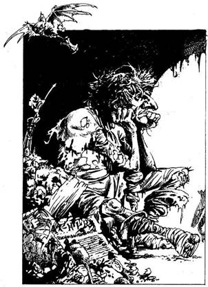
14.
Amint letépsz egy virágot, megzizzennek a levelek. Három állat formájú bokor elválik a gyökereitől, és feléd tart. Van-e Tűzgyűrűd? Ha van - lapozz a 237-re. Ha nincs - lapozz a 191-re.
15.
Átlépsz a kígyókon, és odarohansz az ajtóhoz. Tedd próbára a Szerencsédet! Ha Szerencséd van, biztonságban eljutsz az ajtóig - lapozz a 75-re. Ha nincs Szerencséd, az egyik kígyónak sikerül megmarnia a lábadat - lapozz a 298-ra.
16.
A zsákban 12 Aranytallért találsz. Nyersz 1 Szerencse pontot! Sietve elhagyod a házat, még mielőtt a tulajdonos rájönne, hogy nem az vagy, akinek kiadtad magad. Elindulsz északnak az Istálló utcán - lapozz a 333-ra.
17.
Amint mész a keskeny utcán, egy toprongyos öregembert pillantasz meg, aki a kanális tetején ül. Fejét két öklére támasztja, és nagyon szerencsétlennek látszik. Ha meg akarsz állni és beszédbe akarsz elegyedni vele - lapozz a 331-re. Ha inkább tovább folytatod az utadat kelet felé - lapozz a 161-re.
18.
Figyelmesen célzol, és elhajítod a késedet az élen haladó Csavargó felé. Dobj két kockával! Ha a kapott összeg ugyanannyi vagy kevesebb, mint ÜGYESSÉG pontjaid száma, a kés mélyen beleáll a csavargó testébe s az holtan esik össze - lapozz a 102-re. Ha a kapott összeg nagyobb, mint ÜGYESSÉG pontjaid száma, a kés elszáll a csavargó mellett, és így mindhárom csavargóval meg kell küzdened a kardod segítségével - lapozz a 225-re.
19.
A hajítódárdák hegye mérgezett. Vesztesz 4 ÉLETERŐ és 1 ÜGYESSÉG pontot! Ha még mindig életben vagy és ismét megpróbálod feltörni a zárat - lapozz a 340-re. Ha inkább kimész a szobából és felmész a csigalépcsőn a következő szintre - lapozz a 60-ra.
20.
A kalóz zsebében egy darabka száraz kenyéren kívül semmi egyebet nem találsz. Otthagyod a férfit, és nekiállsz, hogy átkutasd a hajó fedélzetén lévő faládákat és hordókat. - Lapozz a 84-re.

21.
Felnézel, s látod, hogy a csigalépcső fölvezet egészen a torony tetejébe. Megállsz az első szinten, és odamész az ajtóhoz. Egy nagy szobába nyitsz be, amelyben kényelmes, megvetett ágyat látsz. Ha becsukod magad mögött az ajtót és nyugovóra térsz - lapozz a 288-ra. Ha inkább továbbmész, hogy felderítsd, mi van még a toronyban - lapozz a 77-re.

22.
Amikor leülsz az asztalhoz, a Goblinok abbahagyják a veszekedést, és hűvösen rád néznek. Ragyás képükön gyűlölet látszik. Hirtelen felpattannak, és kardot rántanak. Egyenként kell megküzdened velük.
ÜGYESSÉG ÉLETERŐ
Első Goblin 4 5
Második Goblin 5 5
Ha te győzöl - lapozz a 198-ra.
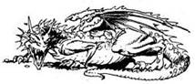
23.
A férfi megragadja a bunkóbotot, amely a széke mögött lóg, és rád támad. A férfi erős, de nem igazán jó harcos.
Ezüstmíves ÜGYESSÉG 4 ÉLETERŐ 8
Ha te győzöl - lapozz a 146-ra.

24.
Az utca bal oldalán egy másik üzletet veszel észre. A kirakaton lévő vasrácstól nem látod, mit is árulnak odabent. Lenyomod a kilincset, mely enged. Ha be akarsz menni az üzletbe - lapozz a 336-ra. Ha inkább továbbmész nyugat felé, anélkül, hogy benéznél a boltba - lapozz a 196-ra.
25.
Egy istállóban vagy, ahol egy meztelen felsőtestű férfi koszos fehér kötényben szorgoskodik a nyílt tűznél. Vörösen izzó vasat emel ki éppen kesztyűs kezével a lángokból, és az üllőn egy kalapáccsal patkó formájúra ütögeti. Homlokáról csorog a verejték a kemény munka közben. Mit teszel?
Szóba elegyedsz a
kovácsmesterrel? Lapozz a 169-re.
Kardoddal rátámadsz? Lapozz a 323-ra.
Hagyod, hadd tegye a dolgát,
és továbbmész északnak? Lapozz a 115-re.
26.
Kardodat visszadugod a hüvelyébe, és végignézel a bámészkodók csoportján. Miután tanúi voltak remek kardforgató-tudományodnak, szép nyugodtan visszamennek a helyükre. Már senki nem akar ujjat húzni veled. A kocsmáros bocsánatot kér tőled, amiért olyan barátságtalanul viselkedett veled, és meghív a bárpulthoz egy italra. Megkérdezed, nem tudja-e, hol találod meg Nikodémuszt. A kocsmáros összehúzza szemöldökét, és fürkésző pillantást vet rád, majd így szól: - Nem tudom, mit akarsz attól a ravasz vén varázslótól. Nem barátkozik az senkivel, egymagában él egy kis kunyhóban, az Éneklő híd tövében. Menj északnak, végig a Piac utcán, vágj át a piactéren, míg el nem jutsz egy hídhoz, mely a Macskahal folyón ível át, és a város régi negyedébe meg a kikötőbe vezet. Nikodémusz azonban biztosan nem fog szóba állni veled, és elég varázslatot ismer ahhoz, hogy a legrámenősebbeket is távol tudja tartani a
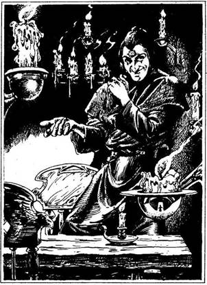
kunyhójától. - Miután figyelmezteted a kocsmárost, hogy máskor ne legyen olyan barátságtalan az idegenekkel, kimész a kocsmából, és folytatod az utadat északnak. Lapozz a 296-ra.
27.
Egy apró, ablaktalan szobába jutsz, ahol gyertyafény világít. A szobában nincs más, csak egy asztal és két szék. Egy fekete palástot és parányi papi sapkát viselő férfi áll a sarokban. Mosolyogva fogad, és hív, hogy ülj le az asztalhoz. Leül veled szemben, és az asztalon lévő hat koponya tetejére egy-egy fehér pirulát helyez, majd így szól: - Az előtted lévő hat pirula közül az egyik halálos méreg, a másik öt veszélytelen. Válassz egyet, és nyeld le. Ha életben maradsz, kapsz tőlem 20 Aranytallért. Ha meghalsz, az összes vagyonodat én tartom meg. - Ha részt akarsz venni ebben az ördögi játékban - lapozz a 223-ra. Ha inkább kimész ebből a szobából és visszasétálsz a sikátoron a Gyertya utcáig - lapozz a 165-re.
28.
Miközben az Óriás Patkányokkal csatáztál, olyan érzésed volt, mintha valaki vagy valami a közeledben guggolna a sötétben. Ha továbbmész a csatornában északnak - lapozz a 265-re. Ha inkább megfordulsz és visszamész a kijárati nyíláshoz - lapozz a 104-re.
29.
Lekuporodsz a matracra, és azon töröd a fejed, vajon mit is csinálj. Ha betegséget színlelve odavágod a vödröt a rácshoz, hogy magadra vond az
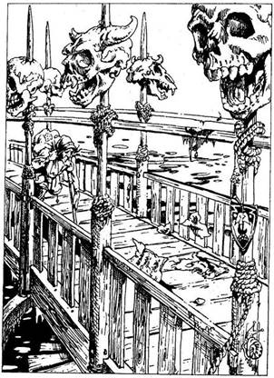
őrök figyelmét - lapozz a 143-ra. Ha inkább átvizsgálod a cellát abban a reményben, hátha találsz valamilyen rejtett kijáratot - lapozz a 230-ra.
30.
A Torony utcán menve csakhamar egy útkereszteződéshez érsz. Úgy döntesz, hogy az észak-déli irányban futó Istálló utcán mész tovább északnak - lapozz a 76-ra.
31.
Egy fahidat pillantasz meg magad előtt, mely egy koszos folyón ível át. Fekete vize telis-tele van a tenger felé hömpölygő mindenféle szeméttel, és megborzongsz, amikor egy emberi kar úszik el előtted. A hidat tartó pillérek és oszlopok a magasba nyúlnak, és a tetejükbe szúrva emberek és más élőlények koponyáit látod. A híd szerkezetén átsüvöltő szél iszonyúan zúg, mintha a halott lelkek kiáltanának segítségért. Ott, ahol állsz, szinte észrevétlenül ereszkedik le egy keskeny kis lépcsősor a híd aljába. Az északi part felől egy féllábú ember közeledik feléd, hátán egy zsákot cipelve. Ha le akarsz menni a lépcsőn - lapozz a 329-re. Ha inkább a zsákot cipelő emberrel akarnál beszélni - lapozz a 364-re.
32.
Mielőtt odaérnél az ajtóhoz, a Kígyókirálynő kinyújtja a nyakát, és a nyakadba mar - vesztesz 4 ÉLETERŐ és 1 ÜGYESSÉG pontot! Ha még mindig életben vagy, kardot rántasz, és megtámadod a Kígyókirálynőt - lapozz a 249-re.
33.
Azt mondod az őrnek, hogy néhány ezüstserleget szeretnél eladni, amit Silvertonban loptál a kocsmában, és ha megmondja neked, hol tudnád a legjobban értékesíteni árudat, egy Aranytallér üti a markát. Az őr gyanakvó pillantást vet rád, és így szól: - Hadd nézzem meg előbb azokat a serlegeket, vedd csak elő a hátizsákodból! - Mit teszel?
Azt mondod neki, hogy a serlegeket
megátkozták, és csakis egy varázsló
vizsgálhatja meg azokat? Lapozz a 381-re.
Megpróbálsz elfutni mellette és
berohanni a főutcába? Lapozz a 291-re.
Gyorsan rátámadsz a kardoddal? Lapozz a 49-re.
34.
A hintó dübörögve száguld el melletted, és látod, amint a kocsis teljes erővel ösztökéli a négy lovat, mintha az élete függne tőle. Ahogy a kerékdübörgés hangja a távolba vész, ismét kilépsz az utcára, és folytatod utadat nyugat felé - lapozz a 171-re.
35.
Belököd a szolgát az ajtón, majd belédöföd a kardodat. Legnagyobb meglepetésedre kardod nem sebzi meg. A szolga lassan elindul feléd, s megpróbál hozzád érni csontos, korhadt kezével. Megragadja a karodat, de sikerül ellöknöd magadtól. Ahol megfogott, mintha megégett volna a karod, s mégis rothadt hús szagát érzed. Vesztesz 2 ÉLETERŐ pontot! Rájössz, hogy aki előtted áll, az nem más, mint egy Lélekrabló, Csontos Zanbar egyik hűséges szolgája. Amint előrenyújtott két kezével ismét elindul feléd, gyorsan végiggondolod, mit is kell tenned. Mit teszel?
Rálősz az ezüst nyílvesszővel? Lapozz a 189-re.
Felé tartod a tükrödet (ha van),
hogy megpillantsa önmagát? Lapozz a 305-re.
Rávillantod a Jéggyűrűdet
(ha van)? Lapozz a 382-re.
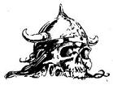
36.
A férfi a pultra támaszkodva közli veled, hogy a Láthatatlanság Gyűrűje 10 Aranytallérba, a Tűzgyűrű 8 Aranytallérba, a Jéggyűrű pedig 7 Aranytallérba kerül. Ha valamelyik gyűrűt megvennéd, ne felejtsd el jelölni a változást a Kalandlapodon. Elbúcsúzol a férfitól, majd miután a gyűrűt az ujjadra húztad, kilépsz az üzletből, s folytatod utadat nyugat felé. Lapozz a 196-ra.
37.
A férfi megpengeti a lantját, és vidám dalba kezd, amely rólad szól, és a jószerencsédről - valóban képes rá, hogy szerencsét hozzon neked! Nyersz 2 Szerencse pontot, és továbbmész a következő bódéig. Lapozz a 398-ra.
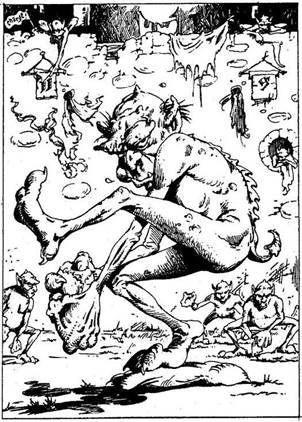
38.
Az egyik férfi belenyúl zöld zakójának zsebébe, és elővesz egy vékony ezüst karperecet. Mikor átadja neked, látod, hogy egy rovar képe van belevésve. A férfi elmagyarázza neked, hogy a karperecnek akkora a varázsereje, hogy akár az óriásrovarokat is képes megölni. Felhúzod a karodra, és kimész a kocsmából. Ismét északnak indulsz tovább - lapozz a 296-ra.
39.
Kinyitod a hátizsákodat, és úgy teszel, mintha az ezüsttárgyat keresnéd. A Kígyókirálynő egyre idegesebbé és türelmetlenebbé válik. Nem tudsz mit kitalálni, és pánikba esel. Ha oda akarsz futni a bejárati ajtóhoz - lapozz a 32-re. Ha kardot rántasz és rátámadsz a Kígyókirálynőre - lapozz a 249-re.
40.
A fal tetejéről látod, hogy az egy csapat barna lényt vesz körül, akik valami furcsa játékot játszanak botokkal és bőrlabdával. Az egyik teremtmény épp beleütött a labdába, és most a másik csapat játékosa felé rohan, aki egy zsákon áll. Azonnal rájössz, hogy ezek a lények a Base-ek, akik kedvenc játékukat, a Baseballt játsszák. Ha megkéred őket, hogy beállhass közéjük játszani - lapozz a 168-ra. Ha inkább lemész a lépcsőn a falról és az útkereszteződéshez visszatérve tovább folytatod az utadat nyugatnak a Kikötő utcán - lapozz a 91-re.
41.
A két őr, aki lefogott, egymásra néz, majd mindketten kérdőn harmadik társukra pillantanak. Az bólint, mire a két őr elereszt. Amikor átnyújtod neki a 15 Aranytallért, szúrós szemmel néz rád, és így szól: - Ha Azzur nagyúr megtudja, hogy engedély nélkül tartózkodsz a városban, halál fia vagy! Ami pedig Nikodémuszt illeti, őt keresd meg egyedül! - Visszafogod magad, nehogy kardot ránts, majd megfordulsz, és belépsz a városba. Lapozz a 74-re.
42.
Közlöd a férfival, hogy az összeget, amit kér, nem áll módodban kifizetni. Vállat von, és így szól: - Oké, de van-e akkor valami élelmed a számomra? - Kinyitod a hátizsákodat, és a férfi kiveszi belőle az összes megmaradt Élelmedet. Ezután nekiáll kiönteni és megformázni az ezüst nyílvesszőt. Türelmesen vársz, míg elkészül vele. Miközben átnyújtja neked a kész fegyvert, csak annyit mond, hogy ezzel biztosan célba találsz. Megköszönöd a fáradozását, és kilépsz az üzletből. Az utcán ismét keletnek mész tovább - lapozz a 100-ra.
43.
Amikor a serleg tüzes parázzsá válik a kezedben, felordítasz a fájdalomtól. Iszonyúan megégsz. Vesztesz 2 ÜGYESSÉG és 2 Szerencse pontot! Ha még nem tetted volna, most felemelheted az A serleget - lapozz a 175-re, vagy a B serleget - lapozz a 209-re. Ha nem érdekelnek a serlegek, átmehetsz a boltíves átjárón - lapozz a 107-re, vagy felmehetsz a lépcsőn - lapozz a 60-ra.
44.
Három jól megtermett, tüskés buzogánnyal felfegyverzett férfi állja el az utadat. Mindegyikük homlokán egy-egy tetovált piros csillagot látsz. Csavargók ezek, akik ki akarnak rabolni. Ha van Hajítókésed, sikerül az egyiket leszúrnod, mielőtt még odaérnének hozzád - lapozz a 18-ra. Ha nincs Hajítókésed, mind a hárommal meg kell küzdened a kardod segítségével - lapozz a 225-re.

45.
Az üveggömb darabokra törik a macskaköves úton. Amint a füst a levegővel érintkezik, aranyszínűvé változik, és szárnyas sisak alakját ölti fel. A sisak megszilárdul, a kövezeten fekszik a napfényben szikrázva. Életedben nem láttál még ehhez fogható remek sisakot! Ha a fejedre akarod tenni - lapozz a 376-ra. Ha inkább ott hagyod, ahol van és továbbmész keletnek - lapozz a 161-re.
46.
A kovácsmester elteszi a pénzedet, és odamegy az egyik sarokban lévő szénabálákhoz. Az egyiket felemeli, s alatta megpillantod a páncélruhát. Hozzád fordulva így szól a kovács: - Mindent el kell itt rejteni! Senkiben sem bízhatsz meg! - A ruha kitűnően illik rád remek munka. Nyersz 2 ÜGYESSÉG pontot! Új szerzeményeddel távozol az istállóból, és folytatod utadat északnak - lapozz a 115-re.
47.
A villám belecsap a melledbe, és elterülsz a földön. Vesztesz 3 ÉLETERŐ pontot! Ha még mindig életben vagy, a kövér ember nevetésben tör ki. Lehet, hogy már nem is figyel oda rád? Úgy döntesz, hogy hason fekvő helyzetedből hozzávágod a kardodat. Dobj két kockával! Ha a kapott összeg kevesebb vagy ugyanannyi, mint ÜGYESSÉG pontjaid száma, a kard áthatol a kalóz mellén, és a fickó meghal - lapozz a 313-ra. Ha a kapott összeg nagyobb, mint ÜGYESSÉG pontjaid száma, a kard elszáll mellette, és csörömpölve leesik a márványpadlóra - lapozz a 81-re.
48.
Az akna oldalához vaslétrát erősítettek, melyen le lehet menni egy alagútba. Lent sötét van, és igen kellemetlen szag terjeng a levegőben. Ha lemászol a létrán - lapozz a 321-re. Ha inkább visszateszed az akna tetejét a helyére - lapozz a 205-re.
49.
Amikor előrántod a kardodat, az őr jobbra lép, és megpróbálja megkongatni az őrbódé falán lévő kicsiny harangot. Tedd próbára a Szerencsédet! Ha Szerencséd van, nem éri el a harangot, és káromkodva neked támad a lándzsájával - lapozz a 10-re! Ha nincs Szerencséd, eléri a harangot, és sikerül megkondítania, mielőtt neked rontana a lándzsájával. - Lapozz a 311-re.
50.
A lépcsőn lejutsz a hajó rakodóterébe, mely teljesen üres. Innen egy folyosó vezet tovább, melynek végében két csukott ajtó van. Odamész az ajtóhoz, és hallgatózni kezdesz. A bal oldali ajtó mögül hangos horkolást hallasz. A jobb oldali ajtó mögött csönd van. Ha be akarsz nyitni a bal oldali ajtón - lapozz a 271-re. Ha a jobb oldali ajtón akarsz benyitni - lapozz a 232-re.
51.
Odamész az öreghez, és fölsegíted. Igen hálás neked, és meghív egy italra a közeli kocsmába. Ha elfogadod a meghívását - lapozz a 325-re. Ha inkább továbbmész utadon - lapozz a 348-ra.
52.
A következő bódéban egy fiatalember fegyvereket és a hozzájuk tartozó felszerelést kínálja. Portékáinak árát krétával egy palatáblára írta ki:
Hajítókés 4 Aranytallér
Mászókötél 2 Aranytallér
Henteshúskampó 2 Aranytallér
Vasszurony 1 Aranytallér
Lámpás 3 Aranytallér
Ha meg akarsz venni néhány tárgyat a fentiek közül, vagy tán az összeset szeretnéd - jelöld a Kalandlapodon! Ezt követően folytasd utadat északnak. Lapozz a 200-ra.
53.
A boltíves átjáró előtt lévő selyemfüggöny hirtelen szétlibben, és egy furcsa teremtmény lép a szobába. Kígyófeje van, mely különös módon ül egy pazar ruhába öltözött fiatal nő torzóján. A kígyó szája kinyílik, és egy villás végű nyelv pattan ki rajta, majd visszahúzódik, miközben a Kígyókirálynő így szól: - Ne próbálj meg becsapni engem! Jól tudom, hogy az a gaz Borryman soha nem küldene nekem virágot! Milyen ezüstből készült ajándékot hoztál nekem? - Ha van a hátizsákodban valamilyen ezüsttárgy, amit odaadnál Kígyókirálynőnek - lapozz a 328-ra. Ha nincs olyan ezüsttárgyad, amitől szívesen megválnál - lapozz a 39-re.

54.
Átkutatod az őrházat, és találsz 2 Aranytallért meg egy kereskedői engedélyt, amelynek a tulajdonosát felhatalmazzák, hogy Feketehomok kikötőben árulja a portékáit. Magadhoz veszed a zsákmányodat, és kilépsz a házból. A főkapu mellett álló őr nem vesz észre, így besétálsz a városba. Lapozz a 74-re.
55.
A virágszirmokat belemártod a döglött kutyák kiömlött vérébe. A szirmok, amint a vérrel találkoznak, szikrázni kezdenek és pukkanó hangot hallatnak. A földön 10 Aranytallért találsz. Fölszeded a pénzt, és visszamész a sikátoron a Kikötő utcába, melyen balra fordulsz - lapozz a 180-ra.

56.
Vagy húsz őr rohan feléd, hogy elkapjon, és semmi értelme a további küzdelemnek. Elhurcolnak az egyik bástya mélyére, és láncra vernek. Legnagyobb rémületedre a két ismerős Troll lép be a celládba. Felváltva vernek agyba-főbe, mielőtt kimondanák a végső ítéletet: öt évet kell eltöltened a föld alatti börtön magánzárkájában. Néhány perccel később egy púpos foglár jelenik meg, kezében egy bikabőr korbáccsal. Béklyót köt a lábadon lévő láncra, majd levezet a mélybe, ahol megkezded börtönbüntetésedet. Kalandod itt véget ér!

57.
A Törpe felpattan a székéről, arca csupa gyűlölet. Két nevet kiált hangosan, mire két hatalmas fekete kutya pattan elő az asztal alól. Nyáladzó szájukból hosszú tépőfogak villannak elő. Wraggins mutatóujjával feléd bök, és elkiáltja magát: - Öljétek meg Nikodémusz barátját! - mire a kutyák hangos ugatással rád vetik magukat. Meg kell küzdened az életedért. Külön-külön csapj össze a kutyákkal.
ÜGYESSÉG ÉLETERŐ
Első Farkaskutya 7 7
Második Farkaskutya 7 5
Ha te győzöl - lapozz a 360-ra.
58.
Amint elrobog melletted a szekér, a kocsis rád csap az ostorával. Vesztesz 1 ÉLETERŐ pontot! Miközben a kocsis eltűnik szekerével a szemed elől, átkozódva dörzsölöd meg a nyakadat, ahol az ostor érte. Ismét továbbindulsz nyugatnak - lapozz a 171-re.
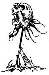
59.
A Boszorkány nevetve szemléli gyötrődésedet, majd ruhája redői közül előránt egy hosszú, csillogó pengéjű tort. Tehetetlen vagy, nem tudod megakadályozni, hogy beléd döfje. Ma este a tányérján nemcsak patkányhús lesz... Kalandod itt véget ér!
60.
A lépcsősor tetején két zárt ajtó van. Miközben azon töröd a fejedet, vajon melyik ajtón nyiss be, lentről zajt hallasz - valaki bejött a bejárati ajtón. Ekkor egy férfi hangját hallod: - Repülj csak, gyönyörűségem, keresd meg a betolakodót! - Ha kardot rántasz, hogy felkészülj a támadásra - lapozz a 349-re. Ha inkább elszelelsz előle s a lépcsőforduló tetején kiugrasz az ablakon az utcára - lapozz a 192-re.
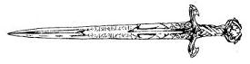
61.
A boltíves átjáró előtt lévő selyemfüggöny hirtelen szétlibben, és egy furcsa teremtmény lép be a szobába. Kígyófeje van, mely különös módon ül egy pazar ruhába öltözött nő torzóján. Nem tudod, mitévő légy, kardot ránts-e, vagy sem? Ekkor a kígyó szája kinyílik - és egy villás végű nyelv pattan ki rajta, majd visszahúzódik, miközben a Kígyókirálynő arra kér, mutasd meg a virágokat, amit Azzur nagyúr küldött neki. Ha van nálad egy csokor virág - lapozz a 172-re. Ha nincs nálad virágcsokor - lapozz a 350-re.
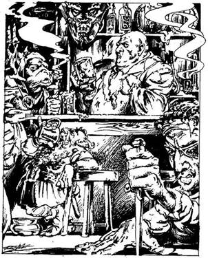
62.
Az öreg faajtón belépve koszos, füstös helyiségbe jutsz. Nyolc kerek asztal áll a terem közepén, melyeknél néhány undorító külsejű, rosszarcú pasas ül; ilyen alakokat még soha életedben nem láttál. A kocsma végében hosszú bárpult van, rajta flaskák, korsók tömkelege. A pult mögött mocskos kötényben áll maga a kocsmáros. Elég öreg már, kopaszodik, arca jobb oldalán ronda, fekete forradásnyom húzódik. Kocsmájának vendégei nemcsak emberek, más teremtmények is vigadnak itt. Mit teszel?
Odamész a bárpulthoz, és
beszélsz a kocsmárossal? Lapozz a 136-ra.
Leülsz egy asztalhoz, melynél három
Törpe kockajátékot játszik? Lapozz a 173-ra.
Leülsz ahhoz az asztalhoz, melynél
három férfi azzal szórakozik, hogy egy tőrt
szurkál az asztalon szétterített
kezük ujjai közé? Lapozz a 190-re.
Leülsz ahhoz az asztalhoz, melynél
két Goblin veszekszik éppen? Lapozz a 22-re.
Kilépsz a kocsmából, és
továbbmész északnak? Lapozz a 296-ra.
63.
Az Elf bevezet egy szobába, melyet bíborszínű gyertyák világítanak meg különös fénnyel. Megállsz, és bambán meredsz a gyertyákra, miközben színes álmok világába repülsz. Míg transzban vagy, az Elf elemel a hátizsákodból két tárgyat és 5 Aranytallért (ha van nálad egyáltalán). Amikor magadhoz térsz, nem emlékszel rá, hogy bárki, bármit ellopott volna tőled, és megköszönöd az Elfnek, hogy megmutatta neked gyönyörű gyertyáit. Kint az utcán keletnek mész tovább - lapozz a 280-ra.
64.
Morgást és hangos ugatást hallasz a kutyaólból. Hirtelen egy iszonyúan nagy farkas ugrik ki belőle, és egyenesen feléd tart. Nyakörvéhez hosszú láncot erősítettek, és ha szerencséd van, ahhoz nem elég hosszú, hogy az állat elérjen. Tedd próbára a Szerencsédet! Ha Szerencséd van, a lánc megfeszül és visszarántja a farkast - lapozz a 353-ra. Ha nincs Szerencséd, a lánc elég hosszúnak bizonyul ahhoz, hogy a farkas rád ugorjon és a nyakadba harapjon. Vesztesz 1 ÉLETERŐ pontot, és lapozz a 309-re.
65.
A következő szinten két ajtó van egymás mellett. Az egyik fehérre, a másik feketére van festve. Hirtelen ki tudja, honnan, egy hang szólal meg: - Ó, te bolond kalandor, hogy fordulhat meg egyáltalán olyasmi a fejedben, hogy legyőzz engem, a mindenható Csontos Zanbart? Én minden mozdulatodat követem, de neked fogalmad sincs róla, hol vagyok! Ha-ha-ha! - Mit teszel?
Benyitsz a fehér ajtón? Lapozz a 319-re.
Benyitsz a fekete ajtón? Lapozz a 96-ra.
Továbbmész, felfelé a
lépcsőn? Lapozz a 197-re.
66.
A Törpe elmosolyodik, és dicsekedve mondja, hogy tud egy olyan kulcsot csinálni, amellyel bármilyen zárat ki lehet nyitni Feketehomok kikötőben. Közli, hogy speciális kulcsainak 10 Aranytallér darabja. Ha akarsz venni tőle egy kulcsot - jelöld a Kalandlapodon. Akár veszel kulcsot, akár nem, mindenképpen kimész az üzletből, és folytatod utadat nyugat felé - lapozz a 300-ra.
67.
A nő izgatott hangon szól ki a függöny mögül: - Ó, kíváncsi vagyok, vajon melyik kedvesem küldött nekem virágot? Meg tudja mondani, ki küldte? - Ha mondasz neki egy nevet - lapozz a 195-re. Ha azt mondod neki, hogy nem tudod, ki küldte - lapozz a 79-re.
68.
A leves íze undorító. Ha mégis lenyeled - lapozz a 380-ra. Ha inkább kiköpöd - lapozz a 262-re.
69.
Amikor az őrök megpróbálnak elvonszolni, minden erőddel igyekszel kiszabadulni a szorításukból. Dobj két kockával! Ha a kapott összeg kevesebb vagy ugyanannyi, mint ÜGYESSÉG pontjaid száma - lapozz a 355-re. Ha a kapott összeg nagyobb, mint ÜGYESSÉG pontjaid száma - képtelen vagy kiszabadulni a karmaikból, és elvezetnek, miközben küzdesz ellenük, ahogy csak bírsz. Lapozz a 151-re.
70.
Amint hozzáérsz a ládához, az eltűnik a szemed elől. Kacagást hallasz a hátad mögül, s a tükörben megpillantod egy fekete palástot viselő zöld, áttetsző szemű csontváz undorító tükörképét. A csontváz koponyájának tetején aranykorona ül. Megfordulsz, de már késő! Csontos Zanbar csontváz keze megérint, és máris kioltja életedet. Mostantól fogva te is élőholt szolgái közé tartozol.
71.
Az Ogre szobájában iszonyú a felfordulás, tele van eldobált ételmaradékkal, szeméttel. Mintha évek óta nem takarítottak volna itt. Átgázolsz a szeméthalmon, és egy lakkozott faládát találsz, melynek tetején gyöngyházberakásos fogantyú van. A ládát lakatra zárták, a kulcsot viszont sehol nem találod. Ha szét akarod zúzni a ládát a kardoddal - lapozz a 324-re. Ha kimész a házból és tovább folytatod az utadat északnak anélkül, hogy megpróbálnád kinyitni a ládát - lapozz a 282-re.
72.
Amikor lehajolsz, hogy segíts a sérült kisfiún, az hirtelen megfordul, és a kezében megvillan egy tőr fényes éle. A kisfiú valójában egy tolvaj Goblin, és meg kell vele küzdened az életedért.
Goblin ÜGYESSÉG 5 ÉLETERŐ 4
Ha te győzöl - lapozz a 208-ra.
73.
Kardot rántasz, és máris készen állsz, hogy harcba szállj a Trollokkal. Szemmel láthatólag hálásak neked, mert lehetővé teszed számukra, hogy kedvenc sportjuknak hódoljanak - az emberölésnek. Harci bárdjukat lengetve közelednek feléd. Savanyúhas fogait vicsorgatva így szól: - Engedj, Kövérorr - hagyd, hogy én bánjak el ezzel a kutyával! Egyenként küzdj meg velük.
ÜGYESSÉG ÉLETERŐ
Savanyúhas 10 11
Kövérorr 9 10
Ha te győzöl - lapozz a 110-re. Ha akarsz, Elmenekülhetsz, miután megölted Savanyúhast és pajzsodat hozzávágtad Kövérorrhoz. Rohanva indulsz el nyugatnak a Malom utcán. Vesztesz 1 ÜGYESSÉG pontot és lapozz a 239-re.
74.
Amint belépsz a főkapun, eléd tárulnak a kikötőváros macskaköves keskeny utcácskái. Ezeket az utcákat rozoga, öreg házak szegélyezik, melynek felső szintje életveszélyesen csüng alá. Mit teszel?
Nyugatnak mész, végig a
Kulcs utcán? Lapozz a 95-re.
Északnak indulsz el a
Piac utcán? Lapozz a 116-ra.
Keletnek mész le az
Óra utcán? Lapozz a 17-re.
75.
Kint elállt az eső, és ismét útnak indulhatsz északnak - lapozz a 31-re.

76.
Bal kéz felől deszkából épült nagy istállót látsz a házak mögött. Az istálló előtti cölöpnél két ló áll kikötve. Az istálló lapos tetején füst száll fel a csavart kéményből. Ha be akarsz menni az istállóba - lapozz a 25-re. Ha inkább továbbmész északnak - lapozz a 115-re.
77.
Nyugodtan visszamész a lépcsőhöz, és felmész a második szintre. Itt ismét egy ajtót találsz a lépcsőfordulóban. Ha ki akarod nyitni az ajtót - lapozz a 292-re. Ha felmész a harmadik szintre - lapozz a 310-re.
78.
Néhány száz méteren át az utca a rakparton vezet, majd egy útkereszteződéshez érsz. Ha továbbmész északnak a Kikötő utcán - lapozz a 256-ra. Ha inkább keletnek mész a Facipő utcán - lapozz a 216-ra.
79.
A boltíves átjáró előtt lévő selyemfüggöny hirtelen szétlibben, és egy furcsa teremtmény lép a szobába. Kígyófeje van, mely különös módon ül egy pazar ruhába öltözött fiatal nő torzóján. Kinyitja a száját, s egy villás végű kígyónyelv pattan ki rajta, majd visszahúzódik, amint a Kígyókirálynő rád ripakodik: - Ne hazudj nekem, te gazember! Orgyilkos vagy, és azért jöttél, hogy megölj engem! De te fogsz meghalni! - A Kígyókirálynő hirtelen odakap a szájával a nyakadhoz, és beléd mar. Vesztesz 4 ÉLETERŐ és 1 ÜGYESSÉG pontot! Ha még mindig életben vagy, kardoddal védd meg magad!
Kígyókirálynő ÜGYESSÉG 9 ÉLETERŐ 7
Ha te győzöl - lapozz a 295-re.
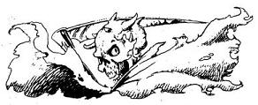
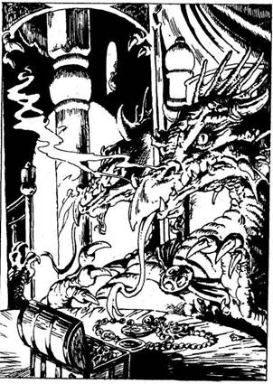
80.
A lépcsők egy újabb, pirosra festett falú szobába vezetnek. Az asztalnál egy hosszú orrú, mélyvörös színű, pikkelyes bőrű, különös teremtmény ül. Szájában éles, kilógó fogak sorakoznak, melyek között ki-be mozog hosszú, rózsaszín nyelve. A teremtmény felemeli a fejét, és rád mereszti a szemét. Rajtad van a skorpió melltű? Ha igen - lapozz a 392-re. Ha nincs - lapozz a 215-re.
81.
A férfi még hangosabban kezd nevetni, és kigúnyol, amiért meg akartad ölni. Felpattansz, és kardodat felkapva odarohansz a bejárati ajtóhoz. A férfi ekkor egy újabb villámot lövell rád. Tedd próbára a Szerencsédet! Ha Szerencséd van, a villám nem talál el, és sikerül kinyitnod az ajtót, ahonnan északnak futsz tovább az utcán - lapozz a 304-re. Ha nincs Szerencséd, a villám belevág a hátadba, és felordítasz a fájdalomtól - lapozz a 243-ra.
82.
Mielőtt a Boszorkány végigmondaná a varázsigét, belenyúlsz a hátizsákodba, és előhúzod belőle a bájitalt tartalmazó üveget. Gyorsan kiiszod a benne lévő folyadékot, mely azonnal hat. A Boszorkány meg mindig gonosz varázsszavait mormolja, de te már nem hallod. Már biztonságban vagy, így hát kardot rántasz, és odalépsz hozzá. Megragadod csapzott haját, és levágsz egy tincset. Vonaglani, rúgni és köpködni kezd. Egészen közelről látod a friss vért a szája körül - minden bizonnyal már nem tudta kivárni, hogy meg is főzze a patkányokat, melyeket megölt. Undorodsz ugyan, de mégis örülsz, hogy megszerezted az egyik olyan tárgyat, amelyre szükséged lesz majd ahhoz, hogy megsemmisítsd az Éj Hercegét. A Boszorkányt belelököd a szennyvízcsatornába, és visszamész a bejárati nyíláshoz - lapozz a 104-re.
83.
Szerencsédre a köcsögben az van, amit a címke mond, de azért a keverék hatását nem lehet előre megjósolni. Dobj egy kockával! A kapott számmal növelheted ÉLETERŐ pontjaid számát! Ha folytatni akarod az üzletben a kutatást - lapozz a 322-re. Ha inkább kimész az üzletből és továbbmész északnak - lapozz a 93-ra.
84.
A hordókban rothadt gyümölcs van, a ládákban béklyók és lábvasak. Lehetséges, hogy ez rabszolgakereskedő-hajó. A fedélzeten nem találsz semmi érdekeset, aminek hasznát vehetnéd. Ha odamész a fedélzeten lévő kabinhoz és lemész a lépcsőn a hajófenékbe - lapozz az 50-re. Ha inkább elhagyod a hajót és visszamenve a hajó mellett balra fordulsz északnak a Kikötő utcába - lapozz a 78-ra.
85.
Fizetsz az ezüstmívesnek, és türelmesen vársz, míg elkészíti számodra az ezüst nyílvesszőt. Végül elkészül vele, és biztosít afelől, hogy halálpontosan célba találsz vele. Megköszönöd a fáradozását, és kimész a boltból. Az utcán ismét keletnek folytatod az utadat - lapozz a 100-ra.
86.
A férfi nyakában bőrerszény lóg, melyben egy kis üveggömb van. Úgy látod, mintha az üvegben füst gomolyogna. Mit teszel?
Földhöz vágod az
üveggömböt? Lapozz a 45-re.
Beteszed az üveggömböt a
hátizsákodba? Lapozz a 194-re.
Nem nyúlsz az üveggömbhöz, és
folytatod az utadat keletnek? Lapozz a 161-re.
87.
Felérsz a kötélhágcsó tetejére, s onnan a korláton áthajolva végignézel a fedélzeten. Két hatalmas árboc nyúlik a magasba. Faládák, hordók és kötéltekercsek hevernek szanaszét a fedélzeten, a hajóhídon pedig a legénység egyik tagja áll az őrségben. A fedélzet közepén egy kis kabint látsz, melynek nyitva van az ajtaja. Az ajtó mögött lépcsők vezetnek le a hajófenékbe. Ha meg akarod nézni, mi van egy-két faládában vagy hordóban, el kell bánnod az őrt álló kalózzal - lapozz a 120-ra. Ha a fedélzeten az ajtó mögött lévő lépcsőhöz lopódzol - lapozz az 50-re.
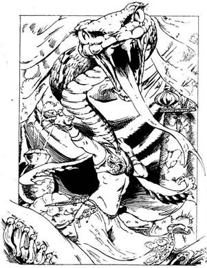
88.
Elhúzod a függönyt, és egy pompásan berendezett budoárba lépsz be. Egy nőt látsz odabent, aki háttal áll neked. Amikor elindulsz felé, hirtelen megfordul, és döbbenten veszed észre, hogy a fiatal női arc helyett egy hatalmas kígyófej mered rád. A kígyónyak megnyúlik, és a hatalmas fogak a nyakadba marnak. Elveszted az egyensúlyodat - vonj le magadtól 4 ÉLETERŐ és 1 ÜGYESSÉG pontot, mielőtt kardot rántanál, hogy megvédd magad a Kígyókirálynőtől.
Kígyókirálynő ÜGYESSÉG 9 ÉLETERŐ 7
Ha legyőzöd - lapozz a 295-re. Ha akarod, a harmadik Forduló után Elmenekülhetsz a házból; kijutsz az Istálló utcára, és északnak sietsz tovább - lapozz a 333-ra.
89.
Amint felhúzod a kesztyűt, az életre kel, és szorosan rásimul a kezedre. Anyaga egyszer csak megváltozik, égetni kezdi a bőrödet, s olyan érzésed támad, mintha forró szurokba nyúltál volna, amelytől képtelen vagy megszabadulni. Szerencsére rövidesen hűlni kezd, de egy vékony fehér réteg megmarad belőle, és ez megnehezíti kezed mozgását. Vesztesz 2 ÜGYESSÉG pontot! Káromkodva mész ki a házból, és ismét északnak indulsz - lapozz a 282-re.

90.
Teljes erővel meglendíted a kardodat, és lesújtasz vele a vastag láncra. Legnagyobb meglepetésedre kardod lepattan róla. Mielőtt újra próbálkoznál, négy városi őr fog közre, és neked szegezi a dárdáját. Mit teszel?
Közlöd velük, hogy elfogtál egy
szökött foglyot? Lapozz a 199-re.
Lepénzeled őket, ha futni
hagynak a fogollyal együtt? Lapozz a 187-re.
91.
Egy koldus mellett haladsz el az utcán. A kanális szélén ül, és üres bádogdobozt tart a kezében. Ha bele akarsz dobni a dobozába egy Aranytallért - lapozz a 332-re. Ha inkább elmész mellette - lapozz a 124-re.
92.
Benyúlsz a téglák közt lévő lyukon, melynek mélyén egy sima, lapos tárgyat tapintasz ki. Megfogod és kihúzod. Egy tükröt tartasz a kezedben! Elteszed a hátizsákodba, és visszamész a bejárati nyíláshoz - lapozz a 174-re.

93.
Az utcán jobb kéz felől egy kocsmát veszel észre, amely a Foltos Kutya nevet viseli. Ha bemész a kocsmába - lapozz a 62-re. Ha inkább továbbmész északnak - lapozz a 296-ra.
94.
A kis ember mosolyogva így szól: - Mi sem egyszerűbb ennél! - Belenyúl a zsebébe, egy kevés csillámló port vesz elő, és rád szórja. Amint a por leszáll a ruhádra, úgy érzed, mintha iszonyatos erő töltené el a testedet. Nyersz 6 ÉLETERŐ pontot! Ekkor a kis ember azt mondja, olyan hálás neked, hogy hajlandó még egy kívánságodat teljesíteni. Most, hogy erődet tökéletesen visszanyerted, úgy érzed, képes leszel rá, hogy megvívj Csontos Zanbarral, s ezért arra kéred, árulja el neked, hol találod meg! Lapozz a 234-re.
95.
Az utca bal oldalán egy kis üzletet veszel észre, melynek bejárati ajtaja fölött nagy vaskulcs csüng. A kirakat ablaküvegén a következő feliratot olvasod: "J. B. Wraggins, Lakatosmester". Ha bemész az üzletbe - lapozz a 224-re. Ha inkább továbbmész nyugatnak - lapozz a 300-ra.

96.
A szobában, ahová beléptél, iszonyatos tárgyakat és festményeket zsúfoltak össze. Egy fekete terítővel letakart asztal előtt egy fekete macska ül. A szemközti falon lévő tükör mindkét oldalán két-két fekete gyertya ég. Az asztal közepén lévő aranyládikóban egy aranykoponyát látsz. Mit teszel?
Odamész a ládikóhoz? Lapozz a 257-re.
Becsukod az ajtót, és benyitsz
a fehér ajtón (ha eddig még nem
tetted volna)? Lapozz a 319-re.
Becsukod az ajtót, és miután
visszatérsz a csigalépcsőhöz, felmész
a következő szintre? Lapozz a 197-re.
97.
Úgy döntesz, hogy gyorsan körülnézel a kutyaólban. Odabent egy kampón vaskulcs lóg, amit zsebre vágsz. Nyersz 1 Szerencse pontot, és lapozz a 353-ra.
98.
Fogaddal kihúzod a dugót az üvegből, és nagyot húzol a folyadékból. Szerencsédre az üvegben az van, amit a férfi mondott neked. Nyersz 3 ÉLETERŐ és 1 Szerencse pontot! Felfrissülve indulsz el ismét keletnek, miután búcsút intesz az öregembernek - lapozz a 363-ra.

99.
Képtelen vagy megmondani, miért is tartózkodsz Feketehomok kikötőben, és az őrök kardjukat kivonva közlik veled, hogy letartóztatnak. Te is kardot rántasz, és egyenként küzdesz meg velük.
ÜGYESSÉG ÉLETERŐ
Első Városi Őr 7 4
Második Városi Őr 6 6
Ha te győzöl - lapozz a 285-re.
100.
Csakhamar egy útkereszteződéshez érsz. Ha észak felé futsz tovább, fel a Torony utcán - lapozz a 127-re. Ha inkább keletnek mész az Istálló utcán - lapozz a 246-ra.
101.
Belépsz az üzletbe, és a pult mögött egy Ember-Orkot látsz. Mosolyogva szemléli balszerencsédet, majd így szól: - Ó, még egy Öreg Trollfival sem tudsz megbirkózni! Nehogy azt hidd, hogy visszaadom a pénzedet! - Ha rátámadsz a szemtelen Ember-Orkra - lapozz az 5-re. Ha inkább kifordulsz az üzletből és haragodat legyűrve ismét északnak mész tovább - lapozz a 93-ra.
102.
A másik két csavargó felhagy társa élesztgetésével, hiszen már késő - a csavargó halott. Úgy látod, nem nagyon tudják, mitévők legyenek. Összedugják a fejüket, majd fölemelik a földről halott barátjukat, és elindulnak vele a tőled jobbra nyíló szűk sikátor felé. Gyorsan eliszkolsz észak felé, még mielőtt a csavargóknak ideje lenne rá, hogy bandájuk újabb tagjaival ismét megjelenjenek. Lapozz a 372-re.
103.
Egy útkereszteződéshez érsz. A keletnek tartó utca az Óra utcában folytatódik. Az észak-dél irányba futó utca a Piac utca. Észak felé pillantva hangosan éljenző, integető tömeget látsz. Úgy döntesz, hogy követed őket - lapozz a 148-ra.
104.
Miután visszatérsz a bejárati nyíláshoz, vagy felmászol a létrán az utcára, ahol keletnek folytatod az utadat - lapozz a 205-re, vagy ha még nem tetted volna, délnek mehetsz a csatornában - lapozz a 118-ra.
105.
Az utcában a legtöbb ház szorosan egymás mellé épült, de balra az egyik ház kissé hátrább áll, egymagában. A vastag tölgyfából készült bejárati ajtó mellett egy kutyaólat látsz. Ha odamész a bejárati ajtóhoz - lapozz a 64-re. Ha inkább folytatod utadat északnak - lapozz a 304-re.
106.
A Lámpás, amit hozzávágtál a Múmiához, darabokra törik, és égő olaj ömlik ki belőle. A lángok gyorsan beborítják a száraz pólyát, és a Múmia csakhamar a lángok martalékává válik. Ha át akarod vizsgálni a nyitott szarkofágot - lapozz a 163-ra. Ha azonnal távozol a szobából - lapozz a 231-re.

107.
A hátsó szoba épp olyan pompásan van bebútorozva, mint az első. A túlsó sarokban egy faládát látsz, melyet a padlóhoz erősítettek. Jól be van zárva. Ha megpróbálod kinyitni - lapozz a 128-ra. Ha inkább távozol a szobából és felmész a lépcsőn a következő szintre - lapozz a 60-ra.

108.
Lassan leereszkedsz a földre. A magas oromzat tetejéről öklüket rázzák feléd az őrök. Elhagytad hát Feketehomok kikötőt! Rendelkezel-e az összes tárggyal, amely az Éj Hercegének elpusztításához szükséges? Ha igen, és a homlokodon ott a tetoválás - lapozz a 201-re. Ha bármelyik tárgy hiányzik a kívántak közül vagy a homlokodon nincs tetoválás - lapozz a 299-re.

109.
Az őrök egymásra néznek, majd kitör belőlük a nevetés, aztán az egyik így szól: - Csak nem gondolod, hogy ócska 5 Aranytallérért beengedünk Feketehomok kikötőbe? Ha Azzur nagyúr megtudja, hogy engedély nélkül bocsátottunk be a varosba, a fejünket veszi. Ne próbálj megvesztegetni bennünket! A föld alatti börtönben a helyed! Lapozz a 151-re.

110.
Küzdelmetek magára vonta néhány bámészkodó figyelmét. A koldusok közül néhányan még meg is tapsoltak, amikor leszúrtad az öreg Savanyúhasat. Az egyik ravasz tekintetű fickó azonban fogta magát és elszaladt; valószínűleg újabb őrökért mehetett. Veszélyes lehet továbbra is itt maradnod, ezért futásnak eredsz a Malom utcán, nyugat felé - lapozz a 239-re.

111.
Levágod a kalóz nyakában lógó erszényt, és kinyitod. Hat fekete gyöngyszemet találsz benne. Nyersz 2 Szerencse pontot! Értékes kincseiddel távozol a szobából. Kint a folyosón, ha akarod, és még nem tetted volna, benyithatsz a másik ajtón - lapozz a 232-re, vagy elhagyhatod a hajót, és folytathatod a keresést Feketehomok kikötőben, észak felé haladva a Kikötő utcán - lapozz a 78-ra.

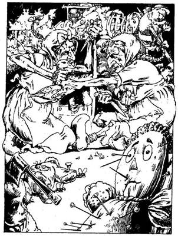
112.
Az utcában a legtöbb ház kicsi, düledező és szürke, de az egyik, amely elszigetelten áll, rikító piros. Az ajtón tábla: "Fáradjon be!" Ha bemész a házba - lapozz a 154-re. Ha inkább továbbmész északnak - lapozz a 334-re.
113.
Amikor belépsz a házba, egy játékokkal teli szobában találod magad. Ezek azonban nem közönséges játékok, hanem kitömött teremtmények, fejükön átszúrt szögekkel, és babaházak, amelyeket úgy alkottak meg, mintha lángban állnának. Rajtuk kívül még sok förtelmes tárgy hever szanaszét. A szoba közepén két, kislánynak öltözött öregasszony játszadozik. Egy faragott fakacsán civakodnak. Mindketten szeretnék késükkel szétroncsolni a játékot. Amikor megpillantanak, hangosan kiáltozni kezdenek: - Adj nekünk játékot! Adj nekünk játékot! - Ha adni akarsz nekik valamit a hátizsákodból, megteheted, de ne feledd a Kalandlapodon jelölni a változást - lapozz a 141-re. Ha inkább magukra hagyod ezeket a fura öregasszonyokat - lapozz a 375-re.
114.
Három, drágakövekkel kirakott gyűrű van a pult alatt, és 13 Aranytallér a fiókban. Vedd magadhoz azt, amihez kedved van, és távozz az üzletből. Folytasd utadat nyugat felé - lapozz a 196-ra.
115.
Az utcán egy rongyokba bugyolált ember közeledik feléd, amilyen gyorsan csak a lábához láncok vasgolyó engedi. Olyan kimerült, hogy a karjaidban összeesik. Arca piszkos, borotválatlan. Akadozó hangon így szól:
- Kérlek, szabadíts meg a béklyómtól. A városi őrök a nyomomban vannak. Két éven át voltam a föld alatti börtönök foglya, de sikerült alagutat ásnom és megmenekülnöm. Kiraboltak, és nem volt miből kifizetnem az adómat, így aztán Azzur nagyúr úgy rendelkezett, hogy öt évre vessenek börtönbe. Kérlek, segíts rajtam! - Az utca végéből kiabálást hallasz, és hirtelen fegyveres csoportot pillantasz meg. Ha át akarod vágni a láncát a kardoddal - lapozz a 90-re. Ha át akarod adni a férfit a városi őrségnek - lapozz a 274-re.
116.
Amint északi irányban mész az utcán, bal kéz felől egy kis gyógynövényboltot veszel észre. Belesel az ablakon, és egy pultot látsz, amelynek a tetején mérleg áll, a földön pedig füvekkel, gyógynövénnyel teli zsákok sorakoznak. Az üzlet hátsó részében lévő boltíves átjárón át egy szobába látsz be. Az ajtón ott lóg a "Nyitva" tábla, de az üzletben egy lélek sincs. Ha bemész - lapozz a 250-re. Ha inkább továbbmész északnak, fölfelé a Piac utcán - lapozz a 93-ra.
117.
A piactér végéből a Híd utca vezet tovább északnak. Úgy határozol, hogy arra mész tovább, hátha rábukkansz a rejtélyes Nikodémuszra. Elered az eső, s a düledező, rozoga házak úgy néznek ki, az utca két oldalán, mintha maguk is menedéket keresnének. A legtöbb ház üres, az ablakokat bedeszkázták. Az egyik ház ajtaját hirtelen nagy zajjal kivágja a szél. Ha meg akarsz pihenni a gazdátlan házban, amíg az eső eláll - lapozz a 188-ra. Ha inkább továbbmész - lapozz a 31-re.
118.
Kaparászást hallasz a csatorna mélyéről, majd egy hosszura nyúlt árnyékot pillantasz meg az alagút kőfalán. A félhomályban egy nagy, fekete, fényes testű lény körvonalait látod kirajzolódni magad előtt. A kaparászás egyre hangosabb lesz, és most már csörtetést is hallasz. A szörny már csak néhány méterre van tőled, amikor felismered - egy Óriás Százlábú áll előtted. Van rovar karpereced? Ha van - lapozz a 2-re. Ha nincs - lapozz a 166-ra.

119.
A kisfiú mosolyogva a kezedbe nyom egy fémbögrét. Elmondja, hogy a hordóban forrásvíz van, mely mindenféle sebet és betegséget meggyógyít. Egy bögre víz 3 Aranytallérba kerül. Ha akarsz inni a vízből - lapozz a 233-ra. Ha inkább megtartod az Aranyaidat és továbbmész északnak - lapozz a 247-re.
120.
Felkapsz egy fadarabot, majd olyan halkan, ahogy csak tudsz, odaosonsz a kalózhoz, és megpróbálod leütni. Tedd próbára a Szerencsédet! Ha Szerencséd van, nem hallja közeledő lépteid zaját, és hátulról fejbe vághatod. Eszméletlenül terül el a fedélzeten, s így tovább folytathatod a keresést - lapozz a 84-re. Ha nincs Szerencséd, megbotlasz egy tekercs kötélben, és a kalóz felfigyel rád - lapozz a 152-re.
121.
Az Ogre egy szempillantás alatt befalja az ételt. Miközben a száját nyalogatja, rád mordul, hogy takarodj a házából. Ha szót fogadsz az udvariatlan Ogre-nak és a házát elhagyva továbbmész északnak - lapozz a 282-re. Ha kardot rántasz, hogy móresre tanítsd - lapozz a 140-re.
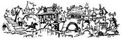
122.
A szoba, melybe belépsz, telis-tele van törmelékkel és rothadó élelemmel. Két, rongyos ruhájú férfi áll a szeméthalmaz közepén. Mélyen ülő szemük üresen mered rád. Amint észrevesznek, felkapnak a földről egy-egy farudat, s azzal közelednek feléd. Ha gyorsan ki mész a szobából s rájuk zárod az ajtót - lapozz a 277-re. Ha megküzdesz velük - lapozz a 361-re.
123.
A polcon lévő dobozban 3 Aranytallért meg egy vaskulcsot találsz. Amikor közelebbről megnézed, látod, hogy ez speciális kulcs, amely valami csontváz csontjából készült és mindenféle zárat nyit. Nyersz 1 Szerencse pontot, és miután kimész az üzletből, folytasd utadat nyugat felé. Lapozz a 300-ra.
124.
A keskeny sikátor két ház között visz lefelé, déli irányba. Ha végig akarsz menni a sikátoron - lapozz a 326-ra. Ha inkább a Kikötő utcán mész tovább - lapozz a 180-ra.
125.
A pajzsot Csontos Zanbar megátkozta. Aki nem élőholt, és mégis használja, szenvedni fog. Vesztesz 1 ÜGYESSÉG pontot! Nem tudsz megszabadulni ettől a kellemetlen, számodra csak nyűgöt jelentő tárgytól. Odamész a csigalépcsőhöz, és elindulsz fölfelé - lapozz a 21-re.
126.
A kislány karon ragad, és bevezet a belső szobába. Nem mond semmit, csak mutatja, hogy feküdj le a báránybőr szőnyegre. Hirtelen egy nagyon öreg embert pillantasz meg, aki veled szemben ül. Felkel hintaszékéből, és odamegy hozzád. Dermedten nézed, amint az egyik nyílvesszőt óvatosan megragadva úgy húzza ki a karodból, hogy nem is érzed. A nyílvessző okozta seb a szemed láttára gyógyul be. Ha több nyílvessző is van benned, azokat éppígy távolítja el. Minden egyes nyílvessző után, amit az öreg kihúz a testedből, 2 ÉLETERŐ pontot nyersz! Ezt követően lassan, Szinte alig hallhatóan közli veled, hogy a segítségéért cserébe azt a pallost kéri, melyet Owen Carralif adományozott neked. Vonakodva bár, de mégis úgy érzed, neki kell adnod a kardot. Egy közönséges karddal ajándékoz meg helyette. Vonj le magadtól 1 ÜGYESSÉG pontot! Kimész a házból, és folytatod utadat északnak - lapozz a 112-re.

127.
Az utcán három ember verekszik az orrod előtt - két fiatalember vasdorongokkal támadott meg egy öreget. Ha az öregember segítségére sietsz - lapozz a 177-re. Ha inkább elkerülöd a verekedőket - lapozz a 348-ra.
128.
Miközben egy hajlított dróttal megpróbálod kinyitni a zárat, két kattanást hallasz. Két apró lappantyú csapódik fel, s két tűhegyes hajítódárda lő ki rád mögüle. Tedd próbára a Szerencsédet! - méghozzá kétszer, külön-külön mindkét hajítódárdáért. Ha mindkét alkalommal Szerencséd van, a dárdák lepattannak páncélruhádról - lapozz a 340-re. Ha egyszer nincs Szerencséd, a dárda beleáll a kezedbe - lapozz a 149-re. Ha kétszer nincs Szerencséd, mindkét dárda beleáll a kezedbe - lapozz a 19-re.
129.
Hátralépsz Csontos Zanbar hitvány teste mellől, és várod, hogy az szétrohadjon, de rosszul választottál! Ellenfeled kihúzza melléből a nyílvesszőt, és szeméből kidörzsöli a keveréket. Rád néz és fölnevet. Ereje annyira megbabonáz, hogy mozdulni sem bírsz. Odamegy hozzád, s csontváz ujjaival megérinti az arcodat. Az élet egy pillanat alatt kiszáll belőled, és nemsokára Csontos Zanbar szolgájaként folytatod tovább élőholt létedet.

130.
Amikor az őr elterül a földön, másik kettő bukkan elő a kapu melletti őrházból; valószínűleg a zajra figyeltek föl. Nincs már időd elmenekülni, így egyenként kell megvívnod velük!
ÜGYESSÉG ÉLETERŐ
Első Városi Őr 6 6
Második Városi Őr 7 5
Ha te győzöl - lapozz a 74-re.
131.
Egy szegényesen bebútorozott szobába nyitsz be. A fapadló fényesen csillog. A szemközti falban lévő boltíves átjáró előtt függöny lóg. Amint átvágsz a szobán, egy női hang ezt kiáltja: - Ki az? - Mit teszel?
Azt mondod neki, hogy küldönc vagy
és virágot hoztál? Lapozz a 67-re.
Azt mondod neki, hogy ószeres vagy
és régi szőnyegekért jöttél? Lapozz a 6-ra.
Azt mondod neki, hogy adóbeszedő
vagy? Lapozz a 179-re.

132.
A teremtmény rátűzi az ezüst melltűt a zubbonyodra, te pedig kifizeted neki a kért összeget. Gyógyító erejű ékszert vettél. Ha mostantól kezdve bármilyen csatát megnyersz, ÉLETERŐ pontjaid száma azonnal 1-gyel növekedni fog. Boldogan távozol új szerzeményeddel, és elindulsz északnak - lapozz a 334-re.

133.
Az utca a Malom utcába torkollik, mely a várost védő fal mentén fut kelet-nyugati irányba. Kelet felől egy csapat városi őr tart feléd, s ezért úgy döntesz, hogy gyorsan nyugat felé mész tovább a Malom utcán. Balról egy kis közt látsz, följebb az utcán Viszont egy legény közeledik feléd gyümölccsel megrakott talicskát tolva. Ha be akarsz menni a közbe - lapozz a 182-re. Ha inkább gyümölcsöt veszel a talicskás fiútól - lapozz a 160-ra.

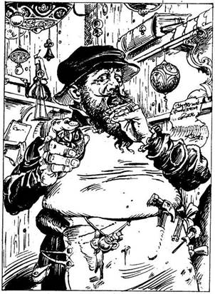
134.
Ugyancsak szédülsz, amikor magadhoz térsz; fejeden hatalmas púp ékeskedik. Hátizsákod nyitva hever melletted a földön. Bosszúsan tapasztalod, hogy az összes aranyadat ellopták. Ezek a tolvaj Törpék! Feltápászkodsz, és ismét elindulsz nyugatnak lefelé az utcán - lapozz a 396-ra.
135.
Amikor kardot rántasz, a férfi felordít, és berohan a hátsó szobába. Úgy látod, fegyver nincs nála, de a kezében egy tojást meg egy apró kulcsot tart. Figyelmeztet, hogy a tojásban mérges gáz van és hozzád fogja vágni. Azzal is fenyegetőzik, hogy lenyeli ezüstvitrinjének a kulcsát. Ha továbbra is úgy gondolod, hogy a kardoddal bánsz el vele - lapozz a 229-re. Ha inkább kirohansz a boltból és továbbmész fölfelé a Facipő utcán - lapozz a 100-ra.
136.
Odamész a bárpulthoz, és italt rendelsz. Az öreg kocsmáros mogorván közli veled, hogy idegeneket, akik nem a városban laknak, nem szolgál ki. Övéből előhúzza a tőrét, belevágja a pult tetejébe, és felszólít, hogy távozz. Ha harcba szállsz a kocsmárossal - lapozz a 270-re. Ha inkább kimész a fogadóból és tovább folytatod az utadat északnak - lapozz a 296-ra.
137.
Amint egy lépést teszel előre, nyílvesszők jól ismert süvítését hallod a levegőben. Az utca mindkét oldaláról csak úgy záporoznak rád a nyílvesszők az ablakokból. Dobj egy kockával! Ennyi nyílvessző talált el, és mindegyik 3 ÉLETERŐ pont veszteséget okoz. Ha még mindig életben vagy, vesztesz 2 Szerencse pontot is - lapozz a 327-re.
138.
Ha a Majomembert győzted le - lapozz a 312-re. Ha bármely más teremtményt győztél le - lapozz a 283-ra.

139.
Amint fölfelé mész az utcán, hirtelen egy virágcserép zuhan le épp előtted a macskaköves útra. Megállsz, és balra nézve észreveszel egy nyitott ablakot. Úgy hallod, odabent veszekednek. A ház ajtaja nyitva van. Ha be akarsz menni, hogy megtudd, miről folyik a vita - lapozz a 113-ra. Ha inkább úgy döntesz, hogy nem törődsz a veszekedéssel és továbbmész keletnek - lapozz a 375-re.
140.
Az Ogre teljes közönnyel nézi, amint előrántod a kardodat, majd fölemel egy hatalmas lábszárcsontot, s ezzel a fegyverrel támad rád. Meg kell küzdened vele!
Ogre ÜGYESSÉG 8 ÉLETERŐ 9
Ha legyőzöd - lapozz a 71-re. A harmadik Forduló után, ha akarod, Elmenekülhetsz a házból. Futva mész tovább észak felé. Lapozz a 282-re.
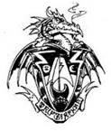
141.
Az öregasszonyok szinte azonnal ismét hajba kapnak az ajándékodon, és a továbbiakban ügyet sem vetnek rád. Körülnézel a szobában, és egy megterített asztalt veszel észre. Két tányér leves van az asztalon, szemmel láthatólag azért, hogy megegyék. Ha fakanállal eszel az egyik levesből - lapozz a 68-ra. Ha inkább magukra hagyod az öreg hölgyeket és továbbmész keletnek - lapozz a 375-re.

142.
Az íjpuskából kilőtt nyílvessző hegye mérgezett. Hátratántorodsz az ütéstől, majd elterülsz a földön. A méreg gyorsan szétáramlik a testedben, és mély álomba merülsz, amelyből már soha többé nem ébredsz fel.
143.
Amikor meghallod a lépcsőkön az őrök dübörgő lépteit, lefekszel a földre, és nyögni kezdesz. Kinyitják cellád ajtajának zárját, és belépnek. Ha továbbra is betegséget színlelsz és azt mondod nekik, hogy szerinted pestises vagy - lapozz a 306-ra. Ha puszta kézzel akarsz megküzdeni velük - lapozz a 157-re.
144.
A Boszorkány felüvölt, amikor kardod mélyen belevág a karjába. Többé már nem tud összpontosítani, és megtörik a varázslata. Agyad kitisztul, és ismét élesen reagálsz mindenre. A Boszorkány ruhája redői közül tőrt húz elő, melynek hosszú, csillogó pengéje van. Alig várod, hogy megküzdj vele!
Boszorkány ÜGYESSÉG 7 ÉLETERŐ 7
Ha te győzöl - lapozz a 303-ra.
145.
Az üzletben egy öregasszony buzgón locsolgatja a virágokat meg a növényeket. Mosolyogva rád néz, és így szól: - Jó napot! Pipa asszony a nevem. Talán érdekelné az egyik speciális virágom? - Ha meg akarod nézni, miféle virágot ajánl megvételre - lapozz a 293-ra. Ha udvariasan nemet mondasz és inkább kimész az üzletből, hogy tovább folytasd az utadat nyugatnak - lapozz a 24-re.
146.
Visszamész az üzletbe. Megpróbálod kinyitni a vitrint, de be van zárva. Az üveg mögött két ezüst talpaspoharat, egy ezüstserleget meg egy ezüstkanalat látsz. Van csontvázból készült kulcsod? Ha van - lapozz a 220-ra. Ha nincs - lapozz a 388-ra.
147.
Átkutatod a tolvajok bőrzsákjait, és 16 Aranytallért, valamint egy zöld folyadékkal teli üvegfiolát találsz bennük Ha meg akarod inni a folyadékot - lapozz a 338-ra. Ha csupán az Aranyat teszed el és továbbmész északnak - lapozz a 105-re.

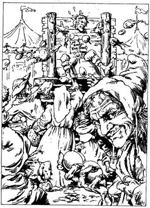
148.
Amikor utoléred az ujjongó tömeget, látod, hogy az emberek kezében tojás és rothadt paradicsom van. Csakhamar kiérsz egy nagy piactérre. A teret körülölelő bódékban kereskedők, utcai árusok kínálják portékáikat, illetve zenészek és mutatványosok szórakoztatják a közönséget. A tér közepén egy emelvény tetején pellengér áll. A tömeg hangját túlharsogva trombitaszó harsan, mire az emberek tojás és paradicsomzáport zúdítanak a pellengérre állított férfira. Egy öregasszony felajánl neked két tojást, hogy legyen mit odahajítanod. Mivel nem akarod, hogy idegennek nézzenek, átveszed a tojásokat és elhajítod. Eközben az öregasszony belenyúl a zsebedbe, és kilop belőle 1 Aranytallért, vagy bármilyen tárgyat, amit talál. Nem tudod, hogy kiraboltak, így a tömeget kikerülve elindulsz, hogy megnézd a bódékat. Lapozz a 287-re.
149.
A hajítódárda hegye mérgezett. Vesztesz 2 ÉLETERŐ pontot! Ha még mindig életben vagy és folytatod a zár feltörését - lapozz a 340-re. Ha inkább kilépsz a szobából és felmész a lépcsőn a következő szintre - lapozz a 60-ra.
150.
A Troll harsogó nevetésben tör ki, és így szól: - Jól becsaptalak! Nincs is Bors utca Feketehomok kikötőben! - Undorító, gúnyos mosollyal közli veled, hogy letartóztat, amiért engedély nélkül tartózkodsz Feketehomok kikötőben. Hozzáteszi, hogy ennek ellenére nagylelkű lesz hozzád, és ad neked egy lehetőséget. Választhatsz: vagy bírságot fizetsz neki, odaadod az összes Aranyadat, ami a hátizsákodban van és akkor kipenderítenek a városból, vagy egy kerek esztendőt kell eltöltened patkányok és svábbogarak között a koszos föld alatti börtönökben. A másik Troll is nevet: - Nagylelkű? Ha-ha-ha! Ó, Savanyúhas, micsoda ragyogó humorod van! - Ha hajlandó vagy a bírságot kifizetni és hagyod, hogy kitegyék a szűrödet a városból - lapozz a 367-re. Ha nem hagyod, hogy letartóztassanak - lapozz a 73-ra.
151.
A két őr bevezet az őrházba, és azonnal levisz a pincéjébe. Lent négy cella van, mind üres, kivéve egyet, melyben egy törékeny, ősz öreg ember gubbaszt. Az őrök kinyitják az öreg melletti cellát, és belöknek az ajtaján, kardodat pedig a kinti asztalra teszik. A cellában egy szalmamatracon és egy vödör vízen kívül nincs egyéb. Az őrök újra fölmennek a lépcsőn. Amikor eltűnnek, az öreg fölkel a fekhelyéről, és így szól hozzád:
- Idegen vagy, ugye? Ne válaszolj, ha nem akarsz; megértem. Akarod, hogy kiszabadítsalak innen? Adj 10 Aranytallért, és nyitva áll előtted az út! - Miután az öreg ezt elmondja, átnyújtja a kezét a rácsokon, s tenyerét felfelé fordítja. Ha oda akarod adni az öregnek a 10 Aranyat - lapozz a 351-re. Ha inkább nem törődsz az öreggel - lapozz a 29-re.

152.
A Kalóz előrántja rövid kardját. Kissé inadba száll a bátorságod, amint fogatlan szájával vigyorogva, feléd közeledik.
Kalóz ÜGYESSÉG 7 ÉLETERŐ 5
Nincs időd kardot rántani, így a bottal kell megvívnod vele. Minden egyes Fordulóban 2 pontot le kell vonnod Támadóerődből. Ha te győzöl - lapozz a 20-ra.
153.
Kezedben az aranybagollyal ragyogóan tájékozódsz a szobában. Szerencsédre épp jókor veszed észre az ajtó előtt keresztbe kihúzott kötélcsapdát, amely a szemközti falra erősített, feléd irányított íjpuskát hozza működésbe. A szobában az íjpuskán kívül nem látsz mást. Úgy döntesz, hogy visszatérsz a csigalépcsőhöz és felmész a következő szintre. Lapozz a 65-re.
154.
Bemész a házba, és egy pirosra festett falú szobában találod magad, melyben csupán egy asztal van, s a tetején két üvegtál. Az egyikben egy apró aranyskorpió, a másikban egy ezüstskorpió van. A szoba hátsó sarkából lépcső vezet fel a felső szintre. Mit teszel?
Felveszed az aranyskorpiót? Lapozz a 273-ra.
Felveszed az ezüstskorpiót? Lapozz a 13-ra.
Felmész a lépcsőn? Lapozz a 80-ra.
Kimész a házból, és elindulsz
északnak? Lapozz a 334-re.
155.
Vesztesz 3 ÉLETERŐ pontot! Ha még mindig életben vagy, fölállsz, és leporolod a ruhádat. A hintó eltűnik a szemed elől, te pedig abban a reményben folytatod az utadat ismét nyugatnak, hogy lesz még alkalmad találkozni ezzel az alávaló Azzur nagyúrral - lapozz a 171-re.
156.
A két Troll közrefogva vezet végig a Malom utcán, egészen a város Északi Kapujáig, mely a Lúd utca kereszteződésében van. A két szolgálatban lévő kapuőrnek a lelkére kötik, hogy vissza ne engedjenek Feketehomok kikötőbe. Jól fenéken rúgnak, és a kinti poros úton landolsz. Rendelkezel-e az összes tárggyal, amelyre az Éj Hercegének elpusztításához szükséged van? Ha igen és ott a tetoválás a homlokodon - lapozz a 201-re. Ha akár egyetlenegy is hiányzik a megadott tárgyak közül vagy nincs tetoválás a homlokodon - lapozz a 299-re.
157.
Felpattansz, és behúzol egyet az első őrnek. Az hátratántorodik, és kirántja a kardját. Egyenként küzdesz meg velük a szűk cellában.
ÜGYESSÉG ÉLETERŐ
Első Városi Őr 6 6
Második Városi Őr 7 5
Minden egyes Fordulóban 3 pontot le kell vonnod Támadóerődből, mivel puszta kézzel harcolsz. Ha sikerül legyőznöd az őröket, távozol a cellából, és miután magadhoz vetted kardodat, felmész a lépcsőkön - lapozz az 54-re.
158.
Gyorsan kell cselekedned, hogy elmenekülhess a hevesen támadó Páncélruha elől. Ha be akarsz nyitni az előtted lévő ajtón - lapozz a 122-re. Ha visszafutsz a csigalépcsőhöz és felmész a következő szintre - lapozz a 207-re.

159.
A ház tulajdonosa minden kétséget kizáróan nagyon gazdag. Pompás bútorokkal berendezett és műkincsekkel díszített márványpadlós szobában vagy. Boltíves átjáró vezet a hátsó szobába, és jobb kéz felől lépcső visz fel az emeletre. Mit teszel?
Átkutatod a szobát ahol vagy? Lapozz a 278-ra.
Átmész a boltíves átjárón? Lapozz a 107-re.
Felmész a lépcsőn? Lapozz a 60-ra.
160.
A legény megállítja előtted a talicskáját, és megkérdi, mit szeretnél venni. Előszeretettel ajánlja a szilváját, amely igen frissítő hatású. Ha adsz neki 1 Aranytallért egy zacskó szilváért - lapozz a 211-re. Ha inkább egy zacskó piros almát vennél 1 Aranytallérért - lapozz a 242-re.
161.
Az utca hirtelen jobbra kanyarodik, majd egyenesen északnak visz, ameddig csak a szem ellát. Észreveszed, hogy a kanyar után következő házak sokkal nagyobbak és legalább négy méter magas kapujuk van. Az utca jobb oldalán az egyik ház kapuja nyitva áll. Ha be akarsz menni a házba - lapozz a 245-re. Ha inkább továbbmész északnak - lapozz a 282-re.
162.
Tedd próbára a Szerencsédet! Ha Szerencséd van, sikerül levágnod az erszényt anélkül, hogy felébresztenéd a kalózokat - lapozz a 7-re. Ha nincs Szerencséd, miközben a zsinórt próbálod elvágni, a kalóz kinyitja a szemét és megragadja a karodat, majd segítségért kiált a társainak - lapozz a 226-ra.
163.
A szarkofágban egy aranygyűrűt találsz, amelynek a közepében egy szem van. A réges-régen elvesztett Aranyszem Gyűrűt lelted meg, mely arról nevezetes, hogy viselőjének segít felfedezni az illúzióvarázslatot. Nyersz 2 Szerencse pontot, és kimész a szobából - lapozz a 231-re.
164.
Tántorogva mész előre, hogy túljuss láthatatlan támadóid tűzvonalán. Az egyik ház előtt néhány zsákot látsz, és végigdőlsz rajtuk. Lassan, nagy fájdalmak közepette kihúzd testedből a nyílvesszőket. Bekötözöd sebeidet, felállsz, és továbbmész északnak - lapozz a 112-re.
165.
Vagy jobbra fordulsz a Gyertya utcába - lapozz a 139-re, vagy visszatérsz az útelágazáshoz, és onnan továbbmész a Kikötő utcán - lapozz a 91-re.
166.
Teljes erővel kell meglendítened a kardodat ahhoz, hogy átdöfd a szörny páncélvastagságú kagylóhéj testét.
Óriás Százlábú ÜGYESSÉG 10 ÉLETERŐ 5
Ha legyőzöd - lapozz a 272-re.
167.
Miután kifizeted az Ember-Orknak a 4 Aranytallért, elmondja neked, hogy amennyiben a füveket ráhelyezed bármelyik sebedre, a seb azonnal begyógyul. A keverék ereje azonban sajnos változó. Ha majd alkalmazod, mindig dobj 1 kockával. A kapott szám jelenti majd azt a számot, amennyivel ÉLETERŐ pontjaidat növelheted. Kissé meglepődsz szerencséd ilyetén alakulásán. Kimész az üzletből, és északnak indulsz tovább. Nyersz 1 Szerencse pontot, és lapozz a 93-ra.
168.
A Base-ek csak nehezen tudják kifejezni magukat, de annyit megértesz, hogy a játék lényege az, hogy az egyik csapat feléd dobja majd a labdát. A kezedbe adnak egy botot, és azt mondják, ha ezzel a bottal átütöd a labdát a falon, megnyered nekik a játékot. Dobj két kockával! Ha a kapott összeg ugyanannyi vagy kevesebb, mint ÜGYESSÉG pontjaid száma, teljes erővel eltalálod a labdát a bottal, és átrepíted a fal fölött - lapozz a 359-re. Ha a kapott összeg nagyobb, mint ÜGYESSÉG pontjaid száma, a labda elsüvít melletted, miközben meglendíted a botot, és egy hang így szól mögötted: - Kiestél! - Lapozz a 266-ra.
169.
A kovácsmester leveszi a kesztyűjét, és mielőtt megkérdezné, mi járatban vagy, a kötényébe törli a kezét. Te a kérdésére kérdéssel felelsz: megtudakolod, készít-e mást is patkón kívül. Azt feleli, hogy szabadidejében szívesen készít páncélruhákat. - Az igazat megvallva - mondja - ez elég jól jövedelmező mellékfoglalkozás, különösen Feketehomok kikötőben. - Aprólékosan elmagyarázza, hogy micsoda ÜGYESSÉG és mennyi munka kell egy ilyen ruha elkészítéséhez, majd megkérdi, nincs-e kedved venni egyet. Nem olcsó mulatság. Ha akarsz neki 20 Aranytallért adni egy páncélruháért - lapozz a 46-ra. Ha kimész az istállóból anélkül, hogy megvennéd a páncélruhát - lapozz a 115-re.
170.
Amikor a férfi észreveszi, hogy kardot rántasz, lekapja a háta mögül a falról a harci szekercéjét. A pultot megkerülve máris támad.
Ékszerész ÜGYESSÉG 9 ÉLETERŐ 8
Ha te győzöl - lapozz a 114-re. Ha akarsz, Elmenekülhetsz az üzletből s továbbrohanhatsz az utcán nyugat felé - lapozz a 196-ra.
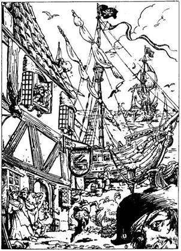
171.
Az utca fokozatosan, de egyre meredekebben halad lefelé. A házak sora megszakad a Fekete Rákhoz címzett fogadónál, és az utca a rakpartba torkollik. Kőből épült kikötőgát nyúlik be a tengerbe, melyhez egy öreg vitorlás hajó van kikötve. Zászlóján egy koponya és két keresztbe tett lábszárcsont látható - valószínűleg ez is egyike azoknak a kalózhajóknak, amelyek itt, Feketehomok kikötőben rakják ki a zsákmányukat. A Kikötő utca a gátnál jobbra fordul, és ameddig a szem ellát, észak felé vezet tovább a parttal párhuzamosan. Ha lesétálsz a gáthoz és felmész a hajóra - lapozz a 399-re. Ha északnak indulsz el, fölfelé a Kikötő utcán - lapozz a 78-ra.
172.
Előveszed a virágcsokrot a hátizsákodból, és átadod a Kígyókirálynőnek. Megköszöni, és 2 Aranytallér borravalót ad neked, mielőtt odavezetne a bejárati ajtóhoz. Kint északnak indulsz tovább az Istálló utcán - lapozz a 333-ra.
173.
A három szakállas Törpe úgy belemerült a játékba, hogy ügyet sem vet rád, amikor az asztalukhoz ülsz. Végül az egyik odafordul hozzád, és megkérdi, nem akarnál-e te is játszani. Ha el akarod játszani néhány Aranytallérodat - lapozz a 206-ra. Ha inkább kimész a füstös kocsmából és folytatod az utadat északnak - lapozz a 296-ra.
174.
A bejárati nyíláshoz visszatérve vagy újra fölmész a létrán az utcára és tovább folytatod az utadat keletnek - lapozz a 205-re, vagy ha még nem tetted volna, elindulhatsz északnak a csatornában - lapozz a 356-ra.
175.
Lassan fölemeled a serleget, és meglepetten látod, hogy egy sárga skorpió van alatta. Kisurran a serleg alól, és mérgező farkával a kezedet igyekszik megmarni. Tedd próbára a Szerencsédet! Ha Szerencséd van, a skorpió farka a serleg oldalát éri - lapozz a 204-re. Ha nincs Szerencséd, a farkán lévő fullánk belemar a kezedbe - lapozz a 373-ra.

176.
Közlöd az aggodalmaskodó fürdőzővel, hogy gyűlölöd ugyan a kalózokat, de őt nem bántod, ha segítségedre lesz. Megkérdezed, hogy rendelkezik-e valamelyikkel az általad keresett tárgyak közül. Ő azonban azt feleli, hogy neki mint a kalózhajó kapitányának nincs szüksége ilyen tárgyakra. Kövér nyakának szegezed kardod hegyét, hogy megbizonyosodj róla, vajon nem hazudik-e. Rettenetesen megrémül, és esküdözik, hogy igazat mondott. Egy pillanattal később így szól: - Azt azonban tudom, hol szerezhetsz be ezüst nyílvesszőt. Ben Borryman, az ezüstműves bármit elkészít neked ezüstből, ha jól megfizeted. A Facipő utcában megtalálod! - Jól az eszedbe vésed a kapott információt, és ott hagyod a reszkető kapitányt a szobában, majd bezárod magad után az ajtót. Kint a folyosón (ha még nem tetted volna) - benyithatsz a másik ajtón - lapozz a 271-re, vagy elhagyod a hajót és a Kikötő utcán, északnak tartva folytatod a keresést Feketehomok kikötőben - lapozz a 78-ra.
177.
Kardot rántasz, és az öregember segítségére sietsz. A földön fekszik, és a két férfi ütlegeli: el akarják venni tőle a bőrzsák ját. Odakiáltasz nekik, s a két támadó rád veti magát.
ÜGYESSÉG ÉLETERŐ
Első Rabló 7 8
Második Rabló 8 6
Egyenként küzdj meg velük. Ha te győzöl - lapozz az 51-re.
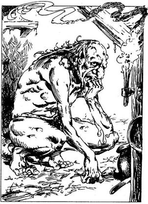
178.
A boltíves átjáró egy tágas szobába vezet, amelynek a közepén egy körülbelül három méter magas, ember formájú teremtmény guggol. Gondterheltnek látszik, és magában morog valamit. Az arcán lévő bibircsókok egyértelműen elárulják, hogy ez egy Ogre. Mit teszel?
Megpróbálsz beszédbe
elegyedni vele? Lapozz a 264-re.
Rátámadsz a kardoddal? Lapozz a 140-re.
Kimész a házból, és folytatod
az utadat északnak? Lapozz a 282-re.
179.
A boltíves átjáró előtt lévő függöny szétlibben, egy barna bőrzacskó repül ki a túloldalról, és nagy csilingelve landol a lábad előtt a földön. Ha ki akarod nyitni a zacskót - lapozz a 16-ra. Ha inkább elhagyod a házat anélkül, hogy kinyitnád a zacskót és továbbmész északnak az Istálló utcán - lapozz a 333-ra.
180.
A távolból vágtató lovak patáinak dübörgését hallod a macskakövön, amit kerékzörgés zaja kísér. A kocsis nógatja a lovakat, csattog a korbács! Valaki szélsebesen közeledik feléd egy hintóval. Ha meg akarod nézni, ki az - lapoz a 344-re. Ha inkább elbújsz az egyik hordó mögött és onnan nézed, amint elhalad melletted a hintó - lapozz a 34-re.
181.
A kulcs remekül illik a zárba, és az ajtó kinyílik - lapozz a 159-re.
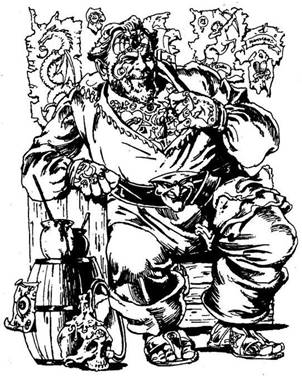
182.
A kis köz végében apró üzlet van. A bejárati ajtó üvegén ott a kiírás: "Gyorsfestő Jimmy, a Város legkiválóbb Tetoválómestere". Parányi csengettyű szólal meg, amikor benyitsz, és egy bíborszínű selyemruhát viselő férfi mosolyogva fogad. Meglepetten látod, hogy mindenét, a karját, a kezét, a lábát, de még az arcát is színes tetoválás borítja. Vigyorogva így szól: - Na, elő a farbával, bökd ki, mit akarsz! - Elmondod neki, hogy azt szeretnéd, ha egy aranysárga napot tetoválna a homlokod közepére, és a napba egy fehér egyszarvút. Közli veled, hogy ennél mi sem egyszerűbb, de munkája 10 Aranytallérba fog kerülni. Ha tudsz neki ekkora összeget fizetni - lapozz a 279-re. Ha nem tudsz - lapozz a 354-re.
183.
Megtudod, hogy a dohánykeverék és a pipa 1 Aranytallérba, a gyógyfűkeverék pedig 4 Aranytallérba kerül. Mit teszel?
Veszel egy kevés dohánykeve-
réket? Lapozz a 366-ra.
Veszel egy kevés gyógyfűkeve-
réket? Lapozz a 167-re.
Kimész az üzletből, és északnak
indulsz tovább? Lapozz a 93-ra.
184.
Van-e nálad egyetlenegy is Pipa asszony aranyvirágai közül? Ha van - lapozz az 55-re. Ha nincs - lapozz a 308-ra.
185.
Amint a páncélruha végigvágódik a földön, darabokra törik. Már nem jelent számodra veszélyt! Ha a szemközti ajtón akarsz bemenni - lapozz a 122-re. Ha inkább visszatérsz a csigalépcsőhöz és felmész a következő szintre - lapozz a 207-re.
186.
A Gyíknő asztalának tetején 4 Aranytallért találsz, meg egy skorpiót ábrázoló réz melltűt. Ha felveszed a melltűt az asztalról és a zubbonyodra tűzöd - lapozz a 387-re. Ha csak az aranyat teszed el, újra menj le a lépcsőn, hagyd el a házat, és folytasd az utadat északnak - lapozz a 334-re.
187.
Közlöd a városi őrökkel, hogy valami különleges jutalmat kapnak tőled, ha mindkettőtöket futni hagynak. Azzal vágnak vissza, hogy a fogoly gyilkos, akinek nem lenne szabad segítened, ugyanakkor ragaszkodnak hozzá, hogy fizess vagy adj nekik valamit, máskülönben téged is börtönbe vetnek. A következő tárgyak jöhetnek számításba, amelyekre igényt tartanak: varázsfegyverzet, varázsgyűrű vagy varázsital. Ha át akarod adni nekik az egyiket - lapozz a 260-ra. Ha egyik tárggyal sem rendelkezel - lapozz a 341-re.
188.
A házban sűrű a félhomály, de azért látod néhány hátrahagyott bútor körvonalát. Szemét és törmelék hever a földön. Leülsz egy törött lábú székre. Hirtelen észreveszed, hogy valami átsiklik előtted a padlón, és mielőtt talpra szökkenhetnél, a gyér fényben észreveszed, hogy hat, egyenként legalább egy méter hosszú kígyó vesz körül. Ha le akarsz csapni rájuk a kardoddal - lapozz a 253-ra. Ha inkább megpróbálsz az ajtóhoz rohanni - lapozz a 15-re.
189.
Megcélzod a Lélekrablót, és kilövöd rá a nyílvesszőt, amely beleáll a mellébe és a Lélekrabló eltorzult arcából arra következtetsz, hogy a nyílvessző keresztüldöfte a szívét. Elterül a földön, és rothadó testéből füst száll fel. Fülsiketítő ordítás hagyja el a száját, akkora, hogy az egész előcsarnok visszhangzik tőle, s te is beleremegsz. Aztán csönd lesz, és visszaveszed ezüst nyílvessződet. Körülnézel, és látod, hogy egy gyönyörű márványpadlós előcsarnokban vagy. A négy fal közül hármon gonosz arcú férfiak és nők portréi lógnak, de a veled szemben lévő falon két vaspajzs függ. Az egyiken egy torony, a másikon egy egyszarvú képe látható. Az előcsarnokból csigalépcső vezet fel a fönti szintre. Mit teszel?
Leveszed a tornyos pajzsot? Lapozz a 125-re.
Leveszed az egyszarvús
pajzsot? Lapozz a 374-re.
Felmész a csigalépcsőn? Lapozz a 21-re.
190.
Amikor leülsz az asztalhoz, a férfiak meghívnak, hogy tőrözz velük. Úgy érzed, kötelességed elfogadni a meghívásukat, és megragadod az egyik tőrt. A férfiak elmondják, hogy legalább egy percig az ujjaid közé kell döfködnöd a tőrrel, amilyen gyorsan csak tudsz. Ha sikerül és nem szúrod meg magad, kapsz tőlük egy varázstárgyat. Ha viszont megszúrod a kezedet, 5 Aranytallért kell adnod nekik. Dobj két kockával! Ha a kapott összeg kevesebb vagy ugyanannyi, mint ÜGYESSÉG pontjaid száma, akkor nyertél - lapozz a 38-ra. Ha a kapott összeg nagyobb, mint ÜGYESSÉG pontjaid száma, képtelen vagy irányítani a tőr gyors mozgását, és megsebzed az egyik ujjadat. Odavetsz nekik 5 Aranytallért, felállsz, és elhagyod a kocsmát. Kint továbbmész északnak. Lapozz a 296-ra.
191.
Kardot rántasz, hogy megvédd magad a feléd közeledő Levélvadak támadásától. Egyszerre rontanak rád; szemmel láthatóan szét akarnak roppantani, meg akarnak fojtani. A Levélvadakat egyetlen lényként kezeld.
Levélvadállatok ÜGYESSÉG 6 ÉLETERŐ 6
Ha te győzöl, kezedben a lótuszvirággal, rohanj vissza a forgóajtóhoz, és olyan gyorsan fuss végig az Istálló utcán, ahogy csak bírsz - lapozz a 133-ra.
192.
Leugrasz a körülbelül ötméternyi mélységbe, és nagyot puffansz. Tedd próbára a Szerencsédet! Ha Szerencséd van, nem sérülsz meg és továbbmész északnak - lapozz a 304-re. Ha nincs Szerencséd, kificamodik kardforgató kezed. Vesztesz 1 ÜGYESSÉG pontot! Ismét elindulsz északnak - lapozz a 304-re.
193.
Ha van az ujjadon Tűzgyűrű, nem kell ennél jobb fegyver a Múmia ellen - lapozz a 286-ra. Ha nincs Tűzgyűrűd, a kardodat kell használnod!
Múmia ÜGYESSÉG 7 ÉLETERŐ 12
Ha te győzöl - lapozz a 163-ra.
194.
Az üveggömbön lévő füst mintha eltűnne, miközben a hátizsákodba teszed a gömböt. Kicsit nyugtalanít új kincsed, amikor folytatod utadat keletnek - lapozz a 161-re.
195.
Mit mondasz, ki küldte a virágot?
Azt mondod, hogy Azzur
nagyúr? Lapozz a 61-re.
Azt mondod, hogy Pipa
asszony? Lapozz a 268-ra.
Azt mondod, hogy Ben
Borryman? Lapozz az 53-ra.
196.
Egy útkereszteződéshez érsz. A nyugat felé tartó utca a Kulcs utcában folytatódik, az észak-déli irányba futó utca pedig a Piac utca. Észak felé tekintve hatalmas tömeget látsz: hurrázó, integető emberek vonulnak felfelé az utcán. Úgy döntesz, követed őket - lapozz a 148-ra.
197.
A következő fordulóban újabb ajtót látsz, melyre ébenfából faragott tornyot erősítettek. Az ajtó előtt egy fekete páncélruha áll. Mit teszel?
Megvizsgálod a páncélruhát? Lapozz a 301-re.
Benyitsz az ajtón? Lapozz a 122-re.
Feljebb mész a csigalépcsőn? Lapozz a 207-re.
198.
Végigméred a kocsma többi vendégét, de azok meg sem moccannak, tisztelettel adóznak kardforgató tudományodnak. Átkutatod a Goblinok koszos ruháját, és 9 Aranytallért meg egy ezüstláncon lógó apró elefántcsont koponyát találsz. Elteszed a zsákmányt, és távozol a kocsmából, majd továbbmész északnak. Lapozz a 296-ra.
199.
Közlöd a városi őrökkel, hogy fejvadász vagy. Elégedettnek látszanak, amiért elcsípted azt az embert, akit üldöztek. Az őrök vezére odalép hozzád, és átad neked 5 Aranytallért, majd így szól: - Ez a gyilkos többé nem fog megszökni! Itt a jutalmad! - Ezután csatlakozik a társaihoz, akik ismét láncra verik a szökött gyilkost. Sietve elindulsz északnak, nehogy a gyilkos megpróbáljon bajba keverni - lapozz a 222-re.
200.
A következő bódé valójában egy színpompás kis sátor. A kiírás szerint odabent Madame Csillag, a Látnok található. Ha be akarsz menni a sátorba - lapozz a 394-re. Ha inkább továbbmész északnak - lapozz a 117-re.
201.
Nikodémusz térképét követve nekivágsz a hosszú útnak fel északra, az Éj Hercegének, Csontos Zanbarnak őrökkel védett várába. Erdőkön, mezőkön visz az utad. Pihensz egy keveset a barátságos vidéken, és magadba szívod az üde, friss, illatos levegőt. Alkonyatkor úgy döntesz, hogy egy hatalmas szilfa tövében pihensz meg. Gombás nyúlpörköltet főzöl magadnak, mielőtt aludni térnél (nyersz 2 ÉLETERŐ pontot!). Reggel keresel egy tiszafát, majd miután egyik ágát levágod, íjat készítesz belőle magadnak, melyből majd az ezüst nyílvesszőt kilőheted. Épp kipróbálod az íjadat, amikor hirtelen egy fehér galambot veszel észre az egyik faágon. A lábához picinyke papírdarabot erősítettek, s hagyja, hogy elvedd. A következő üzenet áll rajta:
"Drága barátom!
Attól tartok, már túl öreg vagyok ahhoz, hogy bárkinek is hasznára lehessek. Sajnálom, hogy tévesen tájékoztattalak arról, milyen tárgyakra van szükséged ahhoz, hogy megöld Csontos Zanbart. Az általam megadott három tárgy közül Csupán kettő kell, de már nem emlékszem, melyik az a kettő. Azt javaslom, próbáld ki a Boszorkány haját és a fekete gyöngyöt együtt, vagy a Boszorkány haját és a lótuszvirágot együtt, vagy a fekete gyöngyöt és a lótuszvirágot együtt. Bocsáss meg.
Sok szerencsét.
N."
Káromkodva vágod földhöz az üzenetet. Százszor is végiggondolod, mit csinálj, mielőtt döntenél. Végül úgy határozol, hogy egy lapos kő tetején porrá zúzod az általad kiválasztott két alkotórészt. A zúzalékot beleteszed egy bőrerszénybe, s reménykedsz, hogy jól választottál. Ismét útnak indulsz, de a környezet egyre barátságtalanabbá válik, a fák göcsörtösek, satnyák, egyetlen madár hangját sem hallani minden valószínűség szerint már az Éj Hercegének birodalmában jársz! Jobbra a bokrok hirtelen megzörrennek, és röfögő hang üti meg a füledet. Egy kíváncsi szörny az, aki a szagodra figyelt fel. Dobj egy kockával, és nézd meg az alábbi táblázatot, hogy megtudd, miféle teremtmény jelent meg. A szokásos módon küzdj meg vele!
A dobott szám Teremtmény ÜGYESSÉG ÉLETERŐ
1 Ork 5 4
2 Óriáskígyó 6 6
3 Farkas 5 5
4 Pigmeus 4 4
5 Majomember 7 6
6 Barlangi Troll 8 7
Ha te győzöl - lapozz a 138-ra.
202.
Az őr közli veled, hogy elküld egy kísérőért, aki elvezet téged Nikodémuszhoz. Benyúl az őrbódéba, és háromszor megkongat egy parányi harangot. Csaknem ugyanabban a pillanatban még két őr indul el futva a házból, és meglepődsz, amikor két oldalról megragadják a karodat. A lándzsás őr feltekint az égre, és nevetve így szól: - Tehát Nikodémusszal szeretnél találkozni, mi? Mit szólnál helyette inkább a föld alatti celláinkhoz? Őrök! Vigyétek ezt a bolondot, és verjétek bilincsbe, a kulcsot pedig hajítsátok el! Mit teszel?
Hagyod, hogy elvezessenek? Lapozz a 151-re.
Megkísérelsz harcba szállni
az őrökkel? Lapozz a 69-re.
Megpróbálod megvesztegetni
az őröket? Lapozz a 276-ra.
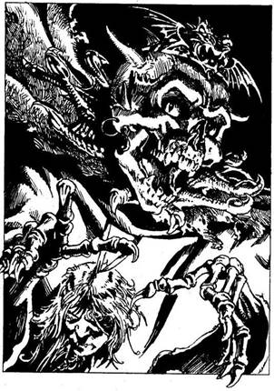
203.
Csontos Zanbar odalép hozzád, és megpróbál hozzáérni a testedhez ott, ahol nem fedi ruha. Eldobod a kardodat, és ezüst nyílvessződet íjadba helyezed. Ez az utolsó lehetőséged! Célzol, és meghúzod a húrt. Tedd próbára a Szerencsédet! Ha Szerencséd van, nyílvessződ célba talál és keresztüldöfi az Éj Hercegének palásttal fedett mellkasát - lapozz a 244-re. Ha nincs Szerencséd, a nyílvessző nem találja el az Éj Hercegét, aki feléd közeledve a karodat akarja megérinteni. Csontváz ujjai az élet utolsó szikrájától is megfosztanak. Most már te is élőholt szolgái közé tartozol.
204.
Eldobod a serleget, és elkapod a kezedet. A skorpió vagy egy métert fut a padlón, amikor rátaposol a bakancsoddal. Ha még nem tetted volna, felemelheted a B jelzésű serleget - lapozz a 209-re, vagy a C jelzésű serleget lapozz a 43-ra. Ha már nem érdekelnek a serlegek, átmehetsz a boltíves átjárón - lapozz a 107-re, vagy felmehetsz a lépcsőn - lapozz a 60-ra.
205.
Miután visszatetted az akna tetejét a helyére, ismét elindulsz keletnek. Minden túl csöndes és nyugodt körülötted, és kezdesz kissé ideges lenni. Előtted az Istálló utca élesen balra kanyarodik. Ha befordulsz a sarkon - lapozz a 44-re. Ha inkább visszamész az útkereszteződéshez és ott jobbra fordulsz a Torony utcán - lapozz a 127-re.
206.
A Törpe elmagyarázza neked, hogy egyszerű kockajátékot játszanak, a neve: "Ki dob többet?" A tét 2 Aranytallér. Minden játékosnak 2 Aranytallért kell letennie, majd ezt követően két kockával kell dobnia. Aki a legtöbbet dobja, azé az összes Aranytallér. Ahhoz, hogy te is játszhass, dobj két kockával háromszor, a három Törpe nevében, és jegyezd fel egy lapon külön-külön mindegyikük dobását. Ezután dobj a magad nevében, ugyancsak két kockával. Ha a te dobásod összege nagyobb, mint a többi három játékosé egyenként, úgy 6 Aranytallért nyersz a Törpéktől. Ha a dobásod összege kevesebb, mint a Törpék egyenkénti dobásainak összege, úgy vesztesz 2 Aranytallért. Négyszer játszhatod végig a játékot, ezt követően azonban a Törpék elunják a dolgot, és távoznak a kocsmából. A játék végén te maga is távozol a kocsmából, és továbbmész északnak - lapozz a 296-ra.

207.
A csigalépcső egy ajtóhoz vezet. Lassan lenyomod a kilincset, s legnagyobb meglepetésedre az ajtón át kijutsz a szabadba. Ott állsz a vár lapos tetején. A fejed fölül hirtelen surrogást hallasz. Felnézel, és a holdfényben két hosszú csőrű, hatalmas karmú nagy madarat pillantasz meg, melyek épp rád készülnek lecsapni. Nincs már annyi időd, hogy menedéket keress előlük, ezért meg kell küzdened a két Halálsólyommal!
ÜGYESSÉG ÉLETERŐ
Első Halálsólyom 4 5
Második Halálsólyom 4 4
Egyenként küzdj meg velük! Ha te győzöl - lapozz a 314-re.
208.
A Goblin zsebében 2 Aranytallér, egy gerezd fokhagyma és néhány játszócsontocska van. Tedd el ezek közül, amire szükséged van, és menj tovább keletnek a Facipő utcán - lapozz a 317-re.
209.
A serleg alatt egy halom Aranytallér van. 12-t számolsz meg, és mindet a hátizsákodba rejted. Ha még nem tetted volna, fölemelheted az A jelzésű serleget - lapozz a 175-re, vagy a C jelzésű serleget - lapozz a 43-ra. Ha nem érdekelnek a serlegek, átmehetsz a boltíves átjárón - lapozz a 107-re, vagy fölmehetsz a lépcsőn - lapozz a 60-ra.
210.
Pillantása olyan hipnotizáló, hogy képtelen vagy levenni róla a szemedet. Védtelenül, tehetetlenül állsz, nem bírod megakadályozni, hogy átöleljen, belémélyessze hatalmas fogait a nyakadba és kiszívja a véredet. Öntudatlan álomba merülsz, s amikor felébredsz, már nem emlékszel egykori önmagadra - te magad is Vámpír lettél!
211.
A szilva édes, zamatos, fantasztikusan finom. Nyersz 1 ÉLETERŐ pontot! Kézfejeddel megtörlöd a szádat, és továbbmész nyugatnak - lapozz a 307-re.
212.
Megkönnyebbülten nyugtázod, hogy a többi őr nem figyelt fel kardcsatátok zajára, de mivel nem akarod kihívni magad ellen a sorsot, gyorsan a város belseje felé veszed az utadat - lapozz a 74-re.
213.
Egy munkapadnál fehér kötényes férfi ül, és szorgosan fényez egy ezüstserleget. - Az üzlet végében lévő vasráccsal védett vitrinben számos ezüsttárgy van. Mit teszel?
Beszélsz az ezüstmívessel? Lapozz a 248-ra.
Rátámadsz a kardoddal? Lapozz a 135-re.
Kimész az üzletből, és folytatod
az utadat kelet felé? Lapozz a 100-ra.
214.
Amint megérinted a harci szekercét, a Páncélruha életre kel. Gyors, apró mozdulatokkal hátralendíti a harci szekercét, és lecsapni készül rád. Tedd próbára a Szerencsédet! Ha Szerencséd van, sikerül elugranod a szekerce elől - lapozz a 158-ra. Ha nincs Szerencséd, a szekerce éle belevág a bal karodba - lapozz a 379-re.
215.
A gyíkszerű teremtmény halk, sziszegő hangon megkérdezi tőled, nem lenne-e kedved megvenni tőle az egyik híres skorpió melltűjét. Ha megveszed az egyiket - lapozz a 315-re. Ha udvariasan nemet mondasz, lemész a lépcsőn, és a házat elhagyva észak felé folytatod az utadat - lapozz a 334-re.
216.
A Facipő utca igen keskeny, két oldalán szorosan egymás mellett házikók sorakoznak, meg néhány üzlet. Jobb kéz felől egy kisfiút látsz, aki arccal a macskaköves útra borulva fekszik, és hangosan nyöszörög. Csuklya van a fején, így az arcát nem látod. Mellette egy fakarika meg egy bot hever. Ha megállsz, hogy segíts rajta - lapozz a 72-re. Ha inkább továbbmész - lapozz a 317-re.
217.
Egész nap gyalogolsz, míg végül egy dombhoz érsz. Nikodémusz térképén ezen a dombon áll az Éj Hercegének vára. Körülötted minden csendes, de a levegőben az enyészet szaga leng. Ahogy a hold egyre magasabbra kúszik az éjszakai égen, úgy nőnek meg az árnyak a földön. Egyszer csak kirajzolódnak előtted Csontos Zanbar várának rosszat sejtető körvonalai. A vár tornya, akár egy fekete ujj, úgy mered az égnek. Mielőtt kardodat kivonva elindulnál a csúcsíves, fából készült bejárati ajtó felé, átvizsgálod hátizsákod tartalmát. Hirtelen velőtrázó üvöltést hallasz. Amikor megfordulsz, látod, hogy két szempár mered rád a sötétben. Két Holdkutya áll előtted, Csontos Zanbar jól idomított gyilkos kutyái. Egyenként küzdj meg velük!
ÜGYESSÉG ÉLETERŐ
Első Holdkutya 9 10
Második Holdkutya 11 9
Ha te győzöl - lapozz a 259-re.
218.
A Törpe mosolyogva tárja ki feléd a karját, és így szól:
- Nikodémusz ellensége az én barátom! Légy üdvözölve, idegen! - Elmondod Wraggins-nak, hogy nem tudod, hol lakik Nikodémusz, mire ő elmagyarázza, hogy a varázsló a Macskahal folyón átívelő, az óvárost a kikötővel összekötő Éneklő híd tövében lakik, egy kunyhóban. Elmondja, hogy a híd a város szívében található, és csaknem valamennyi utca odavezet. Megköszönöd a Törpének az információt, aztán kimész az üzletéből, és nyugatnak indulsz tovább a Kulcs utcán. Lapozz a 300-ra.
219.
A magasabb Troll közli veled, hogy a neve Savanyúhas, és az ő feladata kinyomozni a hívatlan látogatókat Feketehomok kikötőben. Megnézi kereskedői engedélyedet, majd így szól: - Nem úgy nézel ki, mintegy kereskedő. Te is ahhoz a fura népséghez tartozol, akik ott voltak a fűszervásáron a Bors utcában? - Ha azt feleled: Igen - lapozz a 150-re. Ha azt feleled: Nem - lapozz a 393-ra.
220.
A kulcs remekül illik a vitrint lezáró rácson lévő lakatba. Amint elfordítod a kulcsot, a lakat kipattan, és bármit kivehetsz a vitrinből, amire csak szükséged van. A boltban egyébként semmi olyasmit nem látsz, ami esetleg kellene neked, így aztán kimész, és tovább folytatod utadat keletnek - lapozz a 100-ra.
221.
A keskeny, sötét sikátor legalább húsz méter hosszú, és a végét fal zárja le. A Törpéknek nyomát sem látod. Lassan visszaindulsz a sikátoron, amikor föntről hirtelen hatalmas háló hullik rád. Súlyától elterülsz, mozdulni sem bírsz. Ekkor észreveszed a három Törpét, akik kuncogva állnak melletted. Benyúlnak a háló lyukain, és átkutatják a hátizsákodat. Csak az aranyad érdekli őket. Tehetetlenül nézed, amint elveszik és odébbállnak vele, magadra hagyva téged a háló fogságában. Elvesztetted minden aranyadat. Vesztesz 2 Szerencse pontot! Nagy nehezen kikászálódsz a háló alól, visszamész az útra, és balra fordulva elindulsz nyugat felé - lapozz a 396-ra.
222.
Az utca jobb oldalán sorakozó házak előtt fakerítés húzódik, mögötte bokrok, fák, virágok nőnek. A fakerítésen forgóajtó van, s mellette kiírás: "Közkertek. Belépődíj 1 Aranytallér." - Ha be akarsz
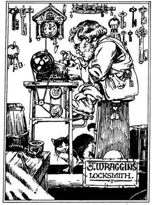
menni - lapozz a 370-re. Ha inkább továbbmész - lapozz a 133-ra.
223.
Kiver a veríték, a homlokod csupa víz, amikor kiválasztasz egy pirulát és lenyeled. Dobj egy kockával! Ha 2 és 6 között bármilyen számot dobsz - a veszélytelen pirulát választottad. A férfi benyúl zsinegövén lógó erszényébe, és átnyújt neked 20 Aranytallért, majd jó utat kíván, és a mielőbbi viszontlátás reményében elbúcsúzik tőled. Kimész a szobából, és visszasétálsz a sikátoron a Gyertya utcáig - lapozz a 165-re. Ha 1-et dobsz, az azt jelenti, hogy hamarosan meghalsz a mérgezett pirulától, és kalandod itt véget ér!
224.
Az üzlet végében egy zsámolyon öreg, szemüveges Törpe ül. Pedállal hajtott öntöttvas gépen, mely hangosan csikorog és zakatol, nagy műgonddal egy kulcsot készít. Köhögsz egyet, hogy. felkeltsd a figyelmét, de ő még csak fel sem néz a munkájából. Végre a gép megáll, és a Törpe megkérdi, mit akarsz. Megkérdezheted tőle, van-e csontvázból készült kulcsa - lapozz a 66-ra, vagy megérdeklődheted, ismeri-e Nikodémuszt - lapozz a 236-ra.

225.
Mindegyik Csavargó azzal henceg, hogy akár puszta kézzel is elbánik veled. Úgy döntenek, hogy egyenként küzdenek meg veled.
ÜGYESSÉG ÉLETERŐ
Első Csavargó 7 5
Második Csavargó 6 7
Harmadik Csavargó 5 6
Ha te győzöl - lapozz a 397-re.
226.
Sikerül kiszabadulnod a kalóz erős markának szorításából, és kardot rántasz. Hátrálni kezdesz az ajtó felé, amikor a Kalózok fölpattannak a priccsükről, és előhúzzák rövid kardjukat. A szűk helyen egyenként küzdesz meg velük.
ÜGYESSÉG ÉLETERŐ
Első Kalóz 6 6
Második Kalóz 5 4
Harmadik Kalóz 7 4
Ha te győzöl - lapozz a 111-re. Ha akarsz, Elmenekülhetsz: kihátrálhatsz az ajtón, és a hajót elhagyva továbbmehetsz északnak a Kikötő utcán - lapozz a 78-ra.
227.
Az utca csakhamar ismét éles kanyart vesz jobbra, és most kelet felé tartasz. Bal kéz felől az egyik ház előtt egy halom törmelék és törött holmi van. A halom tetején egy pár bakancsot látsz, mely körülbelül a te méreted. Ha fel akarod próbálni - lapozz a 362-re. Ha továbbmész keletnek - lapozz a 103-ra.
228.
A kulcs remekül illik a zárba, és kattanva nyílik, amikor elfordítod. Benyitsz az ajtón, és egy gyönyörű, márványpadlós előcsarnokban találod magad. A négy fal közül hármon gonosz arcú férfiak és nők portréi lógnak, de a veled szemközti falon két vaspajzs függ. Az egyiken egy torony, a másikon egy egyszarvú képe látható. Az előcsarnokból csigalépcső vezet fel a fönti szintre. Mit teszel?
Leveszed a tornyos pajzsot? Lapozz a 125-re.
Leveszed az egyszarvús
pajzsot? Lapozz a 374-re.
Felmész a csigalépcsőn? Lapozz a 21-re.
229.
Ahogy a férfi felé közelítesz, az lenyeli a kulcsot, és hozzád vágja a tojást. Tedd próbára a Szerencsédet! Ha Szerencséd van, a tojás nem talál el, hanem a falhoz csapódik, és zöldes színű gáz száll fel belőle - lapozz a 23-ra. Ha nincs Szerencséd, a tojás eltalálja a melledet; és beszippantasz egy keveset a kiáramló zöld színű gázból - lapozz a 343-ra.
230.
Körbetapogatod a cella falát, és észreveszel egy kilazult követ. Az öreg figyeli minden mozdulatodat, amint kiemeled a követ a falból. Belesel a lyukon, ahol egy vaskulcsot találsz. Kiveszed, és belehelyezed a zárba. Legnagyobb meglepetésedre a kulcs elfordul benne. Nyersz 1 Szerencse pontot! A cella ajtaját nyitva hagyod, kiveszed a kulcsot, visszateszed a lyukba, és visszahelyezed rá a követ. Kimész a cellából, és magadhoz veszed a kardodat, mely a cella előtt fekszik egy asztalon. Ekkor aztán odakiáltasz az őröknek, hogy szerinted hülyék, és több életet láttál a Trollok tányérján, mint amennyi bennük van. A dühödt Őrök lerohannak a lépcsőn, és meglepetten látják, hogy ott állsz kardoddal a kezedben. Egyenként küzdj meg velük.
ÜGYESSÉG ÉLETERŐ
Első Városi Őr 6 6
Második Városi Őr 7 5
Ha legyőzöd őket, felmész a lépcsőn - lapozz az 54-re.
231.
Kint a lépcsőfordulóban vagy benyitsz a fekete ajtón - lapozz a 96-ra, vagy visszamész a csigalépcsőhöz és felmész a következő szintre - lapozz a 197-re.
232.
Az ajtó egy kis szobába nyílik, amelynek a közepén egy dézsában forró víz gőzölög. Ha elbújsz az ajtó mögött a szobában, hogy megnézd, ki fog fürödni - lapozz a 12-re. Ha inkább becsukod az ajtót - lapozz a 383-ra.
233.
A forrásvíz felfrissít, de egyáltalán nem olyan gyógyító erejű, mint ahogy azt a kisfiú mondta. Nyersz 1 ÉLETERŐ pontot! Színlelt haraggal megfenyegeted a gyereket az öklöddel, és továbbmész északnak - lapozz a 247-re.
234.
Az aprócska ember mosolyogva így szól: - Ó, hát ha csak ez a kívánságod, ez igazán egyszerű! Ott van fönn, a negyedik szinten, egy fekete ajtó mögött nyíló szobában. - Ezt követően búcsút int neked, és eltűnik egy füstfelhőben. Felállsz, és visszamész arra a szintre, ahol a lépcsőfordulóban két ajtó van egymás mellett. Nagy lélegzetet veszel, és lenyomod a fekete ajtó kilincsét - lapozz a 96-ra.
235.
Úgy döntesz, nem teszed ki magad újabb veszélynek, hanem inkább négykézláb óvatosan kimászol a szobából. Amikor kint vagy, felállsz, odamész a csigalépcsőhöz, és felmész a következő szintre. Lapozz a 65-re.
236.
Kérdésedre a Törpe gyanakvóan néz rád, és felvonja az egyik szemöldökét. - Ismerem Nikodémuszt, de mit akarsz tőle? - kérdi. - Ha azt feleled, hogy Silvertonból jöttél és Nikodémusz segítségére lenne szükséged - lapozz az 57-re. Ha azt mondod, hogy meg akarod ölni Nikodémuszt - lapozz a 218-ra.
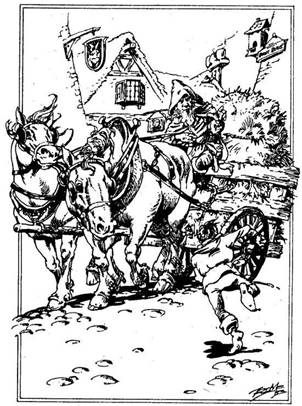
237.
Megdörzsölöd a gyűrűben lévő drágakövet, és felmutatod a Levélvadak felé. Lángcsóva csap ki a gyűrűből, és hatalmas lyukat éget a legközelebb álló Levélvad testén. Az süvítő hangon felordít, majd hátrálni kezd. Kihasználod ezt a lehetőséget, és átvágsz sérült védelmi gyűrűjükön. Kezedben a lótuszvirággal gyorsan odarohansz a forgóajtóhoz, és kimenekülsz az Istálló utcára - lapozz a 133-ra.
238.
Az utcából jobbra egy kis sikátor nyílik két ház között. A sikátort csakhamar egy ajtó zárja le, melyre hat koponyát festettek: egy feketét és öt fehéret. Ha bemész a sikátorba és benyitsz az ajtón - lapozz a 27-re. Ha inkább továbbmész keletnek - lapozz a 139-re.
239.
Futó léptek zaját hallod a hátad mögött. Hátranézel, és egy csapat városi őrt látsz, akik téged üldöznek. Megállsz, hogy kigondold, merre is menekülj, amikor az egyik házból egy kisfiú fut oda hozzád, és így szól: - Kövess! - Mivel nincs jobb ötleted, követed a fiúcskát. A gyerek lerohan a Malom utca végébe, majd befordul a Lúd utcába. Egy szénával megrakott szekérnél megáll, és kétségbeesetten azt mondja egy kedves arcú öregembernek: - Bácsikám! Bácsikám! Ez a bátor ember megölte Savanyúhast! Segítenünk kell neki, hogy megmeneküljön! - Az öreg nyugodt hangon így szól: - Ezt valóban meg kell hálálnunk neki. Gyorsan ugorj fel a szekérre! - Sietve felugrasz, és elrejtőzöl a szénában. Mozdulatlanul fekszel, amikor meghallod az őrök futó lépteit. Megállnak kérdezősködni az öreg zsúpkészítőnél, de az leküldi őket a Lúd utcán. Miután eltűnnek, az öreg odakiált neked, hogy elvisz egy biztonságos helyre. Hallod, amint felszáll a szekérre és elindítja a lovait. A szekér hangosan zötyög a macskaköves úton, de te kényelmesen ülsz a szénában. A szekér megáll, majd elindul, majd ismét megáll, s hallod, amint valaki kérdezősködik. Vagy egy félóra múlva a szekér ismét megáll, és a zsúpkészítő elkiáltja magát: - Megérkeztünk, előbújhatsz! - Kidugod a fejedet a szalma közül, és meglepetten látod, hogy egy erdő szélénél vagytok. Tőled nyugatra, a távolban megpillantod Feketehomok kikötő félelmetes körvonalait. Leugrasz a szekérről, és megköszönöd a zsúpkészítő kedvességét. Az búcsút int neked, megfordítja a szekerét, és elindul vissza Feketehomok kikötőbe. Az összes szükséges tárggyal rendelkezel, hogy megölhesd az Éj Hercegét, és tetoválás is van a homlokodon? Ha igen - lapozz a 201-re. Ha akar egyetlenegy is hiányzik a megadott tárgyak közül, vagy nincs tetoválás a homlokodon - lapozz a 299-re.

240.
A férfi átnyújtja neked az aranyakat, és a drágaköveket beteszi a pult alá. Ha ezt követően megkérdezed tőle, mennyit kér a gyűrűiért - lapozz a 36-ra. Ha úgy gondolod, hogy eleget üzleteltél már, kimész az üzletből és folytatod utadat nyugat felé - lapozz a 196-ra.
241.
Az üzletben egy magas, vékony, hegyes fülű, szőke férfit látsz, aki forró viaszt önt egy vasserpenyőből az öntőformába. A gyertyaöntő mester egy Elf. Amikor hozzád fordul, észreveszed, hogy ferde metszésű, égszínkék szeme van. Ki tudja, miért, a tekintete igencsak hűvös. Közli veled, hogy színes gyertyáinak darabja 1 Aranytallér. Annyit vehetsz, amennyit akarsz. Megkérdi, nincs-e kedved megtekinteni a hátsó szobában az egyik varázsgyertyáját. Ha meg akarod nézni - lapozz a 63-ra. Ha inkább kimész az üzletből és kelet felé indulsz tovább - lapozz a 280-ra.
242.
A legény mondván, hogy elkésik a piacról, felkapja a talicskát, és sietve indul tovább. Megeszel egy almát, de az igencsak savanyú. Megfájdul tőle a gyomrod, s görcsölni kezd. Elég gyatrán érzed magad. Vesztesz 1 ÉLETERŐ pontot! Elhajítod a maradék almát, és továbbmész nyugatnak - lapozz a 307-re.
243.
Iszonyú égési sérüléseket szenvedtél. Vesztesz 5 ÉLETERŐ pontot! Ha még mindig életben vagy, úgy döntesz, hogy meg sem moccansz, halottnak tetteted magad. A kövér férfi még mindig kuncog magában mögötted. Hallod, amint odajön hozzád; jól oldalba rúg, hogy csak úgy sajog a tested. Örül, hogy valóban meghaltál, és fölmegy a lépcsőn. Kínzó fájdalmak közepette végigvonszolod magad a folyosón az ajtóig. Zajtalanul kimész az ajtón. Nagy nehezen feltápászkodsz, és tántorgó léptekkel elindulsz az utcán felfelé - lapozz a 304-re.
244.
Az Éj Hercege rövid időre megbénul. Földöntúli erőket képes összehívni a saját védelmére, ezért gyorsan kell cselekedned. Milyen keveréket szórnál a szemébe?
Vén Boszorka hajának és fekete
gyöngyöknek a keverékét? Lapozz a 9-re.
Fekete gyöngyöknek és a lótuszvirágnak
a keverékét? Lapozz a 129-re.
A lótuszvirágnak és a Boszorka hajának
a keverékét? Lapozz a 337-re.
245.
Egy nagy szobába lépsz be. A falak barnák, s a földön szétszórt szalma hever. A levegőben nehéz dohszag terjeng, mely a koszos Barlangi Trollokat juttatja az eszedbe, akik az északi határszélen laknak. A szoba közepén egy félbe vágott hordó az asztal, körülötte néhány durván ácsolt szék áll szanaszét. Egy magas, boltíves átjárón át lehet menni a ház hátsó szobájába, ahonnan halk mozgás hallatszik. Ha át akarsz menni a boltíves átjárón - lapozz a 178-ra. Ha inkább kimész a házból és folytatod az utadat észak felé - lapozz a 282-re.
246.
Amint óvatosan mész lefelé a macskaköves utcán, hirtelen belebotlasz egy apró termetű öregemberbe, aki épp az egyik házból ront ki. Vászonzsákjából piszkos üvegpalackot húz elő. Miközben beszél, nem tudod levenni a szemedet az orrán díszelgő hatalmas bibircsókról és ragacsos hajáról. Mosolyogva kérdi, akarsz-e neki 2 Aranytallért fizetni csodálatos gyógyitaláért. Ha fizetsz neki az italért - lapozz a 98-ra. Ha inkább továbbmész keletnek - lapozz a 363-ra.
247.
Az utca élesen balra kanyarodik, és egy ideig nyugatnak tart. A kanyar után hirtelen három alacsony, zömök útonálló támad rád, akik a közeli sikátorban rejtőzködtek. Ketten lefogják a lábadat, a harmadik pedig megpróbál egy husánggal leütni. Tedd próbára a Szerencsédet! Ha Szerencséd van, sikerül elkapnod a fejedet az ütés elől - lapozz a 384-re. Ha nincs Szerencséd, a husáng nagy erővel sújt le a tarkódra, és eszméletedet veszted. Lapozz a 134-re.
248.
Megkérded Ben Borryman-től, van-e eladó ezüst nyílvesszője? Azt feleli, hogy nincs, de ha akarod, 10 Aranytallérért vagy egy varázstárgyért készít neked egyet. Ha a kért összeget ki tudod neki fizetni - lapozz a 85-re. Ha nem tudod kifizetni - lapozz a 42-re.
249.
A Kígyókirálynő villámgyorsan csap feléd a méregfogaival. Nehéz lesz megküzdeni vele.
Kígyókirálynő ÜGYESSÉG 9 ÉLETERŐ 7
Ha te győzöl - lapozz a 295-re.
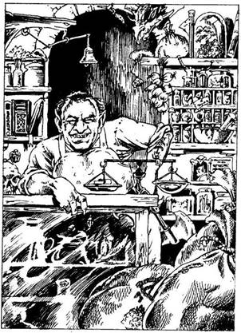
250.
Amint megszólal a kis csengettyű, a hátsó szobából a boltíves átjárón át egy barna kötényes teremtmény bújik elő sietve, és odapattan a pult mögé. Emberszabású ugyan, de iszonyúan ronda az arca, és hegyes fogai vannak. Gyorsan rájössz, hogy az illető keverék: félig ember, félig Ork. Éles bárd lóg az övéből, jelezve, hogy Feketehomok kikötő nem lehet éppenséggel a legnyugodtabb, legbarátságosabb hely, ahol könnyű üzletet kötni. Mit teszel?
A gyógyfüvek iránt kezdesz
érdeklődni? Lapozz a 183-ra.
Megkérded az Ember-Orkot, nem ismeri-e
véletlenül Nikodémuszt? Lapozz a 342-re.
Rátámadsz az Ember-Orkra? Lapozz az 5-re.
251.
Az egyik kis ember megáll, és letekint rád. Összetéveszt a városi őrrel, és odakiált a társainak, hogy rejtőzzenek el. Íjpuskát fog rád, és lő. Tedd próbára a Szerencsédet! Ha Szerencséd van, a nyílvessző a lábad előtt ér földet - lapozz a 269-re. Ha nincs Szerencséd, a nyílvessző mélyen belefúródik a válladba - lapozz a 330-ra.
252.
A hintó nem áll meg! A fenyegetően vad tekintetű négy ló már-már eltapos. Félre kell ugranod, ha nem akarod, hogy keresztülgázoljanak rajtad. Tedd próbára a Szerencsédet! Ha Szerencséd van, nem taposnak el és sikerül elugranod előlük a kanális tetejére - lapozz a 275-re. Ha nincs Szerencséd, az egyik ló eltapos - lapozz a 155-re.
253.
A Kígyók nem jelentenek komoly veszélyt egy kardforgatásban jártas ember számára. Úgy kezeld őket, mintha egyetlen teremtménnyel lenne dolgod. Ettől függetlenül ha megsebeznek, minden egyes Fordulóban 4 ÉLETERŐ pontot kell levonnod magadtól, mert marásuk mérgező.
Kígyók ÜGYESSÉG 5 ÉLETERŐ 5
Ha te győzöl, elhagyhatod a házat a bejárati ajtón át - lapozz a 75-re.
254.
Rémület ül ki a Vámpír arcára, amikor megpillantja kezedben a fokhagymát. A szoba egyik sarkába hátrál a csípős szag elől, mely megfosztja vérszívó erejétől. Kimész a szobából, és miután kívülről bezárod az ajtót, zsebre vágod a kulcsot. Odafutsz a csigalépcsőhöz, és felmész a következő szintre. Lapozz a 310-re.

255.
Az őrök gyanakvó pillantással mustrálgatnak, de miután megnézik az engedélyedet, elengednek. Gyorsan továbbmész északnak - lapozz a 227-re.
256.
Az utca jobb oldalán apró, mállott vakolatú házak sorakoznak. A házak előtt a lépcsőkön öregasszonyok ülnek, halat pucolnak, és halászhálókat javítgatnak. Terebélyes, vidám asszonyságok ezek, akik nagyokat nevetve szorgoskodnak. A halászok szemmel láthatólag nem tartózkodnak otthon. Az utca és a rakpart végében hatalmas vasmacska zárja el az utadat. Megfordulsz, és elindulsz vissza az útkereszteződés felé. Ha megállsz, hogy beszédbe elegyedj az asszonyokkal - lapozz a 320-ra. Ha inkább tudomást sem veszel róluk és egyenesen visszamész az útkereszteződésig - lapozz a 369-re.
257.
Ha a kezeden van az Aranyszem Gyűrű - lapozz a 385-re. Ha nincs - lapozz a 70-re.
258.
Átléped a Tűzmanót, és visszamész a lépcsőn, hogy megnézd, vajon ura még mindig a házban van-e. Lassan mész lefelé, kardodat élével lefelé tartva. Amikor leérsz, meglepetten veszel észre egy pompás ruhát viselő kövér férfit, aki díszes székén ülve téged néz. Nyugodtnak látszik, szinte egyáltalán nem zavarja kivont kardod. Vontatott, hűvös hangon egyszer csak így szól: - Megölted kedvenc háziállatomat, ezért az életeddel fizetsz! - Fölemeli a kezét, és széttárt ujjaiból villámok lövellnek ki. Ha a nyakadban lóg egy elefántcsont koponya - lapozz a 318-ra. Ha nem - lapozz a 47-re.

259.
Letörlöd a vért kardod pengéjéről, és odamész a faajtóhoz. Megpróbálod lenyomni a kilincset, de az ajtó nem nyílik. Ha van egy csontváz kulcsod - lapozz a 228-ra. Ha nincs, akkor vagy meghúzod az ajtó mellett csüngő kötelet - lapozz a 4-re, vagy megpróbálod a válladdal belökni az ajtót - lapozz a 365-re.
260.
Az őrök fogják a pénzüket, és futni hagynak. Amint elindulsz északnak, a hátad mögött felhangzik a gyilkos dühödt ordítozása. Gyorsan szeded a lábad, nehogy valami veszélyes dologba keveredj - lapozz a 222-re.
261.
- Ennek a városnak a hitvány Azzur nagyúr az uralkodója. Persze, ha Feketehomok kikötő csürhéje fölött akar valaki uralkodni, akkor bizony elég hitványnak kell lennie, és ő a leghitványabb közülük! Figyelmeztetlek, ha megtudják, hogy engedély nélkül tartózkodsz a Városban, halál fia vagy! A helyedben én sürgősen beszereznék egyet. - Széles mozdulattal betessékel a kapun, te pedig belépsz a városba. Lapozz a 74-re.
262.
Kézfejeddel letörlöd a szád széléről az undorító ízű levest, és magukra hagyod a bolond öregasszonyokat, hadd veszekedjenek, aztán kirontasz a házból. Kint ismét keletnek indulsz tovább - lapozz a 375-re.
263.
Bár a lépcsőfordulóban égnek a lámpások, a szobában mégis olyan sötét van, hogy nem látsz semmit. Ha van egy aranybaglyod - lapozz a 153-ra. Ha nincs - lapozz a 281-re.
264.
Mielőtt egy szót szólhatnál, az Ogre dübörgő hangon azt mondja: - Valaki ellopta az összes ennivalómat! Tudnál adni egy keveset a magadéból? - Ha akarsz némi élelmet adni az Ogre-nak, vonj le Élelmiszerkészletedből 2 adagot, jelöld a Kalandlapodon, és lapozz a 121-re. Ha megtagadod a kérését - lapozz a 357-re.
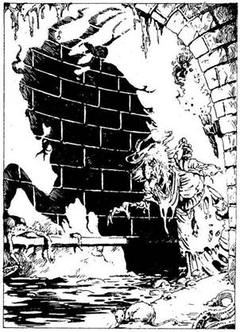
265.
Kardodról még mindig csöpög a Patkányok vére, amikor továbbindulsz a csatornában. A keskeny párkány, amelyen mész, igen csúszós, úgyhogy nagyon kell vigyáznod, nehogy beleess a lassan hömpölygő szennyvízbe. A csatorna fokozatosan jobbra kanyarodik, és ekkor hirtelen rohanó léptek zaja és jajveszékelés hangya tori meg a csöndet. Vad tekintetű, dúlt arcú, fehér hajú, rongyokba öltözött, hadonászó vénasszony siet feléd varázsszavakat mormolva. Ez egy Boszorkány. Van Agykontroll Italod? Ha van - lapozz a 82-re. Ha nincs - lapozz a 390-re.
266.
A te csapatod Base-ei mérgesek rád, amiért elvesztették miattad a meccset. Néhány szurkolójuk odarohan hozzád, és lökdösni kezd. Mire odavergődsz a falhoz, az arénában csaknem mindenki beléd köt. Két tárgyadat elveszted a hátizsákodból. Végül átmászol a falon, visszamész az útelágazásig, és elindulsz nyugatnak a Kikötő utcán - lapozz a 91-re.
267.
A két őr, aki lefogott, előbb egymásra néz, majd mindketten kérdőn társukra pillantanak. Az bólint, mire az őrök eleresztenek. Amikor átnyújtod neki a 10 Aranytallért, szúrós pillantást vet rád, és így szól: - Ha Azzur nagyúr megtudja, hogy engedély nélkül tartózkodsz a városban, halál fia vagy! Ami pedig Nikodémuszt illeti, őt találd meg egyedül. - Uralkodsz magadon, nehogy kardot ránts, megfordulsz, és belépsz a városba. Lapozz a 74-re.
268.
A boltíves átjáró előtt lévő selyemfüggöny hirtelen szétlibben, és egy furcsa teremtmény lép a szobába. Kígyófeje van, mely különös módon ül egy pazar ruhába öltözött fiatal nő torzóján. A kígyó szája kinyílik, és egy villás végű nyelv pattan ki rajta, majd visszahúzódik, miközben a Kígyókirálynő rád ripakodik: - Nem rendeltem semmiféle virágot Pipa asszonytól, és nem hinném, hogy ajándékba küldött volna nekem akár egyetlen szálat is. Miféle trükk ez, te gazember? - Pánikba esel, s azon töprengsz, mit is csinálj. Ha odarohansz a bejárati ajtóhoz - lapozz a 32-re. Ha kardot rántasz és rátámadsz a Kígyókirálynőre - lapozz a 249-re.

269.
Az íjpuskás kis ember nagyot káromkodik, majd berohan a tőled balra eső házba. Úgy látod, nem
lenne könnyű utolérni, így aztán átmész a híd alatt, s folytatod utadat keletnek - lapozz a 30-ra.

270.
Amikor előrántod a kardodat, a kocsmáros hatalmasat füttyent. A bárpult mögött felpattan egy csapóajtó, és ekkor halk, morgó hang üti meg a füledet. Undorító fej jelenik meg az ajtóban, és látod, amint egy Troll hatalmas zöld teste bújik elő a pincéből. Kezében bunkósbotot tart. A kocsmáros ujjával rád mutat, mire a Troll a bunkót lengetve lassan, csoszogva megkerüli a bárpultot. A kocsma összes vendége körétek sereglik, és hangosan kántálja kórusban: - Harcolj! Harcolj! Harcolj! - Nincs más választásod, meg kell küzdened a Troll-lal!
Troll ÜGYESSÉG 8 ÉLETERŐ 8
Ha sikerül megölnöd a Trollt - lapozz a 26-ra.
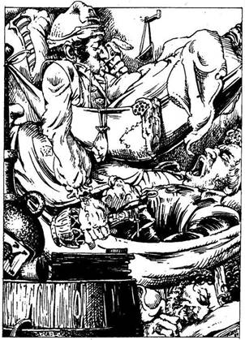
271.
A priccseken három kalóz alussza édes álmát. A fülke kicsi, a kalózok ruháján és néhány személyes holmiján kívül semmi más nincs benne. Az árulkodó jelek - egy nyitott rumosüveg, egy csupor meg egy pakli kártya a szoba közepén lévő hordó tetején - arra utalnak, hogy a kalózok ittak és kártyáztak. Az egyik kalóz nyakában kicsinyke bőrerszényt pillantasz meg. Ha odalopakodsz hozzá és megpróbálod levágni a nyakából - lapozz a 162-re. Ha inkább nem kockáztatod meg a dolgot és visszacsukod az ajtót - lapozz a 284-re.
272.
Sikerül átpréselned magad a döglött Százlábú és a csatorna fala között lévő szűk résen. Továbbmész a csatornában, és egy idő múlva elérkezel a csatornát lezáró vasrácshoz, melyen a szennyvíz ömlik be. Ha megpróbálod kiemelni a vasrácsot - lapozz a 377-re. Ha inkább visszamész a bejárati nyíláshoz - lapozz a 174-re.
273.
Amikor jobban megnézed a skorpiót, látod, hogy az egy melltű. Rátűzöd a bőrzubbonyodra. Ez egy szerencsét hozó talizmán. Nyersz 2 Szerencse pontot! Mit csinálsz ezután? Ha eddig még nem tetted volna, felveheted az ezüstskorpiót - lapozz a 13-ra. Ha nem nyúlsz hozzá, hanem inkább felmész a lépcsőn - lapozz a 80-ra; ha kimész a házból és északnak indulsz tovább - lapozz a 334-re.
274.
Az őrök boldogok, hogy elkaptad azt az embert, akit üldöztek. Közlik veled, hogy ez szökött gyilkos. Az őrök főnöke átad neked 5 Aranytallért, és így szól: - Itt a jutalmad! Legközelebb azonban már nem üti pénz a markodat - Ugyanis a fickó többé nem fog megszökni! - Vársz egy keveset, amíg az őrök elvezetik a hangosan kiabáló gyilkost, majd továbbmész északnak - az Istálló utcán - lapozz a 222-re.
275.
Fellépsz, leporolod a ruhádat, s közben arra gondolsz, hogy egy szép napon szeretnél majd találkozni ezzel az Azzur nagyúrral. A hintó eltűnik a szemed elől, és te ismét továbbmész nyugatnak - lapozz a 171-re.
276.
Azt mondod az őröknek, hogy ha elengednek és hagyják, hogy bemenj a városba, busásan megjutalmazod őket. Mennyit adnál nekik?
Öt Aranytallért? Lapozz a 109-re.
Tíz Aranytallért? Lapozz a 267-re.
Tizenöt Aranytallért? Lapozz a 41-re.
277.
Odasietsz a csigalépcsőhöz, és felmész a következő szintre - lapozz a 207-re.
278.
Bár a szobában lévő tárgyak között sok értékes holmi akad, nem tudod igazán hasznukat venni küldetésed során. Valami mégis felkelti az érdeklődésedet. Egy mahagóni kártyaasztal tetején három, talpával felfelé fordított ezüstserleg áll. Az egyikbe egy A betűt, a másikba egy B betűt, a harmadikba egy C betűt véstek. Mit teszel?
Felemeled az A jelzésű
serleget? Lapozz a 175-re.
Felemeled a B jelzésű
serleget? Lapozz a 209-re.
Felemeled a C jelzésű
serleget? Lapozz a 43-ra.
Átmész a boltíves átjárón? Lapozz a 107-re.
Felmész a lépcsőn? Lapozz a 60-ra.
279.
Elveszi tőled a pénzt, és hellyel kínál az asztalnál. Előbb egy hegyes tűvel gondosan kilyukasztgatja a homlokodon a bőrt, aztán befesti lemoshatatlan tintával. Belenézel a tükörbe, és valahogy furcsának találod magad, de vállat vonsz, és kimész az üzletből. Visszamész a kis közön, és a Malom utcán balra fordulsz - lapozz a 307-re.
280.
Kissé följebb az utcában egy újabb bolt van. A cégtáblán ez áll: "Ben Borryman, Ezüstmíves". Ha bemész az üzletbe - lapozz a 213-ra. Ha inkább továbbmész keletnek - lapozz a 100-ra.
281.
Ha a sötétben tapogatózva be akarsz menni a szobába - lapozz a 391-re. Ha inkább visszatérsz a csigalépcsőhöz és felmész a következő szintre - lapozz a 65-re.
282.
Az utcán, tőled jobbra, hatalmas hordót veszel észre. Egy zsámolyon egy kisfiú ül mellette. Ha beszélni akarsz a fiúcskával - lapozz a 119-re. Ha továbbmész északnak - lapozz a 247-re.
283.
Nem találsz semmi használhatót a halott teremtményen, így aztán úgy döntesz, hogy továbbmész északnak - lapozz a 217-re.
284.
Ha még nem tetted volna, kinyithatod a másik ajtót - lapozz a 232-re, vagy elhagyhatod a hajót és folytathatod a kutatást Feketehomok kikötőben, a Kikötő utcán északnak haladva - lapozz a 78-ra.

285.
Sietve átkutatod az őr holmiját, és 7 Aranytallért, néhány kulcsot meg egy darabka száraz kenyeret találsz. Jegyezd fel a Kalandlapodon, mit akarsz ezek közül megtartani, és indulj tovább északnak - lapozz a 227-re.
286.
A gyűrűt a Múmia felé tartod, és megdörzsölöd a foglalatban lévő drágakövet. Tűzcsóva pattan ki belőle, és a Múmia a lángok martaléka lesz. Elterül, és néhány perc múlva már csak egy halom üszkös csont marad belőle. Lapozz a 163-ra.
287.
Az egyik bódéban élelmiszert árulnak az éhes vásárlóknak: gyümölcsöt, zöldséget, húst, meleg levest, kukoricát és gesztenyét. Ehetsz egy kevés meleg ételt, ha akarsz. Fizess érte 1 Aranytallért, és növeld ÉLETERŐ pontjaid számát 2-vel. A tér nyugati oldalán sétálsz, amikor egy bíborszínű bársonyruhába öltözött férfit pillantasz meg, aki lanton játszik. Ha megállsz, hogy meghallgasd a játékát - lapozz a 3-ra. Ha inkább elmész mellette - lapozz a 398-ra.

288.
Senki sem alszik nyugodtan Csontos Zanbar várában. Az éjszaka kellős közepén ágyad fejtámlájából mérgező gáz szivárog elő, amely azonnal megöl. Ezután Csontos Zanbar boszorkányai és szolgái átvisznek az élőholtak világába, ahol mint Lélekrabló fogsz szolgálni az idők végezetéig.
289.
Az Ember-Ork a tőled kapott Aranytallért felpöccinti a levegőbe, majd köténye zsebével felfogja. Ezután egy kihegyezett gallyal piszkálni kezdi a fogát, és így szól: - Semmit nem tudok róla. - Ha meg akarsz küzdeni a szemtelen Ember-Orkkal - lapozz az 5-re. Ha inkább elfojtod dühödet, menj ki az üzletből, és folytasd tovább az utadat ismét északnak - lapozz a 93-ra.
290.
Megpróbálsz közönyös arccal elhaladni a Trollok mellett, de azok valami furcsát fedeznek fel rajtad, és odaintenek magukhoz. Megkérdik, hol laksz, mire azt feleled, hogy kereskedelmi úton jársz Feketehomok kikötőben. A Trollok megvetően kacagnak fel, és az irataidat kérik. Ha van kereskedői engedélyed - lapozz a 219-re. Ha nincs - lapozz a 335-re.

291.
Amikor az őr észreveszi, miben mesterkedsz, lándzsájával neked támad. Tedd próbára a Szerencsédet! Ha Szerencséd van, nem talál el és sikerül elfutnod mellette be a városba - lapozz a 74-re. Ha nincs Szerencséd, lándzsájával megsebesíti a karodat. Vesztesz 2 ÉLETERŐ pontot, és lapozz a 10-re.
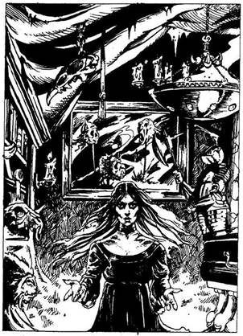
292.
Fényűzően bebútorozott szobába nyitsz be, amely telis-tele van műkincsekkel és régiségekkel. Egy fiatal nő áll előtted fekete bársonyruhában. Hosszú fekete haja és élénkpiros szája van. Mosolyogva hellyel kínál. Nem ülsz le a fotelba, ugyanis attól tartasz, hogy ő Csontos Zanbar egyik szolgája. Tárt karokkal közeledik feléd, mint aki szeretne megölelni, s amikor ismét elmosolyodik, akkor veszed észre két agyarszerű, hosszú, éles szemfogát. Ilyen fogai csakis a Vámpíroknak vannak. Ha van nálad egy kevés fokhagyma - lapozz a 254-re. Ha nincs - lapozz a 210-re.
293.
Az öregasszony elmondja, hogy épp most szakította le az egyik aranyvirágát. A virágnak tíz aranyszirma van, és ha a virágot kutyavérbe mártod, majd a szirmokat leszakítva egyenként a földre dobod, Aranytallérrá változnak. Pipa asszony a virágért cserébe bármilyen varázstárgyat kér: fegyvert vagy élelmet (két adagot az Élelmiszerkészletedből). Ha ráállsz a cserére, Kalandlapodon jelöld a változást! Akár cserélsz, akár nem, kimész az üzletből, és folytatod utadat nyugat felé - lapozz a 24-re.
294.
A hajóhíd tetején ott áll a legénység egyik tagja. Amikor megpillant, előrántja görbe kardját, és felszólít, hogy hordd el az irhádat a hajóról. Ha visszamész a hídon a kikötőgátra és bekanyarodsz balra, a Kikötő utcába - lapozz a 78-ra. Ha kardot rántasz és megküzdesz a kalózzal - lapozz a 386-ra.
295.
Visszadugod a kardodat a hüvelyébe, és átkutatod a Kígyókirálynő házát. Találsz egy barna bőrzsákot, és amikor megrázod, hallod, hogy valami csörög benne. 12 Aranytallért találtál. Nyersz 1 Szerencse pontot! Kimész a házból, és folytatod az utadat az Istálló utcán - lapozz a 333-ra.

296.
Az úton két, fekete palástot viselő férfi közeledik feléd. A csuklya mögül csupán a szemük látszik ki. Amikor megpillantanak, fejükkel intenek egymásnak, és szinte egyszerre rántanak kardot. Tolvajok ezek, akik abban reménykednek, hogy kirabolhatnak. Meg kell védened magad. Küzdj meg velük külön-külön.
ÜGYESSÉG ÉLETERŐ
Első Tolvaj 7 7
Második Tolvaj 8 6
Ha te győzöl - lapozz a 147-re.
297.
A szobában semmit nem találsz, aminek hasznát vehetnéd. A Zombikból áradó bűz és a sok hulladék szaga kibírhatatlan, ezért úgy döntesz, hogy azonnal távozol innen. Visszatérsz a csigalépcsőhöz, és felmész a következő szintre. Lapozz a 207-re.
298.
Érzed, amint a méreg szétárad a testedben. Vesztesz 4 ÉLETERŐ pontot! Ha még mindig életben vagy, sikerül odafutnod az ajtóhoz és elmenekülnöd a házból. - Lapozz a 75-re.

299.
Rettentően veszélyes lenne, ha ismét betennéd a lábadat Feketehomok kikötőbe, különösen azért, mert az őrök azonnal felismernének. Nincs más választásod, vissza kell menned a hosszú úton egészen Silvertonig, s közölnöd kell, hogy küldetésedbe belebuktál.
300.
Az utca hirtelen jobbra kanyarodik, és északnak megy tovább. Elhaladsz néhány apró ház mellett, és szinte biztos vagy benne, hogy bentről láthatatlan emberek figyelnek árgus szemmel. Egyszer csak kicsapódik az egyik ház ajtaja, egy rongyos kisfiú szalad oda hozzád, és egy darabka papírt ad át neked. Meg sem áll, azonnal elfut, és eltűnik a saroknál. A papíron ez az üzenet áll: "Hat íjból merednek rád a nyílvesszők. Tégy le 10 Aranytallért az úttest közepére, és menj tovább!" Ha engedelmeskedsz a felszólításnak, jelezd a változást a Kalandlapodon. Vesztesz 2 Szerencse pontot, és lapozz a 347-re. Ha úgy mész tovább, hogy nem teszed le a kért összeget - lapozz a 137-re.
301.
A páncélruha vasbevonatú kesztyűje egy harci szekercét tart. Ha el akarod venni a szekercét - lapozz a 214-re. Ha a földre döntöd a páncélruhát, hogy meggyőződj róla, nem csapda-e - lapozz a 185-re.
302.
Két drágakövet mutatsz a férfinak. Az a fény felé tartva egy kicsiny nagyítóval vizsgálja meg azokat. Ezt követően odafordul hozzád, és felajánl értük 9 Aranytallért. Ha elfogadod az ajánlatát - lapozz a 240-re. Ha többet szeretnél kicsikarni tőle - lapozz a 345-re.
303.
Lehajolsz a mozdulatlanul fekvő Boszorkányhoz, és kardoddal levágod egy hajtincsét. Óvatosan a hátizsákodba teszed, és visszamész a csatornában a bejárati nyílásig - lapozz a 104-re.
304.
Egy útkereszteződéshez érsz. A nyugat felé vezető utca a Kulcs utca, a kelet felé vezető pedig az Óra utca. Egyenesen föl, északnak a Piac utca vezet, melyen hatalmas tömeg vonul hurrázva, éljenezve és integetve. Úgy döntesz, hogy követed őket. Lapozz a 148-ra.
305.
A Lélekrabló felé tartod a tükrödet, de őt nem tudod feltartóztatni. Sikerül ismét hozzád érnie, és újabb égési sebeket ejt rajtad. Vesztesz 2 ÉLETERŐ pontot! Ha még mindig életben vagy, kilőheted rá az ezüst nyílvessződet - lapozz a 189-re, vagy hozzávághatod a Jéggyűrűdet - lapozz a 382-re.
306.
A két őr rémülten egymásra néz, és hanyatt-homlok rohanni kezd fölfelé a lépcsőn, s közben torkaszakadtából ezt ordítja: - Pestis! Pestis! - Magadban mosolyogva nyugodtan kimész a cellából, és magadhoz veszed az asztalról a kardodat. Amikor felérsz, az őröknek hűlt helyét találod; miután átkutatod a szobát, találsz 2 Aranytallért, valamint egy kereskedőnek szóló engedélyt, amelynek a tulajdonosa árulhatja a portékáit Feketehomok kikötőben. Elteszed szerzeményeidet, és kilépsz az ajtón a városba. Lapozz a 74-re.
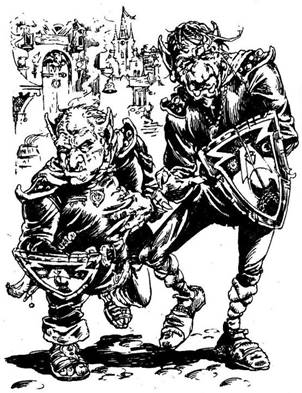
307.
Két jól megtermett őr közeledik feléd Azzur nagyúr gárdájának egyenruhájában. Amint a közeledbe érnek, látod, hogy ezek Trollok, kegyetlen zsoldosok, akiket Azzur nagyúr a Birodalmi Elit Gárdába fogadott fel. Tőled jobbra egy magas fa nyúlik a várost védő fal fölé. Ha megpróbálsz elmenni a Trollok mellett - lapozz a 290-re. Ha inkább felmászol a fára és átveted magad a falon - lapozz a 11-re.
308.
A sikátorban nincs semmi érdekes, így hát visszamész a Kikötő utcába, és ott balra fordulsz - lapozz a 180-ra.
309.
Lerázod magadról a Farkast, és kardot rántasz. A Farkas vicsorítva ismét rád támad.
Farkas ÜGYESSÉG 5 ÉLETERŐ 5
Ha te győzöl - lapozz a 97-re.
310.
Felmész a harmadik szintre, s ott egy újabb ajtót találsz a lépcsőfordulóban. Ha kinyitod az ajtót - lapozz a 263-ra. Ha inkább felmész a következő szintre - lapozz a 65-re.
311.
Amikor harcba szállsz az Őrrel, észreveszed, hogy még két felfegyverzett férfi pattan elő a kapu melletti őrházból. Kardot rántva várják a harc kimenetelét.
Városi Őr ÜGYESSÉG 8 ÉLETERŐ 7
Ha legyőzöd az első Városi Őrt, most a másik kettővel kell megküzdened. Mindketten külön-külön támadnak rád minden egyes Fordulóban, s neked kell eldöntened, melyikükkel vívsz meg először. Támadd meg az általad kiválasztott ellenfeledet a szokásos módon. A másik ellenfeled ellen Viszont, ugyancsak a szokott módon, dobókockával kell meghatároznod Támadóerődet, és ha az nagyobb is az ellenfeledénél, akkor sem sebzed meg, Csupán kivéded az ő támadását. Természetesen ha az ellenfeled Támadóereje a nagyobb, ő sebez meg téged a szokott módon.
ÜGYESSÉG ÉLETERŐ
Városi Őr 6 6
Városi Őr 7 5
Ha te győzöl - lapozz a 74-re.
312.
Észreveszed, hogy a Majomember az egyik kezét ökölbe szorítja. Kinyitod az ujjait, és ekkor kipottyan a markából egy parányi arany ékszer; egy bagoly. Ez egy varázstalizmán, segítségével a sötétben is lehet látni. Óvatosan becsúsztatod a zsebedbe, és folytatod az utadat - lapozz a 217-re.
313.
Kihúzod a kardodat a halott férfi melléből, és kirohansz a házból. Megkönnyebbülsz, hogy ismét a szabad levegőn vagy. Újra elindulsz északnak - lapozz a 304-re.
314.
Leülsz pihenni, s végiggondolod, mit is csinálj. Hirtelen megcsúszol a hideg kőburkolaton, és véletlenül feldöntesz egy üvegkancsót, amely a falhoz gurul, és széttörik. Az üvegszilánkok közül parányi, alig egyarasznyi emberke lép elő, és elindul feléd. Felnéz rád, és csípőre tett kézzel, alig hallhatóan így szól: - Köszönet neked! Száz éve raboskodom ebben az átkozott kancsóban. Mivel hálálhatom meg a jóságodat? - Ha megkérdezed tőle, vajon hol találhatod Csontos Zanbart - lapozz a 234-re. Ha azt kérdezed meg, vajon ért-e a sebek gyógyításához - lapozz a 94-re.
315.
A teremtmény levezet a lépcsőn a lenti szobába, és megkérdi, vajon jólétet vagy jó egészséget kívánsz-e magadnak? Kiveszi az arany meg az ezüstskorpiót az üvegtálakból, és közli, hogy ezek varázsmelltűk. Mindegyik 6 Aranytallérba kerül, de csak az egyiket veheted meg. Ha a jólétet választod - lapozz a 8-ra. Ha a jó egészséget kívánnád magadnak - lapozz a 132-re.
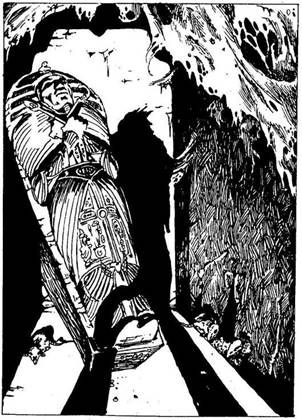
316.
Újra visszamész a tetoválómester üzletébe, ahol Jimmy, a Gyorsfestő fogad. Szemmel láthatóan örül, hogy munkát adsz neki. Lapozz a 279-re.

317.
Az utca bal oldalán az egyik üzlet a gyertyakészítő mesteré. A kirakatban számos színes gyertya ég. Ha be akarsz menni az üzletbe - lapozz a 241-re. Ha inkább továbbmész kelet felé - lapozz a 280-ra.
318.
A koponya valamilyen csoda folytán magához vonzza és elnyeli a villámokat, így sértetlen maradsz. A kövér ember dühös, de már nincs hatalma feletted, így nyugodtan kimehetsz a házból a bejárati ajtón át. Az utcán ismét északnak mész tovább - lapozz a 304-re.
319.
A szobában, ahová belépsz, sötét van, és igen hideg. A falakat és a padlót durván megmunkált kő borítja, s a szobában egy díszes szarkofágon kívül nem látsz egyebet. Erős dohszag terjeng a levegőben. Ha ki akarod nyitni a szarkofágot - lapozz a 352-re. Ha inkább kimész a szobából - lapozz a 231-re.
320.
A vidám halászfeleségek majd kicsattannak az egészségtől. Kerek arcuk akár a piros alma. Megkérded, nincs-e olyasmijük, amire szükséged lenne, de ők csak a fejüket rázzák. Ekkor az egyik elmondja neked, hogy van egy mese, amely azokról a Boszorkányokról szól, akiket a szennyvízcsatornában láttak eltűnni, amikor a patkányok után eredtek, hogy visszaszerezzék tőlük elorzott serpenyőjüket. Ugyanakkor az asszonyság gyorsan hozzáteszi, hogy ő még egyetlenegy Boszorkányt sem látott. Végül úgy döntesz, hogy otthagyod az asszonyokat és továbbmész az útkereszteződéshez, ahol aztán befordulsz balra a Facipő utcába - lapozz a 216-ra.
321.
A létra tövében undorral veszed észre, hogy a szennyvízcsatornában állsz. Fáklyák gyér fénye világítja meg a sötét alagutat, amelynek a faláról kísérteties hangot adva víz csorog alá a szennyvízbe. Ha a csatornában észak felé indulsz el - lapozz a 356-ra. Ha délnek indulsz - lapozz a 118-ra.
322.
Visszamész az üzletbe; a pult mögött egy kicsiny faládában 11 Aranytallért találsz, amit a hátizsákodba teszel. Úgy döntesz, ideje elhagyni a házat. Továbbmész északnak - lapozz a 93-ra.
323.
A kovácsmester meglepődik indokolatlan agresszivitásod láttán, és egy újabb izzó vasdarabot emel ki a lángokból kesztyűs kezével. Nagyon dühös, és a vasdarabbal rád támad.
Kovácsmester ÜGYESSÉG 9 ÉLETERŐ 9
Ha a Kovácsmester bármelyik Fordulóban megsebez, le kell vonnod magadtól 3 ÉLETERŐ pontot, az izzó vas okozta égési sebek miatt. Ha te győzöl - lapozz a 395-re.
324.
A láda széttörik, és a fadarabok között két drágakövet, 15 Aranytallért meg egy fehér selyemkesztyűt lelsz. Ha megpróbálod felhúzni a kezedre a kesztyűt - lapozz a 89-re. Ha csupán a drágaköveket meg az aranyat veszed magadhoz és a házból távozva továbbmész északnak - lapozz a 282-re.

325.
Követed az öreget a forgóajtón át a "Boszorkány és a Béka" nevű fogadóba. Leültet az egyik sarokban egy kis asztalhoz, ő pedig átverekszi magát a tömegen, és odamegy a bárpulthoz, hogy italt rendeljen. A közeli asztaloknál számos rosszarcú figura ül, de szemmel láthatólag ügyet sem vetnek rád. Az öreg csakhamar visszajön, s letesz az asztalra két almaborral teli fakupát. Miután leül, bőrzsákjából két kis tégelyt vesz elő, és az asztalra rakja. Az egyiket kinyitja, és a benne lévő fehér kenőccsel bekeni a sebeit. Mosolyogva mondja, hogy ő alkimista, és azt ajánlja, hogy te is kend be sebeidet a kenőcsével. Megfogadod a tanácsát, és meglepetten tapasztalod, milyen gyorsan begyógyulnak sebeid. Nyersz 5 ÉLETERŐ pontot! Kiiszod borodat, aztán elköszönsz az alkimistától, és kimész a fogadóból. Északnak veszed utadat - lapozz a 348-ra.

326.
A sikátor tele van szeméttel és kidobált holmival. Hirtelen morgást hallasz, és valami megmozdul a szemét alatt. Épp jókor rántasz kardot, mert két hatalmas Vadkutya veti rád magát. Küzdj meg mindkét kutyával!
ÜGYESSÉG ÉLETERŐ
Első Vadkutya 4 4
Második Vadkutya 4 3
Mindkét kutya külön-külön támad minden egyes Fordulóban, s neked kell eldöntened, melyikkel küzdesz meg kettőjük közül. Az általad választott kutyával csapj össze a szokásos módon. A másik ellen viszont ugyancsak a szokott módon dobnod kell, hogy megállapítsd Támadóerődet. De ha a te Támadóerőd is a nagyobb, akkor sem ejtesz rajta sebet - úgy tekinted, mintha csupán kivédted volna az ő támadását. Természetesen, ha az ő Támadóereje a nagyobb, megsebzett téged. Ha te győzöl - lapozz a 184-re. Ha akarsz, Elmenekülhetsz, visszarohanhatsz a sikátoron, majd a Kikötő utcán nyugatnak fordulsz - lapozz a 180-ra.
327.
Olyan érzésed van, mintha tűpárna lennél. Bár a fájdalmad szinte elviselhetetlen, mégis sikerül valahogy elvonszolnod magad a helyszínről. Amint lefelé mész az utcán, jobb kéz felől az egyik ház ajtaja kinyílik, és egy kislány aggódva tekint ki rajta. Hív, hogy menj be a házba. Ha be akarsz menni - lapozz a 126-ra. Ha inkább továbbmész északnak - lapozz a 164-re.
328.
Előveszed az ezüsttárgyat a hátizsákodból, és átadod a Kígyókirálynőnek. Boldogan köszöni meg, hogy elhoztad neki. Kivezet a házból, és 2 Aranytallér borravalót nyom a markodba. Kint az Istálló utcán elindulsz északnak - lapozz a 333-ra.

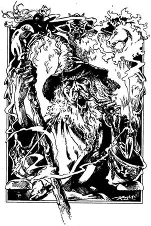
329.
A folyóparton szinte elviselhetetlen a bűz. A fejed fölött lépteket hallasz a hídon. Lent egy fakunyhót pillantasz meg, melyet szorosan a híd tartópilléréhez építettek. A behúzott függönyön át nem látsz be a kunyhóba, de amikor elolvasod a táblán a nagy betűs kiírást: "Belépni tilos", tudod, hogy nem vagy kívánatos vendég odabent. Mély lélegzetet veszel, és bekopogsz az ajtón. Mozgást és csoszogó léptek zaját hallod, majd kicsapódik az ajtó. Ősz hajú, fehér szakállas öregember áll előtted, földig érő fehér köntösben. Zord pillantással végigmér, majd így szól: - Mutatkozz be Nikodémusznak! - Ujjongsz az örömtől, hogy végre megtaláltad a varázslót. Beszámolsz neki Csontos Zanbar rémuralmáról Silvertonban, és elmondod, Owen Carralif miért téged kért meg rá, hogy keresd fel régi jó barátját, aki segíthet nekik. Nikodémusz összevont szemöldökkel visszamegy a kunyhójába, és megkér, hogy kövesd. Miután beül hintaszékébe, nyugodt hangon beszélni kezd: - Én már öreg vagyok, és fáradt, és semmi kedvem újabb kalandokba keveredni. Itt élek az Éneklő híd tövében Feketehomok kikötőben; ide menekültem a bajba jutott emberek szüntelen segítségkérése elől. Itt aztán senki sem zavarja meg a nyugalmamat. De segíteni akarok öreg barátomnak, Owennek. Neked megmondom, hogyan lehet legyőzni Csontos Zanbart, az Éj Hercegét. Hallgass figyelmesen! Ne feledd, csakis napnyugta után lehet őt legyőzni. Nappal egy másik síkon tartózkodik. Nem kétséges, hogy szolgái védelmezni fogják, de ha sikerül leráznod őket, szükséged lesz valamilyen speciális tárgyra, hogy elbánj magával Csontossal. A homlokodra egy sárga napot kell festened, melyben fehér egyszarvú látható, hogy megvédd magad elbűvölő tekintetétől. Közönséges fegyver nem sebzi meg. Először is a szívét kell átlőnöd egy ezüst nyílvesszővel. Ettől megbénul, de nem hal meg. Ezt követően, amilyen gyorsan csak lehet, nyitott szemébe kell szórnod egy fekete gyöngynek, a Boszorkány hajának és a lótuszvirágnak a porrá őrölt keverékét. Ha szerencséd van, ott fog szétrothadni a szemed előtt. Ha nyílvessződ célt téveszt, attól félek, szörnyethalsz, amint hozzád ér. Az őrleményhez szükséges tárgyakat Feketehomok kikötőben találod meg, ha elég kitartóan kutatsz. Sajnálom, de nem tarthatok veled. - Miután ezt elmondja Nikodémusz, átad neked egy térképet, amelyből megtudod, hogyan találhatsz oda Feketehomok kikötőből Csontos Zanbar őrökkel védett várához. Feláll, kezet ráz veled, és sok szerencsét kíván. Kilépsz a kunyhóból, felmész a lépcsőkön, és átkelsz a Macskahal folyón átívelő hídon. A Híd utca még egy rövid darabon északnak visz, majd egy elágazásban ér véget. Ha nyugati irányba akarsz továbbmenni a Kikötő utcán - lapozz a 91-re. Ha keletnek indulsz el, lefelé a Gyertya utcán - lapozz a 238-ra.
330.
Vesztesz 3 ÉLETERŐ pontot! Ha még mindig életben vagy, sikerül kihúznod a nyílvesszőt a válladból. Miközben bekötözöd a sebedet, látod, hogy a kis ember berohan a tőled balra eső házba. Úgy látod, nem lenne könnyű őt utolérni, így aztán átmész a híd alatt, és folytatod az utadat kelet felé - lapozz a 30-ra.
331.
Amint közelebb mész a toprongyos Öregemberhez, az felpattan, és eszeveszett ordításba kezd. Rongyai közül előránt egy tőrt, és neked támad. Vad tekintete egy megszállott őrülté, akivel most meg kell küzdened.
Őrült ÜGYESSÉG 5 ÉLETERŐ 5
Ha legyőzöd - lapozz a 86-ra.
332.
A koldus köszönetképpen megemeli a kalapját, és néhány szót motyog. Nyersz 1 Szerencse pontot, majd folytatod az utadat nyugat felé - lapozz a 124-re.
333.
Csakhamar egy útelágazáshoz érsz. Az Istálló utca továbbhalad északnak, bal kéz felől pedig a Torony utca nyílik, s nyugat felé vezet. Úgy döntesz, hogy északnak mész tovább - lapozz a 76-ra.
334.
Az utcán lefelé ballagva két városi őr közeledik feléd. Megállnak előtted, és az irataidat kérik. Ha van kereskedői engedélyed - lapozz a 255-re. Ha nincs - lapozz a 99-re.
335.
A két Troll közül a magasabb közli veled, hogy letartóztat, mert engedély nélkül tartózkodsz Feketehomok kikötőben. Azt mondja, hogy ennek ellenére nagylelkűen bánik veled, és kapsz egy lehetőséget. Választhatsz: vagy bírságot fizetsz és odaadod neki az összes aranyadat, ami a hátizsákodban van, és akkor kipenderítenek a városból, vagy egy kerek esztendőt kell patkányok és svábbogarak között eltöltened a koszos föld alatti börtönökben. A másik Troll felnevet: - Nagylelkű? Ha-ha-ha! Ó, Savanyúhas, milyen ragyogó humorod van! - Ha hajlandó vagy a bírságot kifizetni és hagyod, hogy kitegyék a szűrödet a városból - lapozz a 367-re. Ha nem hagyod, hogy letartóztassanak - lapozz a 73-ra.
336.
Amikor bemész a boltba, azonnal rájössz, hogy miért van rács a kirakaton: ékszerüzletben vagy. Az üvegpult mögött jól megtermett, kopasz férfi áll, egyik szemén fekete kendővel. Barátságos mosollyal üdvözöl, de hiányos fekete fogazata és ronda szája nem ébreszt benned bizalmat iránta. A férfi háta mögött hatalmas harci szekerce lóg a falon, hogy elrettentse az esetleg betévedő rablókat. Gyémánttal, smaragddal és rubinnal díszített gyűrűk sorakoznak mindenütt, szépen kiállítva. A férfi megkérdi, vajon venni, vagy eladni akarsz-e. Mit felelsz?
Megkérded, mibe kerülnek
a gyűrűk? Lapozz a 36-ra.
Felajánlasz neki megvételre néhány
Drágakövet (ha van egyáltalán a
birtokodban)? Lapozz a 302-re.
Rátámadsz a kardoddal? Lapozz a 170-re.
337.
Gratulálok, megölted Csontos Zanbart, az Éj gonosz Hercegét! Ott rothad szét a szemed előtt, és nem marad más belőle, mint egy marék hamu - lapozz a 400-ra.
338.
A Balszerencse Italát ittad ki! Vonj le magadtól 3 Szerencse pontot! Abban a reményben, hogy máskor több szerencséd lesz, továbbmész északnak - lapozz a 105-re.
339.
A férfi rád néz, majd mosolyogva így szól: - Nem sok látogatónk akad errefelé, de biztos vagyok benne, hogy uram szívesen adna neked szállást. Bújj be! - Utat enged neked, s egy gyönyörű márványpadlós előcsarnokba lépsz be. A falakat körbe-körbe portrék és pajzsok díszítik, s egy csigalépcső vezet fel a felső szintre. Megkér, hogy kövesd a lépcsőn fölfelé. Felajánlja, hogy segít felcipelni a hátizsákodat. Készséggel beleegyezel. A csigalépcső egészen a torony tetejéig visz, de kísérőd az első szintnél nem megy tovább, hanem elindul egy ajtó felé. Kinyitja, belép egy tágas szobába, s hátizsákodat ráteszi a megvetett ágyra. Közli veled, hogy ez a te szobád éjszakára, majd kimegy, s még hozzáteszi, hogy urával csak reggel fogsz találkozni. Ha bezárod az ajtót és bebújsz az ágyba - lapozz a 288-ra. Ha néhány perc múlva elindulsz, hogy átkutasd a tornyot - lapozz a 77-re.

340.
Ismét bedugod a drótot a zárba, erre az végre kattan. Nyersz 1 Szerencse pontot! Miután felnyitod a láda tetejét, legnagyobb örömödre 25 Aranytallért és egy pompás pajzsot találsz benne. Ha majd a csatában használod ezt a pajzsot, minden egyes Fordulóban 1 ponttal fogja növelni Támadóerődet. Most, ha akarod, felmehetsz a csigalépcsőn a következő emeletre - lapozz a 60-ra, vagy kimehetsz a házból, és folytatod az utadat északnak - lapozz a 304-re.
341.
Úgy döntesz, hogy sürgősen kereket oldasz, mert különben még téged is börtönbe vetnek. Előveszel 5 Aranytallért a hátizsákodból, és odahajítod nekik a földre. Az őrök lehajolnak, hogy fölszedjék a pénzt, te pedig rohanni kezdesz észak felé, amilyen gyorsan csak tudsz. Amikor futásnak eredsz, a gyilkos üvölteni kezd, és két őr utánad iramodik.
Az egyik sikátorban egy hordót veszel észre, és beleugrasz. Hallod, amint az őrök elrohannak a hordó előtt, de vársz még néhány percet, mielőtt kimásznál. Végignézel az Istálló utcán, s látod, hogy tiszta a levegő. Ismét elindulsz északnak - lapozz a 222-re.
342.
Az Ember-Ork közli veled, hogy 1 Aranytallérért mindent elmond neked, amit tud. Ha fizetni akarsz az információért - lapozz a 289-re. Ha inkább kimész az üzletből és továbbindulsz északnak - lapozz a 93-ra.
343.
Eszméletlenül terülsz el a földön. Vesztesz 3 ÉLETERŐ pontot! Ha még mindig életben vagy, amikor magadhoz térsz, kint találod magad a Facipő utcában, az üzlet előtt. Rájössz, hogy az összes ezüsttárgyad hiányzik. Felállsz, és dühösen mész tovább - lapozz a 100-ra.
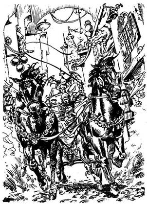
344.
Kimész az úttest közepére, és vársz. Hirtelen két vágtató ló tűnik fel a távolban; egy díszes aranyhintót húznak. A kocsis észrevesz, és ostorával nagyot csapva így kiált: - Utat Azzur nagyúrnak! - Ha kitérsz az útból - lapozz az 58-ra. Ha ott maradsz, ahol állsz - lapozz a 252-re.
345.
A férfi dühödt pillantást vet rád, öklével rácsap a pultra, és így szól: - Ez nem bazár! Ha nem tetszenek az áraim, vidd máshová a portékádat! Most pedig takarodj a boltomból, mielőtt még kettéhasítalak! Mit teszel?
Azt mondod neki, hogy nyugodjon meg,
elfogadod az ajánlatát? Lapozz a 240-re.
Kimész az üzletből, és továbbindulsz
nyugatnak? Lapozz a 196-ra.
Rátámadsz a kardoddal? Lapozz a 170-re.
346.
A távolság túl nagy még egy olyan harcos számára is, amilyen te vagy. Szerencsétlenül esel, és nyakadat töröd. Kalandod itt véget ér!
347.
Gyorsan elindulsz lefelé az utcán, de visszapillantasz, amikor üdvrivalgás hangjait hallod a hátad mögött. Néhány ember, kart karba öltve, körtáncot lejt a 10 Aranytallérod körül. Megátkozod ezt a tolvaj várost, és továbbmész északnak - lapozz a 112-re.
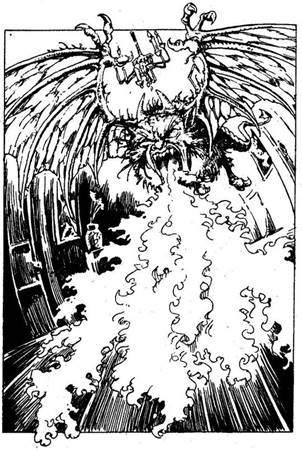
348.
A Torony utca élesen jobbra kanyarodik, s kelet felé tart a magas házak között. A fejed fölött egy vashíd ível át az utcán; két épületet köt össze. A hídon nagy sürgés-forgást veszel észre. Apró, köpenyes emberkék megrakott zsákokat cipelnek nagy sietve egyik házból a másikba. Ha odakiáltasz nekik - lapozz a 251-re. Ha átmész a híd alatt és folytatod az utadat keletnek - lapozz a 30-ra.
349.
Hirtelen egy kicsiny szárnyas teremtménnyel találod szemben magad. Alig egy méter hosszú, és előtted röpköd. Színe piros, két szarv áll ki a feje búbjából, és picinyke farka van. Nehéz lesz legyőzni, ugyanis igen gyorsan köröz a fejed fölött, és közben tüzet okád.
Tűzmanó ÜGYESSÉG 9 ÉLETERŐ 4
Ha te győzöl - lapozz a 258-ra. Ha akarod, Elmenekülhetsz: az ablakon át kiugorhatsz az utcára - lapozz a 192-re.
350.
Kinyitod a hátizsákod és úgy teszel, mintha virágok után kutatnál. A Kígyókirálynő nyugtalankodni kezd és látod, hogy egyre türelmetlenebb. Nem jut eszedbe egy jó terv sem, ezért pánikba esel. Ha a bejárathoz rohansz, lapozz a 32-re. Ha kivont karddal a Kígyókirálynőre támadsz, lapozz a 249-re.
351.
Hátizsákodból előveszel 10 Aranytallért, és belerakod az öreg kinyújtott tenyerébe. Ekkor az öreg benyúl ruhája redői közé, és előhúz egy vaskulcsot. Miközben átnyújtja neked, közli, hogy ez a kulcs nyitja cellád ajtaját. Hitetlenkedve veszed át tőle a kulcsot, és a zárba helyezed. Csodák csodájára az megfordul a zárban. Az ajtóból visszaszólsz az öregnek, és megkérded, nem akar-e veled együtt elmenekülni. Mosolyogva rázza meg a fejét, és csak annyit mond, hogy ő jól érzi magát ott, ahol most van. Kimész a cellából, magadhoz veszed a kardodat, és elindulsz fölfelé a lépcsőn. A két őr a felső szinten kártyázgat. Meglengeted a kardodat a levegőben, és rájuk támadsz. A két őr is kardot ránt, hogy megvédje magát. Külön-külön támadnak rád.
ÜGYESSÉG ÉLETERŐ
Első Városi Őr 6 6
Második Városi Őr 7 5
Ha te győzöl - lapozz az 54-re.
352.
Fölemeled a szarkofág tetejét, s egy rongyokba burkolt emberi testet pillantasz meg. Annak ellenére, hogy ugyancsak gyér a fény, mégis megzavarta a Múmia álmát. Felül, s forgatni kezdi a fejét. Megérzi, hol állsz, és kikászálódik a szarkofágból. Két karját kitárva elindul feléd. Ha megküzdesz a Múmiával - lapozz a 193-ra. Ha van Lámpásod és azt hozzávágod - lapozz a 106-ra.
353.
Megpróbálod lenyomni a bejárati ajtó sárgaréz kilincsét, de hiába; az ajtó zárva van. Ha van nálad vaskulcs - lapozz a 181-re. Ha nincs vaskulcsod, megpróbálhatod betörni az ajtót - lapozz a 389-re, vagy visszamehetsz az utcára, ahol északnak fordulsz - lapozz a 304-re.
354.
A tetoválómester unottan rád néz, és így szól: - Remélem, nem ingyen kéred a tetoválást? Ha van bármilyen eladni való portékád, menj be a szomszéd házba. A mostohafivérem lakik ott, aki zálogkölcsönző. Mondd meg neki, hogy én küldtelek, ő majd jó árat ad a holmidért. - Kimész, és bekopogsz a szomszéd ház ajtaján. Egy kancsal férfi nyit ajtót, akivel közlöd, hogy szeretnél ezt-azt eladni, mivel nincs miből kifizetned a tetoválás árát. A férfi behív a házába. A szoba, ahova bevezet, zsúfolásig tele van mindenféle tárggyal, bútorral, fegyverrel, régiséggel és agyagedénnyel. A fickó elmondja, hogy van egy bódéja a piacon, amit hetente egyszer vesz bérbe. Ezután felsorolja, mit venne, és azt is közli, miért mennyit ad:
Ezüstserleg 8 Aranytallér
Csontváz kulcs 15 Aranytallér
Skorpió melltű 10 Aranytallér
Varázsgyűrű 12 Aranytallér
Ezüst karperec 5 Aranytallér
Sisak 7 Aranytallér
Ezüstfurulya 5 Aranytallér
Szemtakaró 1 Aranytallér
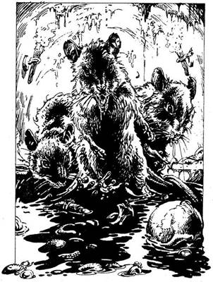
Játszócsontocska 1 Aranytallér
Tükör 1 Aranytallér
Bármelyik tárgyat eladhatod a zálogkölcsönzőnek. Búcsút mondasz neki, és kimész a házból. Ha van ma annyi pénzed, hogy kifizesd a tetoválás árát - lapozz a 316-ra. Ha még mindig nincs elég pénzed, újra el kell ide látogatnod. Visszamész a kis közön, és balra fordulsz a Malom utcán - lapozz a 307-re.
355.
Rátámadsz a két őrre, akik fogva tartanak, és még mielőtt észbe kapnának, úgy összekoccantod a fejüket, hogy eszméletüket vesztik. Szapora léptekkel elindulsz a városba - lapozz a 74-re.
356.
Visító hangokat és hatalmas csobbanásokat hallasz a távolból. Feléd közeledő alakok hosszúra nyúlt árnyéka vetődik a falra. Három Óriáspatkány hatalmas, csillogó testét pillantod meg néhány méternyire. Sietve előrántod a kardodat, és egyenként próbálsz meg elbánni velük.
ÜGYESSÉG ÉLETERŐ
Első Patkány 4 4
Második Patkány 5 4
Harmadik Patkány 5 5
Ha legyőzöd őket - lapozz a 28-ra.
357.
Az Ogre őrülten éhes, és felkap a földről egy hatalmas lábszárcsontot. Meglengeti a feje fölött, és neked ront. Meg kell küzdened vele!
Ogre ÜGYESSÉG 8 ÉLETERŐ 9
Ha legyőzöd - lapozz a 71-re. A harmadik Forduló után Elmenekülhetsz a házból, és futva folytathatod az utadat északnak - lapozz a 282-re.
358.
Egy hajszálon múlik, de mégis sikerül megkapaszkodnod a falban. Felhúzódzkodsz, és felmászol a várost körülvevő fal tetejére, ahol keskeny út fut végig. Jobbra és balra bástyák emelkednek az oromzat fölé, úgy száz méterre egymástól. Mindegyik bástyán ajtó van, amelyek most hirtelen kipattannak, és újabb őrök tömege zúdul ki rajtuk, hogy elkapjanak. A fal túloldalán vagy húsz méter mély szakadék tátong. Mit teszel?
A mélybe veted magad, hogy így
szabadulj meg? Lapozz a 346-ra.
A falhoz erősíted a mászóköteledet
(ha van), és azon ereszkedsz le
a fal túloldalán? Lapozz a 108-ra.
Bevárod az őröket? Lapozz az 56-ra.
359.
A te csapatodban lévő Base-ek köréd sereglenek, és kezet ráznak veled. Győzelmi mámorban égnek. A szurkolók odafutnak hozzád, s ajándékokkal halmoznak el. Végül sikerül kiszabadulnod rajongóid gyűrűjéből, és leülsz, hogy szemlét tarts szerzeményeid fölött. Kaptál összesen 8 Aranytallért, egy áttetsző folyadékkal teli üveget, melynek címkéjén az "Agykontroll" feliratú címke díszeleg, egy ezüstfurulyát, egy fürt banánt, egy darabka krétát meg egy szemtakarót. Megeszed a banánt (nyersz 2 ÉLETERŐ pontot), és a többi ajándékot elteszed a hátizsákodba. Jelöld Kalandlapodon! Mielőtt a Base-ek új mérkőzésbe kezdenének, te átmászol a falon. Visszamész az útelágazáshoz, és nyugat felé tartva elindulsz a Kikötő utcán. Lapozz a 91-re.

360.
Miközben a Farkaskutyákkal viaskodtál, Wraggins kirohant az üzlet elé, valószínűleg azért, hogy segítséget hívjon. Ha bennmaradsz az üzletben és átkutatod - lapozz a 123-ra. Ha inkább gyorsan elszelelsz és továbbmész nyugatnak a Kulcs utcán - lapozz a 300-ra.
361.
A buta Zombik magasra emelt bottal a kezükben lassan elindulnak feléd. Küzdj meg velük egyenként!
ÜGYESSÉG ÉLETERŐ
Első Zombi 6 6
Második Zombi 6 7
Ha te győzöl - lapozz a 297-re.
362.
A bakancs remekül illik a lábadra és biztosan lépkedsz benne. Varázserejű elf-bakancs ez. Nyersz 1 ÜGYESSÉG pontot és ismét továbbmész keletnek - lapozz a 103-ra.
363.
Az utca közepén egy jókora akna nyílásának fedelét pillantod meg. Ha fel akarod emelni a fedelet, hogy megnézd hova vezet az akna - lapozz a 48-ra. Ha inkább továbbmész keletnek - lapozz a 205-re.

364.
A sovány férfi nagyon szerencsétlen ember benyomását kelti. - Amint megpillant, hátrálni kezd, s közben azt hajtogatja, hogy őt nem érdemes kirabolni, mert nincs egy vasa sem. Elmondod neki, hogy egyáltalán nem áll szándékodban kirabolni őt, csupán meg szeretnéd tudni tőle, nem ismer-e egy Nikodémusz nevű varázslót, akit keresel. Meglepetten néz rád, majd így szól: - 2 Aranytallérért megmondom, hol találod. - Úgy döntesz, hogy hiszel az öregnek, és kifizeted a kért összeget az információért. Miután zsebre vágja az aranyakat, így szól - Pont fölötte állsz! Nikodémusz a híd alatt lakik egy kunyhóban. - Hátraveti a fejét, harsányan felkacag, majd elbiceg a mankóján - szemmel láthatóan nagyon meg van elégedve önmagával. Fejcsóválva odamész a lépcsőhöz, amely a híd alá visz. Lapozz a 329-re.

365.
Jó néhányszor nekimész az ajtónak, mire beszakad. Szerencsétlenségedre a vállad közben megsérül. Vesztesz 1 ÜGYESSÉG pontot! A keletkezett nyíláson át egy vékonydongájú, sápadt arcú, karikás szemű férfit pillantasz meg, aki a szolgák egyenruháját viseli. Hűvös, sziszegő hangon így szól: - Miért kell ide ilyen drámai módon betörni? Nem tudtad volna meghúzni a csengő zsinórját, mint mindenki más? - Ha bocsánatot akarsz kérni tőle és közlöd vele, hogy eltévedt vándor vagy - lapozz a 339-re. Ha kardoddal akarsz rátámadni - lapozz a 35-re.

366.
Kifizeted a dohánykeverékért járó pénzt, és kimész az üzletből. Kint az utcán megtömöd a pipádat, és rágyújtasz. - A füstje sötét, az íze undorító. Köhögni kezdesz, és rettenetes fájdalom kínozza a melledet. Veszítesz 2 ÉLETERŐ pontot! Képtelen vagy abbahagyni a köhögést, ezért leülsz a járda szélére pihenni. Leroskadsz két hordó közé, hátadat a falnak támasztod, és a köhögés lassan csillapodni kezd. Ha vissza akarsz menni a gyógyfűkereskedőhöz, hogy panaszt tegyél nála - lapozz a 101-re. Ha inkább továbbmész északnak - lapozz a 93-ra.
367.
A Trollok figyelmesen szemlélik, amint kinyitod a hátizsákodat. Átadod nekik az összes Aranytallérodat, kivéve egyet, amelyet sikerül elrejtened előlük. Ekkor aztán közrefognak, és elkísérnek a Malom utcán, egészen az Északi Városkapuig, amely a Lúd utca kereszteződésénél van. Megparancsolják a két ügyeletes kapuőrnek, hogy vissza ne engedjenek a városba. Jól fenéken rúgnak, és a kinti poros úton landolsz. Rendelkezel-e az összes tárggyal, melyre az Éj Hercegének elpusztításához szükséged van? Ha igen - lapozz a 201-re. Ha egyetlenegy is hiányzik a megadott tárgyak közül, vagy nincs tetoválás a homlokodon - lapozz a 299-re.

368.
Amikor belenéz a kristálygömbbe, szinte önkívületi állapotba kerül. Közli veled, hogy egy férfit keresel, egy tudós öreget, akinek varázsereje van. Kis szünetet tart, majd mély lélegzetet vesz, és elmondja, hogy a férfi, akit keresel, északon lakik egy híd alatti kunyhóban. Figyelmeztet, hogy légy óvatos, amikor a férfival találkozol, ő ugyanis nem szereti az idegeneket. Ekkor felnéz a kristálygömbből, és felszólít, hogy távozz. Az arcán úgy látod, mintha titkolna előled valamit. Lehet, hogy valami szörnyűséges veszedelmet lát, amely rád leselkedik? Úgy döntesz, hogy távozol a sátorból és észak felé mész tovább - lapozz a 117-re.
369.
Amikor visszaérsz az útkereszteződéshez, befordulsz balra a Facipő utcába, és keletnek folytatod az utadat - lapozz a 216-ra.
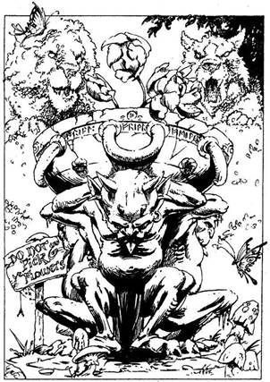
370.
Bedobod az 1 Aranytallért a perselybe, és átmész a forgóajtón. Annak ellenére, hogy a bokrok és virágok nem túl ritka növények, mégis elámulsz, hogy egyáltalán létezik ilyen hely Feketehomok kikötőben. A parkban kiépített kertecskék nem túl nagyok, vagy hatvan méterre hátrébb házak húzódnak meg. Két ösvényen lehet elindulni. Az egyik a park körül vezet körbe, a másik pedig egyenesen a park közepébe visz, ahol egy művészien megalkotott parkrész - állat formájúra nyesett bokrok tömege - tárul a szemed elé. Úgy határozol, hogy ezeket közelebbről is megnézed. Az ösvényen egy kis kikövezett térre jutsz el, melyet a már említett állat formájúra nyírt bokrok vesznek körül. A kis tér közepén egy kőtalapzaton lévő agyagtálban lótuszvirágok nőnek! Mellette egy táblára felfestve ez olvasható: - "A virágot letépni tilos!" Sem a kertészt nem látod a parkban, sem mást. Ha mégis megpróbálsz leszakítani egy virágot - lapozz a 14-re. Ha inkább kimész a parkból és folytatod az utadat észak felé - lapozz a 133-ra.
371.
Az üzlet hátsó szobájában a poros polcon egy üvegkancsót találsz, amelynek a címkéjén ez áll: "Gyógyír". Ha egy keveset a sebeidre kensz belőle (ha van sebed) - lapozz a 83-ra. Ha inkább tovább kutatsz az üzletben - lapozz a 322-re.
372.
A házak az Istálló utcának ezen a részén sűrűn egymás mellett, két sorban épültek. Mindegyik homokkőből van, kivéve egyet, amely tőled jobbra, középen áll. Ez téglaház, a falait fehérre meszelték. Ajtaja tölgyfából készült, melybe egy kígyófejet véstek. Ha be akarsz menni a fehérre meszelt házba - lapozz a 131-re. Ha inkább továbbmész északnak - lapozz a 333-ra.
373.
Eltorzul az arcod, amikor érzed, hogy a méreg lassan végigáramlik a kezeden. Vesztesz 4 ÉLETERŐ és 1 ÜGYESSÉG pontot! Ha még mindig életben vagy (ha még nem tetted volna), felemelheted a B jelzésű serleget - lapozz a 209-re, vagy a C jelzésű serleget - lapozz a 43-ra. Ha a továbbiakban már nem érdekelnek a serlegek, vagy átmehetsz a boltíves átjárón - lapozz a 107-re, vagy felmehetsz a lépcsőn - lapozz a 60-ra.
374.
A pajzs egy daliás lovagé volt, aki Csontos Zanbar keze által halt meg. Ez egy varázspajzs. Nyersz 1 ÜGYESSÉG pontot! Visszamész a csigalépcsőhöz, és új szerzeményeddel, a varázspajzzsal fölmész a következő szintre - lapozz a 21-re.
375.
Az utcát végül egy hatalmas kőfal zárja be. Kőlépcsők vezetnek fel a tetejére. A fal túloldaláról morgást, dörmögést, éljenzést hallasz. Ha fel akarsz mászni a falra - lapozz a 40-re. Ha visszamész az útkereszteződéshez, és nyugat felé indulsz tovább a Kikötő utcán - lapozz a 91-re.
376.
A sisak remekül illik a fejedre, mintha csak neked készült volna. Mivel ez varázssisak, minden alkalommal, amikor a játék során dobókockával kell meghatároznod a Támadóerődet, 1 plusz pontot adhatsz a kapott összeghez mindaddig, amíg a sisak a fejeden van. Nyersz 1 Szerencse pontot! Ismét elindulsz keletnek. Lapozz a 161-re.
377.
A vasrácsot jól odaerősítették a téglafalhoz, és képtelen vagy kiemelni. A rács fölött azonban egy sötét üreget veszel észre, ahonnan néhány téglát kiemeltek a falból. Túl sötét van ahhoz, hogy mélyen beláss az üregbe. Ha be akarsz nyúlni a sötét lyukba - lapozz a 92-re. Ha inkább visszamész a bejárati nyíláshoz - lapozz a 174-re.
378.
Dobj egy kockával külön a magad, külön a meztelen felsőtestű férfi nevében - a kapott szám jelzi az ágyúgolyó röptét. Addig dobj a kockával, amíg 1-et nem dobsz, ami azt jelenti, hogy az illető, aki éppen következett, elejtette a golyót. A vesztes akkor kifizeti a győztesnek az 5 Aranytallért. A játék végeztével továbbmész. Lapozz az 52-re.
379.
Vesztesz 2 ÉLETERŐ pontot! A karodon lévő vágás okozta fájdalom ellenére gyorsan kell cselekedned, hogy mielőbb elmenekülj az egyre inkább támadó Páncélruha elől. Ha be akarsz nyitni az előtted lévő ajtón - lapozz a 122-re. Ha inkább visszafutsz a csigalépcsőhöz és felmész a következő szintre - lapozz a 207-re.
380.
Poshadt íze ellenére a levesben az ősi hagyományoknak megfelelően őrölt gyógynövények vannak, melyek jótékony hatással vannak rád. Nyersz 4 ÉLETERŐ pontot! Testben megerősödve úgy döntesz, magukra hagyod a hölgyeket, hadd veszekedjenek, és továbbmész keletnek - lapozz a 375-re.
381.
Az őr homlokát ráncolva így szól: - Elég hihetően hangzik, amit mondasz, szentigaz. De én mégis azt hiszem, te sem vagy jobb, mint azok ott bent a városban. Ha akarod, saját felelősségedre nyugodtan bemehetsz, de 3 Aranytallérért tudok neked adni egy jó tanácsot. - Ha fogod magad és egyszerűen csak bemész a városba - lapozz a 74-re. Ha fizetsz az őrnek a tanácsért - Kalandlapodon jelöld a 3 Aranytallér-kiadásodat, és lapozz a 261-re.
382.
A gyűrűből gáz csap ki, amely a Lélekrabló testéhez érve jéggé dermed, és tetőtől talpig beborítja. Ez azonban nem akadályozza meg őt abban, hogy továbbra is feléd közeledjen, de lényegesen lelassítja. Van időd rá, hogy ha akarod, kilődd rá ezüst nyílvessződet - lapozz a 189-re, vagy elővedd a tükrödet, hogy belenézve megriadjon saját tekintetétől - lapozz a 305-re -‚minthogy Jéggyűrűdnek nem tudtad igazán hasznát venni.
383.
Ha még nem tetted volna, kinyithatod a másik ajtót - lapozz a 271-re, vagy a hajót elhagyva folytathatod a kutatást Feketehomok kikötőben, észak felé menve a Kikötő utcán - lapozz a 78-ra.
384.
Amikor a husáng meglendül a levegőben, behúzol egy hatalmasat a Törpének, aki rád akar vágni vele. Az hatalmasat ordítva ledobja a földre a husángot. Elered az orra vére, és a keze is csupa vér lesz tőle. Üvöltve rohan végig a sikátoron. A másik két Törpe, aki a lábadat fogta le, látja, hogy nem lehet veled egykönnyen elbánni, és a társa után vetődik. Ha üldözőbe veszed őket - lapozz a 221-re. Ha inkább folytatod az utadat nyugatnak - lapozz a 396-ra.

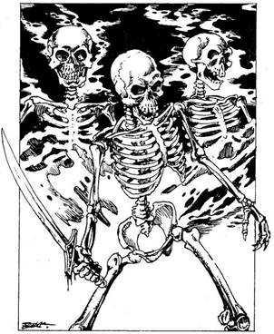
385.
Valami azt súgja neked, hogy a ládikó csupán illúzió, egyáltalán nem létezik. Azt is látod, hogy a fekete macska sem az, aminek láttad. Egy fekete palástot viselő, áttetsző zöld szemű Csontváz áll előtted, fején aranykoronával - ez maga Csontos Zanbar! Mielőtt még időd lenne rá, hogy bevágd a nyílvessződ végét, az E Hercege kihúzza és a földhöz vágja három fogát. Hatalmas robbanást hallasz, majd a felszálló füstgomolyagból három, karddal felfegyverzett Csontváz lép eléd. Egyenként küzdj meg velük!
ÜGYESSÉG ÉLETERŐ
Első Csontváz 6 7
Második Csontváz 8 6
Harmadik Csontváz 7 7
Ha te győzöl - lapozz a 203-ra.
386.
A Kalóz szemmel láthatólag örül, hogy meg akarsz vele küzdeni, és fogatlan száját széles vigyorra nyitja. Ettől kissé inadba száll a bátorságod.
Kalóz ÜGYESSÉG 7 ÉLETERŐ 5
Ha legyőzöd - lapozz a 20-ra.
387.
A melltű, amit kitűztél, tudtodon kívül lelassítja mozgásodat a csatában. Vonj le magadtól 1 ÜGYESSÉG pontot! Mivel semmi más érdekeset nem találsz a szobában, úgy döntesz, hogy visszamész a lépcsőn és elhagyod a házat, majd folytatod utadat északnak - lapozz a 334-re.
388.
Teljes erővel megpróbálod lefeszíteni a vitrinen lévő védőrácsot, de az meg sem moccan. Mivel az üzletben semmit nem látsz, aminek esetleg hasznát vehetnéd, kimész, és folytatod az utadat keletnek - lapozz a 100-ra.
389.
Teljes erővel nekifeszülsz az ajtónak. Dobj két kockával! Ha a kapott összeg kevesebb vagy ugyanannyi, mint ÜGYESSÉG pontjaid száma, az ajtó kinyílik - lapozz a 159-re. Ha a kapott összeg nagyobb, mint ÜGYESSÉG pontjaid száma, az ajtó nem enged. Ekkor úgy döntesz, nem kockáztatod meg, hogy esetleg megsérülj, hanem inkább visszamész az utcára, ahol északnak indulsz tovább - lapozz a 304-re.
390.
A Boszorkány elrebegi a varázsigét, amelytől rettenetes félelem fog el. Rémképek szállnak meg, azt képzeled, elevenen égetnek el a csontváz arcú ujjongó tömeg szeme láttára. Kardoddal vakon csapkodni kezdesz, hogy lekaszabold a rajtad nevetőket. Tedd próbára a Szerencsédet! Ha Szerencséd van, kardoddal lekaszabolod a Boszorkányt - lapozz a 144-re. Ha nincs Szerencséd, kardod csupán a levegőt éri - lapozz az 59-re.

391.
A sötétben nem vetted észre, hogy az ajtóban a lábad előtt egy kötélcsapdát húztak ki, amely a szemközti falra erősített, feléd irányított íjpuskát hozza működésbe. Így aztán, amint belépsz, beleakadsz a kötélbe, és az nyomban kiröpíti a nyílvesszőt. Tedd próbára a Szerencsédet! Ha Szerencséd van, megbotlasz a kötélben és elesel, így a nyílvessző elszáll a fejed felett, majd kirepül az ajtón - lapozz a 235-re. Ha nincs Szerencséd, a nyílvessző beleáll a melledbe - lapozz a 142-re.

392.
A teremtmény mérgesen rád támad, amiért elloptad egyik melltűjét. Felpattan, és miközben dühe egyre nő, látod, hogy orrlyukaiból füst száll fel. Hirtelen tűzcsóva csap ki a száján, és a szörny kimeresztett karmaival feléd közeledik. A tűzcsóva ugyan nem talál el, de meg kell küzdened a teremtménnyel.
Gyíknő ÜGYESSÉG 8 ÉLETERŐ 8
A csata szokásos szabályai szerint dobj egy kockával minden Fordulóban a Gyíknő tüzes leheletéért. Ha 1-et, 2-t vagy 3-at dobsz - 1 pontot vonja le ÉLETERŐ pontjaidból az elszenvedett égési sebeidért. Ha 4-et, 5-öt vagy 6-ot dobsz - sikerül elugranod a tűzcsóva elől. Ha akarod, használhatod a SZERENCSÉDET a tűzzel szemben, vagy Elmenekülhetsz: leszaladhatsz a lépcsőn, kirohanhatsz a házból s északnak futhatsz tovább - lapozz a 334-re. Ha maradsz és a csatát te nyered meg - lapozz a 186-ra.
393.
Közlöd a Trollokkal, hogy fegyverkészítő mester vagy és a piacon jártál, hogy az ottani bódétulajdonosoknak felkínáld a tőrjeidet. Savanyúhas gúnyosan elmosolyodik, és így szól: - Tehát akkor befejezted itt az ügyködésedet, ugye? Engedd meg, hogy elkísérjünk a város kapujáig. - Ha hagyod, hogy kidobjanak a városból - lapozz a 156-ra. Ha rátámadsz a Trollokra - lapozz a 73-ra.
394.
Egy kicsiny asztalka mögött terebélyes asszonyság ül világossárga ruhában, kendővel a fején. Mosolyogva fogad, amikor belépsz, és hellyel kínál. Közli veled, hogy egy pillantás a múltba 2 Aranytallérba kerül. Ha fizetni akarsz a jóslásáért - lapozz a 368-ra. Ha nem tartasz igényt a segítségére, úgy távozz a sátrából, és folytasd utadat északnak - lapozz a 117-re.
395.
A kovácsmester jó ember volt. Vesztesz 4 Szerencse pontot! Gyötrő bűntudattal távozol az istállóból, és folytatod utadat északnak - lapozz a 115-re.
396.
Az utca bal oldalán egy virágüzletet veszel észre. A kirakat telis-tele van színpompás, egzotikus virágokkal. Ha be akarsz menni az üzletbe - lapozz a 145-re. Ha inkább továbbmész nyugat felé - lapozz a 24-re.
397.
Nem kétséges, hogy a csavargók ki akartak rabolni - Csupán 1 Aranytallérjuk van. A zsebeiket átvizsgálva semmi egyebet nem találsz, így aztán úgy döntesz, hogy továbbmész északnak az Istálló utcán - lapozz a 372-re.
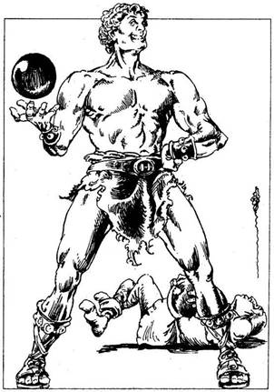
398.
Kisebb embergyűrű vesz körül egy meztelen felsőtestű férfit. Hatalmas termetű ember ez, izmai kemények, akár a vas. Azt kérdi az egybegyűltektől, van-e köztük olyan vállalkozó szellemű jelentkező, aki labdázna vele egy ágyúgolyóval. Kijelenti, hogy aki elejti az ágyúgolyót, az 5 Aranytallért fizet a másiknak. Ha akarsz vele játszani - lapozz a 378-ra. Ha inkább továbbmész - lapozz az 52-re.
399.
A hajó tatjáról egy kötélhágcsó lóg le a kikötőgáthoz, ahonnan egy hajóhíd is felvezet a hajóra. Ha a kötélhágcsón akarsz felmászni a fedélzetre - lapozz a 87-re. Ha egyenesen a hajóhídon mész fel - lapozz a 294-re.
400.
Amilyen gyorsan csak tudod, elhagyod Csontos Zanbar várát - semmi kedved hozzá, hogy egy perccel is tovább maradj ezen a pokoli helyen. De mielőtt elmennél, felgyújtod a várat, nehogy valami gonosz ember felhasználhassa aljas szándékai megvalósításához. Az éjszakát a mezőn töltöd, majdnem délig alszol, majd délután útra kelsz Silvertonba. Fáradtan, éhesen érkezel meg még aznap este Silvertonba. Hősnek kijáró tisztelettel fogadnak, és ajándékokkal halmoznak el. Hatalmas ünnepséget csapnak a tiszteletedre, az utcákon nagy a dínomdánom, szól a zene, mindenki jókedvű. Végezetül Owen Carralif mond beszédet, és átnyújt neked egy több Száz Aranytallérral teli aranygömböt. Silverton népe ismét boldog.